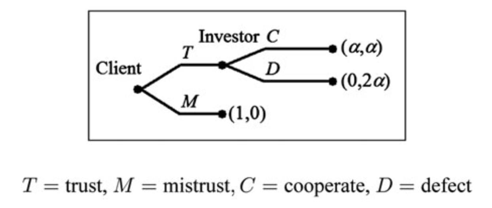
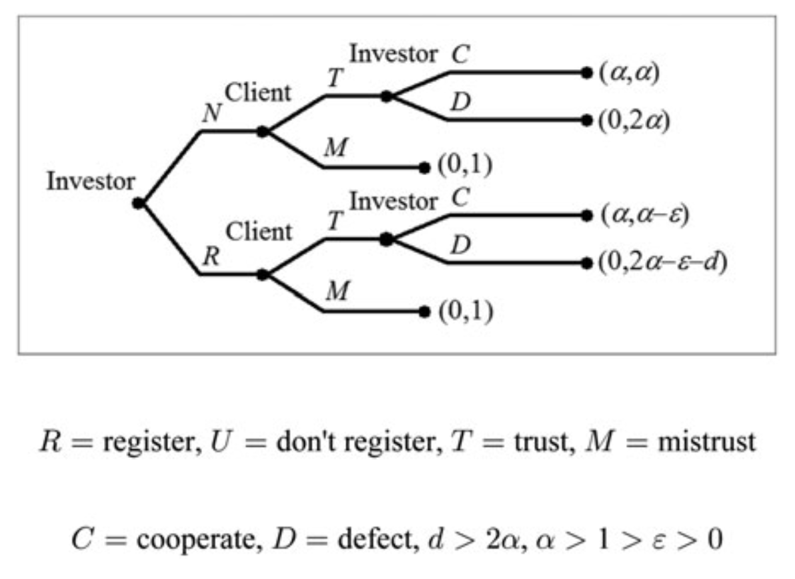
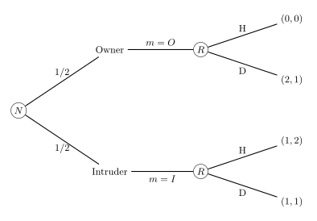

Социальная наука будущего может быть настолько же онтологически удивительной, как физика 20-го века
Дон Росс
Введение
Актуальность исследования
Проблема принудительной силы социальных институтов — одна из центральных и наиболее дискуссионных в современной социальной онтологии. Социальные институты — деньги, право, собственность, брак, государство — не просто описывают, но и создают социальную реальность. Они направляют и ограничивают репертуар действий и создают устойчивые, самовоспроизводящиеся паттерны поведения. Этот феномен — принудительная сила институтов — составляет центральную проблему настоящего исследования.
Проблема принудительной силы социальных институтов известна во времён классических социологических теорий, однако сейчас получила новый виток интереса уже в контексте натуралистической социальной онтологии. Критики отмечают, что в социальных науках нет общепринятого объяснительного ядра, аналогичного «гравитационным волнам и бозону Хиггса» (Hawley, 2018). Такая фрагментация проявляется, в частности, в радикальном расхождении подходов к объяснению принудительной силы институтов: менталистские теории выводят её из сферы коллективных убеждений и интенций, тогда как экономические и теоретико-игровые подходы трактуют её как результат структуры материальных стимулов.
Актуальность исследования определяется несколькими обстоятельствами теоретического и практического порядка.
Во-первых, существующие теории институтов не вполне объясняют источник их принудительной силы. Теория конститутивных правил Джона Сёрла объясняет существование институциональных фактов через коллективное назначение статусов материальным объектам, однако не раскрывает механизм возникновения деонтических (обязывающих) сил, которые, собственно, и должны реализовывать принуждение (J. Searle, 1995). Теория правил-в-равновесии Франческо Гуалы и Фрэнка Хиндрикса объясняет принудительную силу институтов как результат взаимовыгодной координации агентов с точки зрения теории игр, однако не затрагивает причину и источник этой успешной координации (Guala & Hindriks, 2015; F. Hindriks & Guala, 2015). Институциональная экономика в лице Дугласа Норта и Элинор Остром детально описывает роль формальных и неформальных правил, мониторинга и санкций, но не объясняет, почему одним правилам следуют, а другим — нет (North, 1990; Ostrom, 2019). Экономист Авнер Грейф наиболее полно, с нашей точки зрения, описывает принудительную силу институтов как результат действующего санкционного механизма, обеспечивающеего следование правилу, однако не формулирует из этого онтологическую позицию (Greif, 2006).
Во-вторых, в контексте онтологии институтов, проблематичен статус неработающих, «спящих» и «хрупких» институтов. Нынешние теории часто оставляют этот вопрос в стороне. Если понимать институты как системы правил, то проблему можно сформулировать как различение «правил-в-действии» и «правил-по-форме»: правила могут существовать и не соблюдаться (Ostrom, 2019). Однако возможны и другие формулировки, и все они упираются в проблему принудительной силы, обозначенную в пункте выше — отсутствие единого объяснительного языка. Уточнение статуса «спящих» и «хрупких» институтов позволило бы эффективнее оценивать их работу. А если принудительная сила институтов определяется конкретными параметрами, то изменение этих параметров должно вести к предсказуемым последствиям для устойчивости института.
В-третьих, актуальность исследования связана с дискуссией о статусе социальных наук и возможности их онтологической унификации для формулирования «ядра», позволяющего индуктивный вывод и обобщение. В современной социальной онтологии говорят о концептуальных, нормативных (или «амелиоративных») и натуралистических подходах к построению общей онтологии социального (Hawley, 2018). Натуралистическая программа, развиваемая Доном Россом и коллегами, предлагает путь, где онтология социального должна строиться на основе «радикально натурализованной метафизики», то есть выводиться из объяснительно успешных теорий социальных и поведенческих наук методом вывода к наилучшему объяснению (inference to the best explanation, IBE) (Ross, 2023). Мы видим теории Гуалы и Грейфа такими, а также предлагаем расширить их с помощью концепции байесовского коррелированного равновесия из теории игр (Fudenberg & Tirole, 1991).
Таким образом, настоящее исследование предлагает вклад в решение фундаментальной проблемы социальной онтологии, а основную исследовательскую проблему можно сформулировать как «каковы необходимые и достаточные условия существования устойчивого института как прокси социального порядка?».
Степень разработанности проблемы
Исследование проблемы принудительной силы социальных институтов имеет несколько основных направлений, каждое из которых по-разному определяет источник принудительной силы и имеет свои лакуны. В этой работе мы рассмотрим три основных направления:
- традиция конвенций в теории игр и философии науки;
- традиция регулятивных правил в экономике;
- традиция конститутивных правил и коллективной интенциональности в социальной онтологии.
Ниже кратко обсудим каждую из них и покажем их ограничения.
Традиция конвенций в теории игр и философии науки концептуализирует конвенции как сапоподдерживающиеся паттерны поведения, не нуждающиеся во внешнем принуждении. Важный этап в развитии этого направления — теория конвенций Дэвида Льюиса (Lewis, 2008), который возродил и операционализировал идеи Дэвида Юма о конвенциях как паттернах поведения, не требующих явного соглашения между участниками. В известном пассаже о гребцах Юм пишет, что синхронизация поведения не требует договора:
«Двое мужчин, гребущих веслами в лодке, делают это по соглашению или договоренности, хотя никогда не давали друг другу обещаний» (Hume, 2003).
Льюис взял эту идею за основу и рассмотрел её сквозь призму теории игр — как равновесия, поддерживаемые общими знаниями и прецедентами. В то время как Юм подчёркивал историческую случайность и постепенное возникновение, Льюис сформулировал более строгие критерии рациональности и взаимных ожиданий.
Льюис рассматривал конвенции как решения проблем координации — класса проблем в теории игр, которые требуют от двух или более агентов согласования действий для достижения совместно оптимального результата. Например, выбор, по какой стороне ехать на двухполосной дороге, чтобы не врезаться во встречную машину. Для Льюиса ключевые характеристики конвенции заключаются в том, что:
- каждый следует ей;
- каждый ожидает, что все остальные следуют ей;
- предпочтение следовать ей обусловлено ожиданием, что все остальные следуют ей;
- существует альтернативная конвенция, которой каждый мог бы следовать.
Льюис показал, что конвенции могут возникать как решения проблем координации в ситуациях с множественными равновесиями. Важной для Льюиса идеей служит понятие «общего знания»: конвенция требует, чтобы все агенты не только знали правило, но и знали, что все остальные его знают, и так далее до бесконечности. Это требование позже подвергалось обширной критике со стороны философов (Gilbert, 1992; Ruth G. Millikan, 2022) и игровых теоретиков (Binmore, 2008) как не необходимое для существования конвенции.
Теория конвенций Льюиса и её последующие уточнения в работах Питера Вандершраафа (Vanderschraaf, 1995) не пытались объяснить принудительную силу института, но, тем не менее, служат важной отправной точкой для её анализа. Эти теории формально показывают, при каких условиях возможен самоподдерживающийся порядок — когда интересы игроков совпадают настолько, что им невыгодно отклоняться от заданной линии поведения. Это подталкивает к интуиции, что не всякий порядок — самоподдерживающийся, и направляет внимание к исследованию условий, когда конвенций недостаточно, и нужно социальное принуждение.
В отрыве от традиции Льюиса, но также в русле равновесного подхода, экономист Авнер Грейф применил теорию игр к объяснению источника принудительной силы институтов в средневековых торговых сообществах (Greif, 1989, 2006). Его анализ магрибских торговцев показал, как механизмы коллективного наказания и остракизма могли обеспечить соблюдение контрактов в отсутствие централизованного правоприменения. Торговцы, нарушавшие условия сделки, теряли возможность торговать внутри гильдии в будущем, поэтому соблюдение контракта приносило больше выгоды, чем отклонение от него.
Грейф утверждает, что институт как система взаимосвязанных правил, норм и организаций, способствующих достижению равновесного поведения, работает именно потому, что изменяет структуру стимулов с помощью санкций и поощрения. Однако несмотря на подробное механистическое объяснение поддержания равновесия, теория Грейфа не даёт чётких онтологических ответов на вопросы о природе института и источнике его принудительной силы. Для Грейфа институт — это система правил, норм, организаций и убеждений, а источник принудительной силы — совокупность этих факторов. Подобные описания требуют уточнения, если наша цель — унифицированная онтология института.
Несмотря на свою объяснительную силу и точность, проблема равновесного подхода в целом — в неспособности объяснить нормативность за пределами инструментальной рациональности. Критики утверждают, что люди следуют правилам не потому, что их невыгодно нарушать, а потому что они чувствуют долженствование, которое не отразить лишь с помощью равновесий (F. Hindriks, 2019; Woodward, 2009). Другая проблема: равновесный подход способен объяснить не только поведение людей, но и поведение животных (Davies, 1978; Maynard Smith, 1982). Это означает, что он не самодостаточен для объяснения институтов и требует дополнения. Льюис, Вандершрааф и Грейф делают именно это — добавляют общее знание, убеждения, правила и нормы как важные условия равновесий.
Следующая традиция — традиция регулятивных правил, представленная экономистами и социологами, особенно Дугласом Нортом (North, 1990) и Элинор Остром (Ostrom, 2019). В ней институты — это «правила игры»: формальные ограничения вроде законов, конституций и контрактов, а также неформальные ограничения вроде обычаев, традиций и взаимных ожиданий.
Подход к институтам как регулятивным правилам делает акцент на регуляции поведения вместо структуры стимулов. Эти правила известны всем в сообществе и ограничивают возможные способы поведения, создавая повторяемый и масштабируемый социальный порядок. Принуждение к следованию правилам имеет «стоимость издержек», и институт определяется как структура правил и структура принуждения к следованию им. Важно подчеркнуть, что в этом подходе содержание правил и обеспечение следованию им рассматриваются отдельно, за что этот подход нередко критикуют (Greif & Kingston, 2011).
Дуглас Норт определяет институты как «правила игры» или «созданные человеком ограничения поведения» и делит их на формальные и неформальные (North, 1990). Оба типа принудительны и регулируют поведение, потому что подкреплены силой. Для Норта институт изменяет стратегическое пространство. Это означает, что он:
- увеличивает издержки отклонения для игроков;
- повышает предсказуемость санкций;
- снижает транзакционные издержки на исполнение санкций.
Норт подчёркивает, что эффективность институтов зависит от издержек измерения следования правилу и издержек принуждения. Однако он признаёт, что его теория не объясняет происхождение механизма принуждения, а описывает, как существующие институты поддерживают себя.
Элинор Остром в работе «Управляя общим» (Ostrom, 2019) детально проанализировала условия, при которых сообщества способны самостоятельно создавать и поддерживать институты управления общими ресурсами. Она изучала сообщества, которые без внешнего надзора со стороны муниципалитета или государства регулируют использование общих ресурсов.
Согласно эмпирическим наблюдениям Остром, сообщества способны поддерживать социальный порядок с помощью:
- мониторинга — слежения за исполнением принятых правил;
- градуированных санкций, где размер санкции зависит от «тяжести» и повторяемости нарушения;
- локальных правил применения наказаний — конкретного содержания правил, зависящих от культуры и истории.
Остром формулирует концепцию иерархии правил, выделяя четыре уровня:
- операционные (индивидуальное поведение);
- правила коллективного выбора;
- конституционные;
- мета-конституционные.
Каждый следующий уровень определяет правила выбора правил на предыдущем уровне. Правила более высокого уровня «дороже» изменить — это видно на примере изменения конституции.
Проблема традиции регулятивных правил, как мы отмечали ранее — в оторванности содержания правила от принуждения к его исполнению.
Третья традиция рассмотрения социальных институтов — традиция конститутивных правил Джона Сёрла, которая предложила влиятельную онтологию институтов (J. Searle, 1995, 2010). Согласно этой теории, институциональные факты конституируются правилами вида «X считается Y в контексте C», которые коллективно принимаются людьми. Эти правила наделяют материальные объекты и паттерны поведения статусной функцией, которая вменяют людям права, обязанности и полномочия. Например, статус «президент» наделяет индивида правом вето и обязывает других признавать его (J. Searle, 2010). Другими словами, коллективное принятие статусных функций создаёт объективные институциональные факты.
Важно, что Сёрл одним из первых сформулировал проблему онтологического статуса институтов: как можно быть эпистемологически объективным касательно онтологически субъективных вещей? Конститутивные правила не просто регулируют уже существующее поведение, а создают новые социальные факты. Это существенное и основное онтологическое отличие этой традиции от других — регулятивных правил и равновесий.
По словам Сёрла, «институциональные факты существуют только в системах конститутивных правил» (J. Searle, 1995). Эти правила зависят от коллективного признания и имеют принудительную силу. Коллективное признание зависит от коллективной интенциональности — постулируемой Сёрлом когнитивной способности индивидов иметь сонаправленность мысли. Принудительная сила институтов исходят из их «деонтических сил» — создаваемых конститутивными правилами прав, обязанностей, полномочий, разрешений, требований и запретов. Эти полномочия имеют причинную силу, потому что мотивируют поведение. Люди признают эти полномочия и действуют в соответствии с ними, а также требуют их признания от других. Другими словами, Сёрл не отражает структуру мотивации, как это делает равновесный подход, но предполагает, что коллективного принятия статусных функций достаточно для того, чтобы деонтические обязательства мотивировали правилосообразное поведение.
Сёрл подчёркивает, что деонтические силы создают мотивы для действия, которые не зависят от личных желаний. Люди платят налоги не потому, что сами хотят, а потому, что есть обязанность их платить, вытекающая из статуса гражданина/налогоплательщика. Каузальная сила конститутивного правила — это способность статусной функции, присвоенной объекту коллективным признанием, мотивировать поведение через систему деонтических сил.
В поздних работах Сёрл вводит «декларации статусных функций» — декларативные речевые акты, создающие реальность (например, объявление войны), подчёркивая роль языка в конституировании институтов (J. Searle, 2010).
Ключевая проблема теории Сёрла и его последователей — неспособность объяснить источник принудительной силы социального института: деонтические силы статусных функций возникают будто бы ex nihilo и ничем не подкреплены. Ответ Сёрла — в фоновых ожиданиях людей (“the Background”): неосознаваемых когнитивных процессах, обеспечивающих следование привычкам.
Франческо Гуала критикует онтологическую зависимость институтов Сёрла от интенций и языка. С точки зрения философии науки, такой подход предполагает инфаллибилизм — невозможность теории ошибаться относительно реальности. В теории Сёрла это проявляется в том, что люди не могут ошибаться в своих верованиях относительно того, чем является институт, поскольку он зависит от декларации статусной функции, определяемой самими людьми (Guala, 2016a). Это противоречит реализму и преграждает путь к научному изучению социальных институтов. Гуала выдвигает тезис каузальной зависимости институтов от верований и намерений индивидов в противовес онтологической зависимости Сёрла, где института не может быть без коллективной интенциональности людей по поводу конкретной статусной функции.
Чтобы это показать, Гуала совместно с Фрэнком Хиндриксом показывают, что люди могут игнорировать правила и законы. Они приводят пример французского закона 1799 года, запрещавшего женщинам носить брюки, который был официально отменён лишь в 2010 году. Французские женщины продолжали носить брюки, несмотря на этот закон, что показывает хрупкость определения социальных институтов исключительно через правила (Frank Hindriks & Guala, 2015).
В целом, традиция Сёрла не объясняет источник принудительной силы институтов. Отличительная характеристика института для этой традиции — наличие статусной функции, которая возможна только при наличии языка и коллективного намерения. Однако, несмотря на критику, теория Сёрла остаётся влиятельной в философии науки, предлагая рамку для анализа того, как социальные институты с принудительной силой возникают из коллективных практик и языка.
Наиболее влиятельной попыткой синтеза менталистской и стратегической программ, рассмотренных выше, является теория «правил-в-равновесии» (rule-in-equilibrium, ПвР), разработанная Гуалой (Guala, 2016a; Guala & Hindriks, 2015) и Хиндриксом (F. Hindriks, 2019; Frank Hindriks, 2022, 2025; F. Hindriks & Guala, 2015). Согласно этой теории, институт представляет собой равновесие, стабилизированное общим знанием правила. Равновесие отражает структуру стимулов агентов, а правило выполняет функцию координации ожиданий и фокальной точки, обеспечивающую равновесие.
Теория ПвР соединяет подходы, основанные на регулятивных правилах, равновесных объяснениях и конститутивных правилах, которые мы рассмотрели выше. Первые два дополняют друг друга и составляют собственно правила-в-равновесии, а третий — конститутивные правила — дополняет его, позволяя описывать поведенческие паттерны вида «Если X, делайте Y» как то же самое, что и «X считается Y в контексте C» лишь добавив термин вроде «денег» или «брака». Это означает, что Гуала и Хиндрикс берут только язык Сёрла, но не принимают его онтологию статусных функций, заменяя её теоретико-игровыми объяснениями равновесий.
Гуала и Хиндрикс утверждают, что концепции конститутивных правил и равновесных объяснений, распространённые в экономике, могут быть интегрированы с помощью понятия коррелированного равновесия (далее — КР). Их ключевая идея состоит в том, что конститутивные правила не являются онтологически фундаментальными, а могут быть реконструированы из систем регулятивных правил, действующих в условиях координационных равновесий в повторяющихся играх:
… конститутивные правила можно создавать по своему усмотрению, используя более фундаментальные строительные блоки — регулятивные правила или теоретико-игровые стратегии — путём введения институциональных терминов (Frank Hindriks & Guala, 2015, p. 477).
Авторы показывают, что правила — это репрезентации агентов, которые отражают стратегии в заданной игре. Агенты используют правила как «рецепты действия». К тому же, эти репрезентации не только служат символическими маркерами свойств равновесий, но и экономят когнитивные усилия агентам, позволяя им не пересчитывать ожидаемую полезность в каждой ситуации, а руководствоваться шаблоном действия. Как отмечает экономист Масахико Аоки, на идеи которого опираются Гуала и Хиндрикс:
Институт — это самоподдерживающийся, заметный (salient) паттерн социального взаимодействия, репрезентированный значимыми правилами, которые знает каждый агент и которые инкорпорированы как разделяемые агентами убеждения о способах разыгрывания игры (Aoki, 2007, p. 6).
Важно, что Гуала, переосмысляя проект Сёрла в теоретико-игровых терминах, тем не менее не отказывается от его интуиций полностью. Он признаёт, что институциональные статусы влияют на то, как мы классифицируем мир и действуем в нём, но настаивает, что эти статусы всегда согласованы с поведенческими регулярностями, выраженными как КР:
Язык — лишь одно из множества координационных устройств и не обладает большей творческой силой, чем подбрасывание монеты или любое другое событие, которое игроки могут использовать для координации своих решений (Guala & Hindriks, 2015).
Основной пафос ПвР — унификация социальной онтологии: единое объяснение стабильности институтов, полученное путём соединения инструментов разных теорий.
Однако несмотря на относительную успешность, ПвР имеет ряд лакун. Как отмечают критики, трактовка институтов как «правил-в-равновесии» может искажать их онтологию, игнорируя материальные субстраты и историю (Rabinowicz, 2018). Многие институты — университеты, денежные системы, рынки — включают конкретных людей, практики и блага, а не только абстрактные стратегии. Это означает, что унификация ПвР лишь номинальная и не способна объяснить конкретные институты. Подобные возражения также выдвигают философы социальной науки Айдинонат и Юликоски: для них исследования конкретных механизмов и истории конкретных институтов представляет больше потенциальной пользы, чем абстрактная схема, применимая лишь к «игрушечным» примерам, описываемым Гуалой и Хиндриксом (Aydinonat & Ylikoski, 2018).
Сёрл критикует ПвР, утверждая, что равновесия не объясняют деонтическую силу институтов. Он разводит нормативность и деонтическую силу: любое правило нормативно, но не каждое создаёт обязательства. Для Сёрла «способность создавать обязательства и права» — определяющее свойство институтов, которое равновесный подход, по его словам, не схватывает (John R. Searle, 2015). Мы далее будем утверждать, что деонтическую силу как способность создавать обязательства можно выразить в теоретико-игровых терминах как модификаторы платежа, уменьшающие платёж агента, нарушающего предписанное правило.
Питер Вандершрааф в своей критике ПвР указывает, что теория не отражает механизмы возвращения института в равновесное состояние, а лишь предполагает координацию (Vanderschraaf, 2017). Данное исследование развивает эту идею и рассматривает, как могла бы выглядеть унифицированная социальная онтология с таким механизмом.
Поль Эдуин критикует ПвР за переоценку координации как основы института. Хотя теоретико-игровой подход Гуалы предлагает элегантную модель институтов как координационных равновесий, в конечном счёте она отражает лишь идеально работающие институты. Конструктивный тезис Эдуина призывает к более широкой, нормативно насыщенной и исторически укоренённой рамке, которая признаёт институты как конституирующие предпочтения и идентичности агентов, встроенные в социальные и культурные контексты (Hédoin, 2016, 2021).
Теорию Гуалы и Хиндрикса также критикуют за композитный характер: она «собрана» из других теорий, и это не обеспечивает подлинной онтологической унификации. Правило и равновесие остаются двумя отдельными сущностями, связь между которыми требует дополнительного объяснения (Aydinonat & Ylikoski, 2018). А также, несмотря на свою унифицирующую претензию, теория не объясняет источник принудительной силы.
Анализ существующих программ позволяет выявить следующие лакуны:
Теоретико-игровые подходы в лице Льюиса, Вандершраафа и особенно Гуалы и Хиндрикса как эксплицитных теоретиков институтов либо фокусируются на самоподдерживающейся координации с помощью общего знания, упуская идею принудительной силы, либо описывают принудительную силу, не выдвигая онтологических тезисов, как это делает Грейф. Основная проблема — приравнивание самоподдерживающегося характера института как его описывают Гуала, Грейф и Аоки с самоподдерживающейся координацией в конвенциях. Это не одно и то же, и подобное допущение — именно то, что преграждает путь к унифицированной социально онтологии. Это допущение заставляет ПвР трактовать институты слишком расширительно, допуская, что поведенченские паттерны вроде правостороннего движения — это институт, что контринтуитивно. Чтобы заполнить эту лакуну, стоит прояснить связь, институтов, конвенций и равновесий и описать онтологию институтов, объясняющую самоподдерживающийся характер института без апелляции к конвенции.
Обозначенная выше лакуна ведёт к следующей — неполноценной онтологической унификации, осуществлённой ПвР. Теория Гуалы и Хиндрикса инструментально объединяет другие теории, но не объединяет их explananda — то, что требуется объяснить. Объект объяснения ПвР — стабильность социальных институтов, в то время как объекты интегрируемых теорий — деонтические силы для Сёрла и содержательная структура правил в подходе Норта и Остром. Чтобы заполнить эту лакуну, стоит показать, в чём именно заключается унификация у Гуалы, в чём её проблемы и как прийти к более унифицированной и синтетической онтологии социальных институтов.
Настоящая диссертация направлена на восполнение указанных лакун.
Объект и предмет исследования
Объект исследования — социальные институты, под которыми понимаются устойчивые паттерны поведения и взаимодействия людей. К социальным институтам относятся собственность, государство и его органы, деньги, брак и другое.
Предмет исследования — источник принудительной силы социальных институтов. Исследование сосредоточено на ответе на вопрос: с помощью чего институты направляют и ограничивают поведение агентов даже вопреки их индивидуальным интересам?
Предмет исследования включает два взаимосвязанных аспекта:
Структурный аспект: что именно — какие параметры в теоретико-игровых терминах — влияет на или определяет источник принудительной силы института;
Интеграционный аспект: как единообразно описать источник принудительной силы института между разнородными теориями.
Цель и задачи исследования
Цель исследования — описать непротиворечивую унифицированную натуралистическую социальную онтологию института, которая интегрирует равновесия, правила, деонтические силы и санкции на уровне объяснения, а не на уровне инструмента. Это значит, что она способна с помощью одной объяснительной схемы «схватить» описания разнородных теорий и показать их общее онтологическое основание.
Задачи исследования:
Имманентная критика существующих теорий институтов в философии социальной науки и социальной онтологии. В рамках этой задачи предстоит:
- Рассмотреть равновесный подход к институтам и социальной стабильности: традицию Льюиса-Вандершраафа, теории социальных норм как «слабого» принуждения Биккиери (Bicchieri, 2005; Bicchieri, Muldoon, & Sontuoso, 2023) и Гинтиса (Gintis, 2009a), теорию Грейфа, чтобы обнаружить общие черты;
- Рассмотреть правилоориентированный подход к институтам (Остром, Норт и другие), чтобы отделить элементы, которые можно интегрировать в унифицированную онтологию, от тех, которые нельзя, и объяснить, почему.
- Рассмотреть теорию конститутивных правил Сёрла и показать, как её интегрировать в унифицированную онтологию, не редуцируя к равновесиям полностью, как это делает Гуала;
- Рассмотреть теорию правил-в-равновесии Гуалы и Хиндрикса и вычленить ключевые допущения, мешающие унификации.
Анализ теории правил-в-равновесии на предмет лакун. В рамках этой задачи предстоит:
- Детально рассмотреть аргументацию недостаточности правил и равновесий по отдельности, неотъемлемую для ПвР;
- Показать, почему концепции коррелированного равновесия недостаточно для объяснения стабильности института.
Формальное описание условий стабильности института на основе выявленных противоречий теории ПвР. В рамках этой задачи предстоит:
- Показать, что стандартных матричных игр недостаточно для описания институтов, поскольку они скрывают информацию, и нужен более богатый инструментарий;
- Обосновать необходимость байесовского коррелированного равновесия для объяснения института;
- Обосновать необходимость параметров размера и вероятности санкции за отклонение от рекомендации коррелирующего устройства как неотъемлемые части описания института;
- Показать, что институт находится в равновесии при множестве комбинаций параметров размера и вероятности санкции, что означает, что он не правило-в-равновесии, а правило и множество возможных равновесных реализаций;
- Онтологически интерпретировать множественную реализуемость института;
- Показать, что стабильность института зависит от веры агентов в исправную работу инфраструктуры фиксации нарушений и реализации санкций;
- Предложить условия стабильности института на основе параметров размера и вероятности санкции.
Дать определение института как самоподдерживающегося поведенческого паттерна, отличного от конвенции, на языке теории игр и интерпретировать онтологически. В рамках этой задачи предстоит:
- Различить институт, протоинститут и конвенцию на основе выявленных условий стабильности;
- Онтологически интерпретировать параметры размера и вероятности санкции, неотъемлемые для описания института;
- Показать, что равновесия позволяют натурализовать онтологию и описать реальные паттерны без нужды в коллективной интенциональности.
Предложить непротиворечивую онтологическую и объяснительную унификацию теорий социальных институтов. В рамках этой задачи предстоит:
- Показать, что унификация, осуществляемая ПвР, не производит единой объяснительной схемы, а лишь связывает инструменты;
- Сравнить предлагаемую нами рамку с ПвР на предмет количества классов объясняемых феноменов;
- Описать, как наша рамка связана с каждой из рассмотренных традиций и как она их интегрирует;
- Объяснить, почему теория игр подходит для унифицированной натуралистической социальной онтологии.
Интегрировать описанную нами унифицированную натуралистическую онтологическую рамку в контекст философии науки. В рамках этой задачи предстоит:
- Очертить положение социальных наук и социологии, в частности, в дискуссии о научном реализме и ненаблюдаемых сущностях;
- Показать, что позиция, допускающая непротиворечивый реализм для нашей онтологической рамки — эпистемический структурный реализм;
- Показать, что условие стабильности института, описанное нами, а также онтологическая интерпретация параметров размера и вероятности санкции как механизмов и инфраструктуры реализации санкций «схватывают» общее онтологическое основание некоторых социологических теорий;
- Выдвинуть онтологический тезис, что условие стабильности института отражает реально существующую в мире структуру, «реальный паттерн» в смысле Деннета, необходимый для социального порядка и многоаспектно схватываемый как минимум некоторыми теориями социологии.
Диссертация включает четыре главы. Первая посвящена критическому анализу существующих теорий институтов. Вторая содержит детальный анализ теории правил-в-равновесии Гуалы и Хиндрикса как наиболее влиятельной современной программы унификаци социальной онтологии. Третья глава представляет описание условий стабильности института и вытекающее из него определение института. Четвёртая глава обосновывает натуралистическую унифицированную социальную онтологию в контексте философии науки и показывает её связь с некоторыми социологическими теориями.
Теоретические основания исследования
Диссертация опирается на несколько взаимодополняющих теоретических оснований, каждое из которых вносит вклад в объяснение принудительной силы социальных институтов и формулирование унифицированной социальной онтологии.
Натуралистическая социальная онтология Дона Росса. Центральным теоретическим основанием исследования является программа натуралистической социальной онтологии, развиваемая Доном Россом (Ross, 2008a, 2023) и его коллегами. Согласно этой программе, онтология социального должна выводиться не из априорных концептуальных схем или логического анализа понятий вроде того, что делает Сёрл, а из объяснительно успешных научных теорий. Онтологические обязательства должны быть пропорциональны объяснительной силе теорий: мы вправе считать реальными те сущности и структуры, которые лучше всего объясняют наблюдаемые феномены.
Важным элементом программы Росса является понятие «реальных паттернов», заимствованное из философии сознания Дэниела Деннета (Dennett, 1991). Мы будем рассматривать социальные институты как реальные паттерны — устойчивые структуры, которые поддерживают индуктивные обобщения.
Теория игр и концепция коррелированного равновесия. Формальным аппаратом исследования, открывающим доступ к натуралистической онтологии в терминах Росса, выступает теория игр и в особенности концепции коррелированных и байесовских коррелированных равновесий (далее — КР и БКР соответственно) (Aumann, 1974, 1987; Bergemann & Morris, 2016; Fudenberg & Tirole, 1991). КР представляет собой обобщение равновесия Нэша, допускающее корреляцию стратегий агентов c помощью общего сигнала, не являющегося результатом действий агентов. Важное свойство КР — в том, что оно, в отличие от равновесия Нэша, может быть Парето-эффективным, то есть дающим каждому игроку такой выигрыш, улучшить который невозможно без ухудшения выигрыша другого.
Ключевым для работы является объяснительный потенциал БКР: оно, в отличие от КР, не только показывает, как координация реализуется через медиатора, распределяющего сигналы агентам, но и отражает принятие решений в неопределённости. Агенты ориентируются не просто на сигнал медиатора, а на свои оценки вероятности различных состояний мира — в том числе состояния, при котором нарушение рекомендации влечёт санкцию. Подобная концепция имеет онтологические следствия и подсвечивает допущения Гуалы и Хиндрикса о полной информации и невозможности блефа, которые, по нашему мнению, мешают онтологической унификации.
Вывод к наилучшему объяснению (Inference to the Best Explanation, IBE). Методологическим принципом, обеспечивающим переход от конкурирующих теорий к онтологическим обязательствам, является вывод к наилучшему объяснению (Harman, 1965; Lipton, 2013). Согласно этому принципу, среди конкурирующих гипотез следует выбирать ту, которая наилучшим образом объясняет наблюдаемые феномены. Основной критерий для нас — объяснительная сила как способность объяснить несколько классов феноменов одной схемой.
Применительно к социальной онтологии IBE означает, что если теория \(T_1\) объясняет устойчивость и принудительность социальных институтов в разных традициях одной схемой, а альтернативные теории \(T_n\) — нет, то мы имеем основания принять онтологические обязательства \(T_1\).
Эпистемический структурный реализм (ЭСР). Философское основание для признания структур, а не конкретных сущностей, в качестве онтологически фундаментальных предоставляется эпистемическим структурным реализмом. Эта позиция утверждает, что научные теории схватывают реально существующие структуры, даже если конкретные онтологические сущности, которые эти структуры описывают, могут изменяться. Джон Уоррал сформулировал ключевой тезис: «то, что сохраняется при смене научных парадигм в теориях, — это структура (математические выражения), а не конкретные онтологические сущности» (Worrall, 1989, p. 115). Джеймс Лэдимен уточнил: ЭСР утверждает, что «единственное, что мы можем узнать о мире, — это его структура» (Ladyman, 1998, p. 429). Мы сознательно отказываемся от более метафизически нагруженных вариантов реализма вроде онтического структурного реализма (French, 2014; Ladyman, Ross, Spurrett, & Collier, 2007), чтобы сконцентрироваться на минимально возможной унифицированной социально-онтологической рамке.
Применительно к социальным наукам эпистемический структурный реализм означает, что онтологические обязательства должны принимать форму структурных (а не субстанциальных) утверждений: реальны не сами по себе институты как «вещи», а структурные конфигурации, которые реализуют наблюдаемую устойчивость поведенческих паттернов.
Методология исследования
Методологически исследование придерживается процедурного натурализма — позиции, интегрирующей философию и эмпирическую науку без методологических догм и приоритизирующую реальную практику вместо метафизических обязательств и априорных философских критериев вроде фальсифицируемости или методологического индивидуализма (Godfrey-Smith, 2003).
Мы рассматриваем социальные институты как действительные структуры, обладающие причинной силой и встроенные в физический и биологический мир, а не как автономную «надстройку» над природой. Также мы формулируем описание институтов в терминах механизмов, которые могли бы быть встроены в более широкие объяснительные рамки наук о человеке. В этом смысле мы следуем Дону Россу и его идеям «радикально натуралистической метафизики», конструируемой в терминах самой науки без дополнительных метафизических предпосылок.
С этим тесно связан метод вывода к наилучшему объясненсию (IBE), который мы используем для «вывода» унифицированной социальной онтологии из объяснительно успешных теорий институтов — теорий Гуалы и Хиндрикса, Грейфа — и формальных инструментов теории игр. Мы критически рассматриваем существующие теории институтов, находим в них лакуны, предлагаем решение, объясняющее результаты многих из этих теорий и делаем вывод о том, что наша теория — кандидат на вывод к наилучшему объяснению принудительной силы института и его онтологии.
Мы также используем общефилософский метод аналитической реконструкции, рассматривая объяснения институтов в разных теориях в терминах их предпосылок, допущений и условий возможности. Предметно, он включает:
- Реконструкцию логической структуры каждой рассматриваемой нами теории;
- Выявление предпосылок и допущений;
- Оценку объяснительной силы по отношению к центральной проблеме — принудительной силе институтов;
- Идентификацию лакун и противоречий
Для уточнения онтологических тезисов мы используем инструменты теории игр: нормальные и развернутые формы игр, концепции КР и БКР. Обнаружив ограничения КР в виде акцента на полной информации и показав, что институт с полной информацией означает лишь уже идеально работающий институт, чего недостаточно для объяснения его онтологии, мы переходим к БКР.
Далее мы рассматриваем игру с БКР и ненадёжным сигналом медиатора, который создаёт стимул для отклонения и систематически разрушает равновесие. Для компенсации этого стимула мы, в духе идей о санкциях у Грейфа, Остром и Гинтиса, вводим параметр величины санкции за отклонение. Мы также вводим ключевой для нашей работы параметр вероятности применения санкции, который иногда встречается в литературе в разных формах (Dari‐Mattiacci & Raskolnikov, 2021; Ishikawa & Fontanari, 2025; Sousa, 2010). Этот параметр ключевой, поскольку его онтологическая интерпретация позволяет говорить о нём как о статистическом выражении работы подлежащих механизмов и инфраструктуры мониторинга нарушений и реализации санкций в отрыве от силового аппарата, обеспечивающего размер санкции \(\delta\).
Мы различаем объективную (частотную) и субъективно-воспринимаемую (байесовскую) вероятности применения санкции в случае нарушения правила \(r\) и \(\tilde r\), чтобы подчеркнуть влияние верований агентов на поддержание принудительной силы института, а также идею, что реальная частота санкций может не совпадать с воспринимаемой из-за стоимости обеспечения бесперебойной работы санкционных механизмов. В остальном мы следуем каноничным формулировкам КР и БКР из работ Ауманна (Aumann, 1974, 1987), Вандершраафа (Vanderschraaf, 1995), Машлера и коллег (Maschler, Zamir, & Solan, 2020) и Бергемана и Морриса (Bergemann & Morris, 2016).
Следуя критерию «повиновения» (obedience) из работ Бергемана и Морриса, который звучит как «игрокам невыгодно отклоняться от сигнала медиатора после обновления своих верований» (Bergemann & Morris, 2016, p. 7), мы формулируем неравенство устойчивости института \(\tilde r\delta > \Delta\), где воспринимаемая вероятность наступления санкции должна перекрывать возможный дополнительный выигрыш от отклонения от сигнала медиатора \(\Delta\). Мы далее используем это неравенство и его составные части для онтологической экспликации, чтобы обозначить идею границы устойчивости института. Другими словами, мы используем и обобщаем существующие идеи и и вводим один формализм для иллюстрации этого обобщения.
Важно отметить, что теория игр для нас служит инструментом, а не метафизикой: игры, равновесия, информационные структуры и санкционные механизмы понимаются как абстрагированные описания реальных паттернов взаимодействия, когнитивных ограничений и материальных последствий действий агентов.
В этом смысле наше формальное описание условий стабильности института задаёт минимальный онтологически каркас социальной стабильности: мы выделяем структурные элементы, нужные для натуралистической истории возникновения и устойчивости института:
- устройство корреляции (правило);
- вероятностный санкционный механизм, изменяющий ожидаемые выигрыши \(r\delta\);
- эпистемические состояния агентов — верования о состоянии мира и вероятности наступления санкции, описываемые байесовским обновлением.
Научная новизна
Представлен структурный критерий устойчивости института \(\tilde r \cdot |\delta| > \Delta\), онтологическая интерпретация которого говорит, что «воспринимаемое агентами состояние инфраструктуры фиксации нарушений и реализации санкции, ответственной за поддержание правила в равновесии, имеет решающее значение для стабильности института». Подобный критерий делает возможным ряд нововведений.
1.1 Критерий устойчивости позволяет отделить работающие институты от «хрупких», «спящих» и репрессивных — проблема, которую обычно почти не рассматривают в социальной онтологии (в частности, в обсуждаемых в данном исследовании традициях):
- \(\tilde r\delta > \Delta\) — работающий институт
- \(\tilde r\delta \gg \Delta\) — полицеский/репрессивный институт
- \(\tilde r\delta < \Delta < r\delta\) — «спящий» институт (агенты недооценивают вероятность санкций)
- \(r\delta < \Delta < \tilde{r} \delta\) — «хрупкий» институт (агенты переоценивают вероятность санкций)
- \(\tilde{r} < \Delta\) — неработающий, «де юре» институт.
Помимо этого он позволяет описывать не только принуждение с санкциями, но и положительную мотивацию.
1.2 Критерий устойчивости также даёт общую рамку для рассмотрения конвенций и институтов как полюсов одного континнума — оба типа социального порядка делают отклонение от рекомендуемого правила невыгодным: конвенция делает это за счёт сонаправленности интересов агентов и общего знания правила, а институт — за счёт ожидаемой вероятной санкции. В конвенции дополнительный выигрыш от отклонения как разница между ожидаемой полезностью отклоняющейся и рекомендуемой стратегией отрицательный (\(\Delta < 0\)), а в институте — положительный (\(\Delta > 0\)). Это вклад в идею философа науки Кейлин О’Коннор о континууме конвенций как функциональных/произвольных и нормативных/ненормативных (O’Connor, 2019, 2021): наш критерий показывает, при каких условиях конвенция становится нормативной. Точнее, чтобы стать нормативной, она должна перестать быть конвенцией с общим знанием и стать институтом с санкциями.
1.3 Критерий устойчивости показывает, что общее знание правила и вероятностные санкции функционально выполняют одинаковую роль для стабилизации равновесия. Это вклад в линию Льюиса-Вандершраафа и конкретно в идеи Вандершраафа об институтах как механизмах возвращения системы в равновесие (Vanderschraaf, 2017). Мы не только показываем, как этот механизма может быть устроен, но и связываем его с конвенцией Вандершраафа через идею отклонения от рекомендации \(\Delta\).
1.4 Критерий устойчивости института и его компоненты позволяют выдвинуть тезис о возможности реализации эпистемического структурного реализма в социальных науках и конкретно в социологии, что в литературе считается трудноосуществимым. Критерий описывает структуру, схватываемую некоторыми теориями социологии с разных сторон и позволяет сказать, что социальный институт имеет структуру БКР с вероятной санкцией. Части этой структуры — правила, санкции и механизмы фиксации нарушений и реализации санкций — можно найти во многих социологических теориях, а критерий устойчивости позволяет трактовать соотношение этих частей как онтологически значимое ядро социологических теорий. В этом смысле представленный критерий — это кандидат на структурный инвариант социального порядка: устойчивый социальный порядок любого масштаба реализует одну и ту же абстрактную структуру — конфигурацию вероятностных санкций и механизмов мониторинга, распределённую по ролям, делающую следование заданному правилу равновесным.
Уточнено отношение между конститутивными и регулятивными правилами и между деонтическим и теоретико-игровым подходом в контексте унифицированной социальной онтологии в целом. В текущей литературе конститутивные правила понимаются как более фундаментальные — даже в современных синтетических подхода они создают пространство институциональной игры, а регулятивные — регулируют его (F. Hindriks, 2019). Это как разница между «придумать правила светофора» и «следовать сигналам светофора».
В противовес этому и благодаря критерию устойчивости института, наша рамка уточняет, что регулятивное правило предшествует конститутивному, и последнее — это режим, в котором правило функционирует так, как если бы оно стало общим знанием. В то же время регулятивное правило — это просто предписание поведения, «правило-по-форме» Остром и рекомендация медиатора, которую возможно проигнорировать при наличии достаточного стимула.
Это позволяет функционально развести регулятивные и конститутивные правила вместо трансформационного подхода Гуалы и Хиндрикса, согласно которому регулятивные и конститутивные правила можно трансформировать друг в друга без потери онтологии. Регулятивное правило можно понимать как отображение из информационных состояний в рекомендуемые действия, например \(f: \Omega \to S\) в классическом случае или, более общо, \(f: T \times \Theta \to \Delta(S)\) в байесовской постановке, где каждому профилю типов и состоянию мира сопоставляется распределение вероятностей на профилях стратегий. Конститутивное правило имеет ту же форму, но встроено в такую структуру выплат и верований, что соответствующее рекомендациям распределение образует БКР: отклонение от предписанного действия ведёт к ожидаемой потере за счёт санкции, так что следование правилу является наилучшим ответом при данных верованиях агентов. В таком случае мы сохраняем идеи статусных функций и деонтических сил и переописвыаем коллективное принятие статусных функций как общее знание или его функциональный эквивалент — вероятностные санкции. Это позволяет не редуцировать теорию Сёрла к равновесиям, а продуктивно их связать. Так мы унифицируем деонтический и теоретико-игровой подход не на уровне языка, как это делают Гуала и Хиндрикс, а на уровне онтологии.
Представлена непротиворечивая натуралистическая унифицирующая социально-онтологическая рамка, объединяющая не только равновесные и правилоориентированные, но также санкционирующие и деонтические подходы к социальным институтам. Осуществлённая унификация — объяснительная и онтологическая. В отличие от Гуалы и Хиндрикса, предложенная рамка объединяет объясняемые (explananda) разных теорий под одной схемой, а не только инструменты, и не приоритизирует объяснение стабильности в ущерб деонтическим силам и нормативным силам правил. Следуя методу IBE, это даёт возможность онтологизировать подобную схему. В ней институт — это правило в равновесии, обеспечиваемое социамотериальной инфраструктурой фиксации нарушений и реализации санкций и верой агентов в функционирование этой инфраструктуры.
Положения, выносимые на защиту
Концепция институтов как «правил‑в‑равновесии» Гуалы и Хиндрикса опирается на неявные допущения о полной информации, прозрачности сигналов и общем знании агентов о коррелирующем устройстве, в результате чего трактует институт слишком расширительно (например, правосторонее движение как институт). Однако при ослаблении этих допущений коррелированного равновесия (КР) становится недостаточно для онтологического описания институтов, поскольку оно не учитывает неопределённость агентов по поводу состояния мира и типа оппонентов. Использование более общего байесовского коррелированного равновесия (БКР) для описания института позволяет более точно отделять институты от других форм социального порядка.
Институты не тождественны конвенциям и «правилам‑в‑равновесии» в теории Гуалы и Хиндрикса: конвенции описывают случаи совпадающих интересов и общего знания правила, тогда как институты описывают стабильность ситуаций с несовпадающими интересами и вытекающей из этого необходимостью принуждения. Для этого институты включают в себя санкционную и материальную инфраструктуру, делающую отклонение от правила невыгодным даже при неполной информации.
Поскольку КР, которым Вандершрааф описывает конвенцию, а Гуала описывает институт — это частный случай БКР с полной информацией, БКР способно эвристически отражать оба типа социального порядка — добровольный и принудительный — в одном формализме, но с разными параметром ожидаемого добавочного выигрыша при отклонении от рекомендованной стратегии \(\Delta\). Если он положительный, то для восстановления равновесия нужна санкция как модификатор платежа, а если отрицательный, то санкция избыточна и паттерн устойчив благодаря общему знанию правила и является конвенцией.
Общая структура для описания конвенции и института как разных типов социального порядка позволяет утверждать, что теория игр подходит для построения «радикально натуралистической» социальной онтологии в духе Дона Росса, поскольку позволяет абстрактно и при этом точно описать структуру взаимодействия без апелляции к метафизическим понятиям вроде коллективной интенциональности.
Институт — это система механизмов изменения стратегического пространства игры, включающая в себя устройство корреляции и модификаторы платежей как вероятностную санкцию за отклонение от рекомендованной медиатором стратегии.
Границу между работающим, «хрупким» и номинальным институтом можно отразить с помощью соотношения воспринимаемой агентом вероятности санкции и потенциального выигрыша при отклонении от правила \(\tilde r\delta > \Delta\). Понятое онтологически, неравенство отражает структурные условия стабильности института, а не склонности и свойства агентов: состояние санкционирующего аппарата вкупе с механизмами фиксации нарушений и реализации санкций, а также вера агентов в исправную работу этой инфраструктуры должны перекрывать возможную выгоду от оппортунизма.
Регулятивные и конститутивные правила Сёрла можно выразить формально, и они, в отличие от их положения в унифицирующей онтологии Гуалы, будут иметь разную функцию — «правило-по-форме» и «правило-в-действии» соответственно. Формально, регулятивное правило можно задать отображением из информационных состояний в рекомендуемые действия \(f: \Omega \to S\) (или \(f: T \times \Theta \to \Delta(S)\) в более общем случае БКР), тогда как конститутивное правило — это такое же отображение, но встроенное в санкционную структуру, при которой распределение профилей стратегий образует БКР. Это означает, что логически регулятивное правило предшествует конститутивному, а не наоборот, как принято считать.
Поскольку стабильность одного и того же правила возможна при разных состояниях силового аппарата и инфраструктуры фиксации нарушений и реализации санкций (то есть разных значениях \(r\) и \(\delta\)), то институт множественно реализуем — БКР возможно при разных комбинациях параметров силы санкции \(\delta\) и вероятности её применения при нарушении \(r\). Стабильность возможна в области параметров, поэтому институт — это не одно конкретное равновесие, а множество возможных, чья материальная реализация будет отличаться.
Вероятность применения санкции \(r\), интерпретированная онтологически как статистическое выражение работы механизма фиксации нарушений и реализации санкций с определённой силой \(\delta\), позволяет сделать тонкое различение действительного (\(r\)) и воспринимаемого агентами (\(\tilde r\)) состояния этого механизма. Это позволяет показать, что оба аспекта влияют на стабильность института — не только верования, но и объективное состояние инфраструктуры принуждения. Также это позволяет различить ситуации, где реальные значения \(r\) ниже воспринимаемых — агенты воспринимают институт как сильный, но фактически он менее санкционно обеспечен. Это уточняет фаллибилизм Гуалы: агенты могут ошибаться не по поводу содержания правила, а по поводу вероятности санкции за отклонение от правила.
Предложенный критерий стабильности института \(\tilde r\delta > \Delta\), а также его составные части \(r/\tilde r\) и \(\delta\) схватывают онтологическое ядро некоторых социологических теорий и позволяют говорить о возможности эпистемического структурного реализма в социологии, что до этого считалось в литературе трудноосуществимым.
Апробация исследования
Результаты исследования были представлены на следующих научных конференциях:
International Conference Formal Philosophy 2022 — НИУ ВШЭ, Москва, 31 октября — 3 ноября 2022 г. Доклад: «Equilibrium emergence as a core problem of social ontology».
Всероссийская конференция «История систем мысли сегодня: порядок превосходящего» — РГГУ, Москва (онлайн), 6 апреля 2022 г. Доклад: «Отношение «Гоббсовой» и «первазивной» моделей социального у С. Тёрнера».
Philosophy of Social Science Roundtable 2022 — University of Lincoln (онлайн), 2 апреля 2022 г. Доклад: «Towards naturalistic multilevel theory of social coordination».
International Conference Formal Philosophy 2021 — НИУ ВШЭ, Москва, 22 июня 2021 г. Доклад: «Cognitive Basis of Focal Points: Evolution and Correlated Equilibria».
XIII Annual Conference of the International Network for Analytical Sociology 2021 — Seikei University, Tokyo, 29 мая 2021 г. Доклад: «Explanatory insufficiency of social norms and conventions».
Основные публикации соискателя
Шевченко, Валерий. 2023. «Вывод к наилучшему объяснения как методология социальной онтологии». Социология власти 35 (4): 122–140. https://doi.org/10.22394/2074-0492-2023-4-122-140
Shevchenko, Valerii. 2023. «Coordination as Naturalistic Social Ontology: Constraints and Explanation». Philosophy of the Social Sciences. https://doi.org/10.1177/00483931221150486
Shevchenko, Valerii. 2026. «Conflation of agency models in Francesco Guala’s social ontology sheds light on how normativity of social institutions might have evolved». Социология власти 38 (2). (в печати)
Глава 1. Принудительная сила институтов в социальной онтологии
Социальные институты — деньги, право, собственность, брак — представляют собой не просто описания наших взаимодействий, но активные силы, формирующие социальную реальность. Их отличительная черта — способность направлять и ограничивать репертуар действий, создавая устойчивые, самовоспроизводящиеся паттерны поведения. Этот феномен — принудительная сила институтов — составляет центральную проблему настоящего исследования. Вопрос «что такое социальный институт?» в данном контексте сводится к более конкретному и одновременно фундаментальному: каков источник и механизм силы, которая позволяет институтам предписывать поведение и воспроизводиться даже вопреки интересам отдельных индивидов?
Поиск ответа на вопрос о природе института сталкивается с радикальным расхождением в существующих теоретических подходах. Одни теории, уходящие корнями в философию действия, выводят принудительность из сферы ментального: из коллективных убеждений, интенций и разделяемых правил (Gilbert, 1992; J. Searle, 1995). Другие, развиваемые в рамках экономики и теории рационального выбора, видят её источник в структуре материальных стимулов и стратегических равновесий (Greif, 2006; Lewis, 2008). Этот конфликт интерпретаций указывает на более глубокую методологическую проблему — каким способом вообще стоит искать онтологическое основание социальных феноменов?
Философ науки Дон Росс предлагает различать аналитическую и научную социальную онтологию, где основной метод первой — концептуальный анализ, а второй — эмпирические исследования и вывод к наилучшему объяснению (inference to the best explanation, далее IBE)1 (Ross, 2023). Для Росса «радикально натуралистическая метафизика», как он её называет, должна использовать только концепции, встречающиеся в теориях, моделях или объяснениях самой науки.
Аналитическая социальная онтология, исходя из априорного теоретизирования, стремится выявить необходимые и достаточные условия социальных феноменов через логический разбор и интуитивную проверку ключевых понятий — «правило», «интенциональность», «статусная функция» и т.д. Такая онтология утверждает, что она логически предшествует методологии социальных наук (Epstein, 2016; Lauer, 2019; J. Searle, 1995). Иначе говоря, невозможно изучать социальное, не определив заранее его ключевые характеристики, или видовые свойства.
Классическим примером служит проект Джона Сёрла, который через формулу «X считается Y в контексте C» пытается эксплицировать конститутивные правила, лежащие в основе институциональной реальности (J. Searle, 1995). В этой парадигме принудительная сила института вытекает из факта коллективного принятия определённых статусных функций — статусов, коллективно назначенных материальным объектам или паттернам поведения. Аналитический подход, таким образом, начинает с концептуальных допущений о природе социального и пытается прийти от них к структуре реальности. К тому же, этот подход предполагет человеческую уникальность и антропоцентризм, постулируя зависимость от языка.
Научная (натуралистическая) социальная онтология, напротив, использует метод вывода к наилучшему объяснению (IBE). Её исходная точка — не интуиция или анализ понятий, а успешные, зрелые научные теории, демонстрирующие предсказательную и объяснительную силу. Онтологические заключения в этом случае не предшествуют научному исследованию, а являются его результатом: мы вправе считать реальным то, что постулируется теориями, наилучшим образом объясняющими наблюдаемые явления (Psillos, 1999). В контексте социальных наук это означает, что онтология институтов должна быть выведена из тех моделей, которые наиболее адекватно описывают их устойчивость, влияние на поведение агентов и, что наиболее важно для нас, принудительную силу.
Важным следствием принятия метода IBE является вопрос о природе социальных категорий. Если мы выводим онтологию из успешных теорий, то должны спросить: на какие единицы ссылаются эти теории? Традиционная философия науки связывает надёжный индуктивный вывод и успех объяснения с существованием естественных видов — категорий, которые обладают внутренней, гомеостатической структурой свойств, позволяющей делать индуктивный вывод (Boyd, 1991). Применение IBE к социальному миру ставит проблему в более чёткой форме: можно ли рассматривать социальные институты как естественные виды, поддерживающие индуктивный вывод?
Критика аналитического подхода со стороны натурализма (P. S. Churchland, 1989; Kincaid, 2021; Ross, 2023) сосредоточена на риске концептуального круга. Анализируя понятия об институтах, мы рискуем вскрыть не устройство социального мира, а структуру наших собственных, исторически и культурно обусловленных, представлений о нём. Как отмечает Патрисия Чёрчленд, концептуальный анализ часто выдаёт камуфлированные теории, которые ошибочно принимают черты наших текущих убеждений за черты мира (P. S. Churchland, 1989). В результате аналитическая социальная онтология, несмотря на свою концептуальную изощрённость, вполне может оказаться оторванной от реальных механизмов, изучаемых эмпирической социальной наукой (Sarkia & Kaidesoja, 2023).
Физика ярко иллюстрирует контраст между научной и аналитической онтологией (Ross, 2023). Онтология, которую описывает физическая теория, формулируется с помощью математического языка. Как утверждает Дон Росс, её формулировка в отрыве от языка самой физики с помощью языка аналитической философии — например, в терминах семантики возможных миров — была бы контринтуитивной и излишне сложной. Иначе говоря, онтология, предполагаемая физикой, обусловлена её матетматическим языком настолько удачно, что другие формулировки этой онтологии за пределами понятий и методов самой физики просто не нужны.
Социальные науки и социальная онтология не обладают такой прямолинейностью математических формулировок своих концепций, как физика2. Вместо этого они используют «народные» концепции (folk concepts) вроде «убеждений», «групп» и «социальных фактов».
Некоторые философы утверждают, что «народных» онтологий достаточно (Ruben, 1989; Thomasson, 2003), а другие выдвигают на первый план взаимодействие «народных» и научных онтологий (Guala, 2016a; S. Haslanger, 2018)3. Неоднозначность между «народной» и научной социальной онтологией может зависеть от математического аппарата и его недостаточно развитого характера в социальных науках (который связан скорее с отсутствием теоретического консенсуса внутри социальной науки, а не с нехваткой математических инструментов). Росс также отмечает, что построение социальной онтологии, возможно, потребует её формулировки с помощью математических моделей, чувствительных к структурному моделированию (таких как иерархический байесовский вывод4), а не теории множеств, которую стандартно используют как инструмент исследования метафизических проблем вроде композиции, онтологической зависимости и отношении части/целого (Fine, 1995; Ross, 2023).
В данной работе мы принимаем установки натуралистической социальной онтологии и метод IBE в качестве основополагающих. Наш выбор обусловлен природой исследуемой проблемы. Если мы хотим объяснить реальный, действующий в мире механизм институционального принуждения, а не реконструировать наше концептуальное понимание последнего, то отправной точкой должны стать не априорные конструкции, а наиболее эффективные из существующих объяснительных моделей, предлагаемых наукой.
Этот выбор означает отказ от тезиса об уникальности социальной онтологии. Согласно этому тезису, социальная реальность, во-первых, «интерактивна» (зависит от убеждений о ней самих участников и потому изменчива) (Hacking, 1999), а во-вторых, по своей сути нормативна, что делает её недоступной для дескриптивного, естественнонаучного подхода (Ásta, 2024; S. A. Haslanger, 2012). Мы считаем, что эти свойства — не преграда для натурализма, а его объяснительная цель.
Здесь становится важным различение интерактивных и нейтральных видов (interactive / indifferent kinds) (Hacking, 1999). Критики натурализма утверждают, что социальные сущности по определению принадлежат к интерактивным видам: наши классификации меняют их, подрывая стабильность, необходимую для индукции и трактовки в качестве естественных видов (Hacking, 1999; Sveinsdóttir, 2013).
Мы оспариваем это утверждение. Хотя социальные институты действительно могут быть чувствительными к убеждениям, это не отменяет возможности существования их как устойчивых структурных паттернов, возникающих из материальных ограничений и сетевых эффектов. Эти паттерны могут обладать достаточной регулярностью, чтобы служить основой для научного обобщения и, следовательно, для IBE.
Задача, таким образом, состоит в том, чтобы найти и описать параметры такой структурной устойчивости, которые и могли бы претендовать на роль «видовых свойств» института в натуралистическом смысле.
В качестве рабочей гипотезы мы принимаем, что таким ключевым видовым свойством является принудительная сила, понимаемая не как «мистическая нормативность» или деонтология, а как поддающийся моделированию механизм поддержания социальной координации.
Интерактивность (или рефлексивность) и нормативность — это не метафизические барьеры, а эмпирические свойства социальных систем, которые должны стать не предпосылкой, а объяснительной целью адекватной социальной онтологии.
Таким образом, наша методологическая позиция заключается в том, что онтология института — в частности его принудительной силы — должна быть выведена методом IBE (близким по смыслу к абдукции) из корпуса социальных теорий, которые демонстрируют наибольшую объяснительную силу в отношении наблюдаемых социальных феноменов — стабильности социального порядка. Метод заключается в том, чтобы взять объяснительно успешные теории, найти их общее основание и сделать вывод о существовании тех сущностей, которые лучше всего объясняют явление. Теория эволюции методом естественного отбора Чарльза Дарвина — пример подобного вывода: есть виды как морфогенетические кластеры, есть процесс (или алгоритм), влияющий на изменение видов. Теория объясняет наблюдаемые феномены (разнообразие видов) лучше альтернативных объяснений (Samir Okasha, 2002, p. 9), что даёт основание предположить существование структур или реальных паттернов, обеспечивающих процессы отбора — вариацию и репликацию.
В работе мы проводим критический анализ основных исследовательских программ, рассматривающих социальные институты и их стабильностью. И каждая из этих программ имплицитно или эксплицитно предлагает свой ответ на вопрос о «видовых свойствах» института.
Институт как равновесие (Раздел 1.1). И хотя истоки этой традиции, идущей от Дэвида Льюиса, не связаны с институтами per se, её представители в философии, теории игр и институциональной экономике отождествляет институт с равновесием в стратегическом взаимодействии рациональных агентов. Принудительная сила здесь исходит из структуры стимулов и инструментальной рациональности агентов: каждому из них невыгодно отклоняться от выбранной стратегии в одностороннем порядке, если он ожидает, что другие будут следовать своим стратегиям. Видовое свойство института — структура стимулов как объективных ограничений.
Институт как система правил (Раздел 1.2). Эта традиция делится на два русла. Конститутивное правило видит в институте систему статусных функций, создаваемых и поддерживаемых коллективным согласием. Регулятивное правило рассматривает институты как формальные и неформальные ограничения, структурирующие взаимодействие. В обоих случаях принудительная сила — в нормативной или когнитивной силе правил. Видовое свойство института — власть правила или коллективной интенциональности.
Институт как правило-в-равновесии: синтетический подход (Раздел 1.3). Теория Франческо Гуалы и Фрэнка Хиндрикса представляет собой наиболее влиятельную попытку синтеза двух предыдущих подходов (Guala, 2016a; F. Hindriks, 2019; Frank Hindriks, 2022, 2025; Frank Hindriks & Guala, 2015). Институт здесь понимается как равновесие, стабилизированное общим знанием правила. В равновесии находятся стратегии агентов, а правило — устройство корреляции стратегий и фокальная точка. Стратегии агентов зависят от общего знания правила, поэтому правило координирует ожидания. Видовое свойство института — единство нормативной координации и стратегической устойчивости.
Каждая из этих программ предлагает мощный концептуальный аппарат и претендует на то, чтобы схватить суть институциональной реальности. Наша задача — подвергнуть их имманентной критике, чтобы обнаружить внутренние противоречия и лакуны.
Наш выбор в пользу теоретико-игрового подхода в качестве основного инструмента для построения социальной онтологии также требует пояснения. Мы отдаём себе отчёт, что социология предлагает несравненно более богатый и детализированный эмпирический портрет социального мира. Однако отсутствие общего теоретического основания среди теорий препятствует выводу к наилучшему объяснению (Hawley, 2018). Задача же настоящего исследования — поиск минимальных онтологических оснований принудительной силы социального. Для решения такой задачи нужен минималистичный инструментарий, поэтому мы оттолкнёмся от моделей парного стратегического взаимодействия. Теория игр предоставляет наиболее разработанный концептуальный и формальный аппарат для нашей задачи.
Важно, что мы не утверждаем, что социальное «состоит из равновесий». Мы рассматриваем идеи равновесий в стратегических играх как эвристический инструмент. Наша цель — не усилить «экономический империализм» (Mäki, 2009), а использовать мощный инструментарий для прояснения фундаментальной онтологической проблемы. Выводы, полученные с помощью такого эвристического инструмента, в дальнейшем могут быть проверены на возможность интерпретативного расширения на более сложные, нередуцируемо культурные и исторические феномены, изучаемые социологией. Однако первый шаг — поиск и формальное параметрическое описание общего основания принудительной силы — необходим для придания дальнейшим расширениям устойчивого онтологического каркаса.
Исходя из изложенного, задача настоящей главы заключается в систематической оценке трёх основных исследовательских программ онтологии социальных институтов, чтобы показать, что ни одна из них не даёт удовлетворительного объяснения принудительной силы институтов.
Мы начнём с наиболее формализованного и строгого кандидата — института как равновесия (1.1). Анализ покажет, что, хотя теория игр блестяще объясняет устойчивость, она сталкивается с фундаментальными трудностями при объяснении нормативной силы, сводя её к расчёту издержек.
Затем обратимся к институту как системе правил (1.2). Критика здесь будет двоякой: конститутивные теории (Сёрл и последователи) оказываются «замкнуты» в коллективных представлениях и не объясняют источник и механизм принуждения, в то время как регулятивные теории (Норт, Остром) не вполне объясняют мотивацию следования правилу.
Наконец, мы проанализируем синтетическую модель «правил-в-равновесии» Франческо Гуалы (1.3). Несмотря на её элегантность и объяснительные успехи, мы выявим её глубинную напряжённость: соотношение правил и равновесий и наличие готовой конвенции как условие стабильности института (что подменяет объясняемое готовым объяснением).
Общим итогом главы станет демонстрация того, что существующие подходы, взятые по отдельности или в синтезе, оставляют проблему принудительной силы социального института нерешённой. Этот теоретический тупик создаёт необходимость для разработки нового подхода, который интегрирует сильные стороны рассмотренных программ и преодолевает их ограничения. Построению такого подхода будет посвящена третья глава данного исследования.
1.1 Институт как равновесие
Ниже мы кратко представим интеллектуальные истоки теоретико-игрового подхода к социальной координации, исходящие от Дэвида Юма и Томаса Гоббса, затем рассмотрим важные для нашей работы понятия теории игр, — игра, платёжная функция, равновесие и несколько их разновидностей — а после представим реконструкцию традиции.
Начать стоит с того, что традиция понимания социальной координации как источника социального порядка имеет богатую историю. Аристотель обосновывал социальные конвенции человеческой природой и стремлением к эвдемонии, или процветанию. Он рассматривал людей как «политических животных», которые естественным образом формируют сообщества для достижения коллективного благополучия. Справедливость и добродетель, центральные элементы его этики, считались основой политического порядка. В отличие от более поздних последователей теории общественного договора, Аристотель рассматривал социальную организацию как неотъемлемую часть человеческой рациональности, а не как преднамеренное соглашение.
Томас Гоббс переосмыслил социальные конвенции как конструкции, порождаемые насильственным «естественным состоянием» человечества. Он утверждал, что самосохранение побуждает индивидов отказываться от свобод в пользу суверена посредством общественного договора, являющегося результатом явного соглашения и обдумывания (deliberation) (Hobbes, 2016). Таким образом, у Гоббса конвенции возникают из страха и рационального эгоизма, а не из врождённой общительности.
Согласно философу науки Брайану Эпштейну (Epstein, 2018), понятие конвенции впервые было явно использовано в качестве альтернативы понятию соглашения Пуфендорфом (Pufendorf, 1673) для обозначения языка и права. Пуфендорф синтезировал идеи Гоббса с теологическим естественным правом. Соглашаясь с тем, что люди преследуют собственные интересы, он приписывал «закон социальности» божественному предписанию, требующему мирного сосуществования. Для Пуфендорфа естественное право обязывает людей создавать гражданские общества, а Бог является конечным автором социальных конвенций. Тем самым было введено моральное измерение, отсутствующее в инструменталистской системе Гоббса, предполагающее, что конвенции не только утилитарны, но и морально оправданы. Точка зрения Пуфендорфа заключалась в том, что конвенции не обязательно должны быть явно согласованы и могут существовать и функционировать без их преднамеренного создания. Эта интуиция в значительной степени сохранилась в последующей традиции.
Теория социальных конвенций Дэвида Юма (Hume, 1998, 2003) предложила новаторский подход к объяснению того, как конвенции возникают органически в результате взаимодействия, а не в результате рационального замысла или божественного предписания. Анализ Юма основывается на трёх ключевых предпосылках:
- роль обычаев в формировании поведения;
- центральная роль взаимной выгоды;
- искусственность конвенций.
Конвенции рассматриваются как продукты коллективной привычки, а не явного словесного соглашения. Эти компоненты составляют основу его теории, которая связывает психологию, этику и политическую философию.
Концепция Юма предполагает, что человеческое понимание возникает из чувственных впечатлений и идей, вытекающих из них. Это распространяется и на социальное поведение: конвенции возникают не из разума, а из повторяющегося опыта, формирующего привычки. Например, известный пример Юма с двумя гребцами в лодке иллюстрирует, как синхронизация возникает методом проб и ошибок, а не в результате предварительных переговоров:
«Двое мужчин, гребущих веслами в лодке, делают это по соглашению или договоренности, хотя никогда не давали друг другу обещаний» (Hume, 2003).
Однако некоторые современные исследователи утверждают, что подобная координация не является «юмовскими конвенциями», поскольку они, по мнению самого Юма 5, требуют наличия положительной социальной экстерналии, тогда как два преступника могут эффективно покинуть место преступления (Schliesser, 2024). В настоящей работе мы не будем сосредотачиваться на этом морально обусловленном понятии конвенций.
Со временем повторяющиеся поведенческие паттерны закрепляются в конвенциях, поскольку решают практические проблемы, такие как координация труда и установление прав собственности, минимизируя при этом социальные трения. Обычай, как пишет Юм, «делает наш опыт полезным для нас», создавая стабильные ожидания относительно поведения других, даже в отсутствие формальных правил (Hume, 2003). Акцент на привычке бросает вызов рационалистическим теориям вроде Гоббса, показывая, как конвенции возникают, не требуя рациональности, посредством итеративных корректировок.
Согласно Вндершраафу, Юм выделяет четыре ключевые особенности конвенций (Vanderschraaf, 1998):
- взаимная выгода: все стороны получают выгоду от соблюдения конвенции (например, синхронная гребля обеспечивает продвижение; стандартизированная валюта облегчает торговлю);
- множество потенциальных решений: теоретически могут работать разные решения (например, грести быстро или медленно), однако последовательность важнее конкретного выбора;
- незапланированное соглашение: конвенции развиваются спонтанно посредством «медленного прогресса» проб и ошибок, а не в результате преднамеренного договора;
- взаимность: соблюдение конвенции зависит от ожидания взаимности со стороны других, создавая самоподдерживающийся цикл доверия.
Для Юма конвенции вроде прав собственности, возникают потому, что люди признают «общий интерес» в стабилизации владения имуществом во избежание конфликтов, даже если их естественные склонности тяготеют к личной выгоде (Hume, 1998). Этот прагматический подход отличает его теорию от моралистических рассуждений, рассматривающих конвенции исключительно как инструменты сдерживания оппортунизма.
Важно отметить, что подход Юма объединил описательную и нормативную области. Показав, как конвенции развиваются от практических потребностей к моральным нормам, он предложил достаточно натуралистическое объяснение социального порядка, избегающее апелляций к божественному закону или метафизической необходимости. Это согласуется с его неприятием причинно-следственной связи как чего-либо, выходящего за рамки наблюдаемой закономерности, и подкрепляет его точку зрения о том, что человеческие институты являются случайными продуктами обычаев, а не вечными истинами.
После Юма философы шотландского Просвещения утверждали, что социальный порядок является результатом взаимодействия отдельных людей, однако такой порядок не был специально задуман ими. Как писал Фергюсон (Ferguson, 1980), «нации натыкаются на установления, которые, действительно, являются результатом человеческой деятельности, но не воплощением какого-либо человеческого замысла».
Льюис возродил и операционализировал идеи Юма в теории конвенций, используя теорию игр и рассматривая конвенции как равновесия, поддерживаемые общими знаниями и прецедентами. В то время как Юм подчёркивал историческую случайность и постепенное возникновение, Льюис сформулировал более строгие критерии рациональности и взаимных ожиданий (Lewis, 2008). Он рассматривал конвенции как решения проблем координации — класса проблем в теории игр (разделе математики, изучающем стратегическое поведение), — которые требуют от двух или более агентов согласования своих действий для достижения совместно оптимального результата. В следующем разделе мы кратко рассмотрим основные концепции теории игр, прежде чем вернуться к теории конвенций Льюиса, поскольку теория игр будет иметь решающее значение в оставшейся части нашего исследования.
1.1.1 Важные понятия теории игр
Теория игр — это математическая теория, используемая для анализа ситуаций стратегического взаимодействия между рациональными агентами, принимающими решения. Первоначально разработанная Джоном фон Нейманом и Оскаром Моргенштерном в их фундаментальной работе Theory of Games and Economic Behavior (von Neumann, Morgenstern, & Rubinstein, 1944), теория игр впоследствии эволюционировала и охватила широкий спектр приложений в экономике, биологии, политической науке и социологии (Gintis, 2009b; Osborne et al., 2004). Она предоставляет инструменты для изучения того, как индивиды или группы принимают решения в условиях, когда их результаты зависят не только от собственных действий, но и от действий других. Базовыми элементами теории игр являются игры, игроки, стратегии, выигрыши (выплаты) и равновесия (Zamir, Maschler, & Solan, 2013).
Стратегическая игра в теории игр определяется как тройка
\[G = (N, S, P),\]
где:
- \(N\) — множество игроков;
- \(S = (S_1, S_2, \dots, S_n)\) — наборы стратегий игроков, где \(S_i\) обозначает множество стратегий, доступных игроку \(i\);
- \(P = (P_1, P_2, \dots, P_n)\) — функции выигрыша, где
\[P_i : S_1 \times S_2 \times \dots \times S_n \rightarrow \mathbb{R}\]
задаёт полезность игрока \(i\) при заданном профиле стратегий (Zamir et al., 2013).
Стратегия \(s_i \in S_i\) представляет собой полный план действий, которому игрок следует в любой возможной ситуации, возникающей в рамках игры. Выигрыши отражают вознаграждения, которые игроки получают в зависимости от комбинации стратегий, выбранных всеми участниками.
Одним из центральных понятий теории игр является равновесие, при котором ни один игрок не имеет стимула в одностороннем порядке изменять свою стратегию, учитывая стратегии других игроков. Наиболее известным понятием равновесия является равновесие Нэша (РН), введённое Джоном Нэшем в начале 1950-х годов (Nash Jr, 1950). Профиль стратегий \((s_1^*, s_2^*, \dots, s_n^*)\) образует равновесие Нэша, если для каждого игрока \(i\) выполняется следующее условие: \[ P_i(s_i^*, s_{-i}^*) \geq P_i(s_i, s_{-i}^*) \quad \forall s_i \in S_i. \]
Здесь:
- \(P_i\) — функция выигрыша игрока \(i\);
- \(s_i^*\) — стратегия, выбранная игроком \(i\) в равновесии;
- \(s_{-i}^*\) — профиль стратегий всех остальных игроков, кроме \(i\).
Это неравенство означает, что игрок \(i\) не может увеличить свой выигрыш, односторонне отклоняясь от стратегии \(s_i^*\) к любой другой допустимой стратегии \(s_i\).
Крупная часть разработок в теории игр связана с очищениями равновесия Нэша — сужением множества возможных равновесий Нэша до более правдоподобных и реалистичных подмножеств. Среди них можно выделить совершенное по подыграм (Selten, 1975), последовательное (sequential) (Kreps & Wilson, 1982), байесовское (Fudenberg & Tirole, 1991) и другие. Эти уточнения направлены на устранение ограничений равновесия Нэша.
В области эволюционной биологии Джон Мейнард Смит и Роберт Прайс в 1973 году ввели понятие эволюционно стабильной стратегии (ЭСС) (Smith & Price, 1973). В строгом смысле она не является очищением равновесия Нэша, поскольку последние имеют дело с рациональными агентами, а ЭСС — со статистикой популяции. Однако формально ЭСС — это подмножество равновесий Нэша, устойчивых к «вторжению» мутантных стратегий, и удовлетворяющая следующему условию: \[ P(s^*, s^*) > P(s', s^*) \quad \text{или} \quad \bigl[P(s^*, s^*) = P(s', s^*) \ \text{и} \ P(s^*, s') > P(s', s')\bigr]. \] Здесь:
- \(P(s^*, s^*)\) — выигрыш стратегии против самой себя (против игрока с такой же стратегией)
- \(P(s', s^*)\) — выигрыш мутанта, использующего стратегию \(s'\).
В отличие от очищений равновесия Нэша, концепция коррелированного равновесия (КР), введённая Робертом Ауманном, представляет собой радикально отличный подход к стратегическому взаимодействию (Aumann, 1974). Это обобщение равновесия Нэша вводит эпистемическую надстройку над игрой и позволяет игрокам координировать свои стратегии посредством сигналов от доверенного посредника. В отличие от равновесия Нэша, в котором игроки действуют независимо, КР допускает корреляцию стратегий через доступную обоим игрокам информацию. В рамках КР случайный сигнал рекомендует каждому игроку стратегию, и игроки следуют этой рекомендации, потому что отклоняться от неё невыгодно. Формально КР удовлетворяет условию:
\[E(u_k \circ f \mid \mathcal{H})(\omega) > E(u_k \circ (f_{-j}, g_j) \mid \mathcal{H})(\omega)\] для любого игрока \(j \in N\) и для любой \(\mathcal{H}\)-измеримой функции \(g_j: \Omega \to S_j\), где \(g_j \neq f_j\).
Это неравенство гарантирует, что ожидаемый выигрыш от следования рекомендации (функции из возможного мира \(\omega\) в рекомендуемую стратегию \(s\)) не меньше, чем ожидаемый выигрыш от отклонения от неё.
Как отмечал экономист Роджер Майерсон:
«Если на других планетах существует разумная жизнь, то в большинстве из них коррелированное равновесие было бы открыто раньше, чем равновесие Нэша» (Solan & Vohra, n.d.).
КР может рассматриваться как более естественное понятие по сравнению с РН, поскольку его математическая простота и опора на координацию делают его более легко обнаружимым и вычислимым. Майерсон утверждал, что приоритет, отданный равновесию Нэша в научной традиции, мог быть результатом исторической случайности, а не отражением его фундаментальной значимости. В обществах или цивилизациях, где кооперативное поведение поощряется или широко распространены внешние посредники, КР может выступать более интуитивной отправной точкой для анализа стратегических взаимодействий.
Стоит сказать про формы представления игр: нормальную (матричную, стратегическую) и развёрнутую. Игра в нормальной форме фиксирует статичную картину равновесия, когда все участники уже приняли решения и получили выплаты по их итогам. Игра в развёрнутой форме часто похожа на дерево, где каждый узел — принятие решения одним из игроков. Её основная характеристика — отражение последовательности ходов. Особенно стоит подчеркнуть, что при свертке в матрицу теряется много информации — о последовательности ходов, наличии информации о ходах оппонентов и другом.
Ниже — «Дилемма заключённого» в нормальной и развёрнутой формах. В этой игре два заключённых, допрашиваемые в разных камерах, независимо решают, промолчать или выдать партнёра полиции.
\[\begin{array}{|c|c|c|} \hline & C & D \\ \hline C & -1,-1 & -3,0 \\ \hline D & 0,-3 & -2,-2 \\ \hline \end{array}\]

Развёрнутая форма игры показывает последовательное принятие решений и информационное окружениеЖ пунктирная линия отражает информационное множество — что второй игрок не знает, какое решение принял первый. Это позволяет более тонко анализировать игру.
Также важно другое различение — статических (one-shot) и динамических игр. Оно отражает не форму представления игры, а характер принятия решений игроками в ней. В статических играх решение принимается одновременно и без знания действий других. В динамических — решения последовательны и наблюдаемы обоими игроками. Шахматы — пример такой динамической стратегической ситуации. Важно, что динамические игры могут быть разными: играми в развёрнутой форме, где видна последовательность ходов, повторяющимися играми вроде «Дилеммы заключённого» и другими.
Ещё одно важное для нас различение — полнота информации в динамических играх. Если каждый игрок видит все предыдущие ходы другого игрока или достоверно знает его тип до принятия своего решения (например, «предатель» или «кооператор»), информация в игре полная, а если игроки не различают состояния игры, то неполная. Эти различения станут особенно важными при анализе теории правил-в-равновесии в Главе 2.
Можно выделить проблемы координации и проблемы кооперации:
- Проблемы координации возникают, когда индивидам или группам необходимо выбрать одно из нескольких возможных равновесий. Например, по какой стороне дороги ездить. Это создаёт неопределённость относительно того, какое решение будет реализовано. Подобные проблемы отражают ситуации, в которых все стороны выигрывают от согласованных действий, но испытывают трудности с выбором конкретного варианта. Если есть дорога с двумя полосами, то нужно выбрать, по какой стороне ездить всем, чтобы избежать аварий. Важно, что в проблемах координации индивидуальный и общий интерес совпадают — ехать по правой стороне независимо от направления выгодно и каждому отдельному водителю, и популяции в целом (Bicchieri, 2005). Философ науки Кейлин О’Коннор различает коррелятивные и комплементарные проблемы координации (O’Connor, 2019). В первых успешная координация требует выбора одинаковых действий, во вторых — различных. Например, чтобы избежать столкновения, обоим водителям на разных полосах дороги нужно ехать по правой стороне дороги. А для того, чтобы хорошо подготовиться к вечеринке, одному нужно прибраться в квартире, а другому — заказать пиццу. В первом случае успешная координация зависит от выбора одного и того же действия, во втором — разных.
- Проблемы кооперации, напротив, подчёркивают конфликт между индивидуальной рациональностью и коллективной выгодой: взаимная кооперация обеспечивает лучший результат для всех, однако индивидуальный эгоизм может приводить к социально неэффективным исходам. Например, перевыпас скота на общем пастбище, когда разные пастухи максимизируют индивидуальную полезность, в сумме истощая общий ресурс (Ostrom, 2019). Равновесие Нэша в стратегия «пасти скот вдоволь» даёт меньшие выплаты, чем кооперативное равновесие, когда все используют общий ресурс ограниченно. Такие проблемы часто требуют механизмов принуждения или ограничения. Пример проблемы кооперации — та же «Дилемма заключённого».
Не все равновесия эффективны. Если невозможно улучшить выплату одного игрока, не ухудшив у другого, говорят о Парето-оптимальности исхода.
Для нашей работы особенно важно КР. Его отличие от РН имеет онтологические следствия: оно Парето-доминирует смешанные равновесия Нэша, потому что имеет устройство корреляции, согласующее стратегии игроков. Подобное согласование будет важным при рассмотрении институтов. Чтобы проиллюстрировать отличие КР от РН, рассмотрим игру «Битва полов» с чистым и смешанным РН, а также КР. Матрица игры:
\[\begin{array}{|c|c|c|} \hline & \text{Футбол} & \text{Балет}\\ \hline \text{Футбол} & 2,1 & 0,0 \\ \hline \text{Балет} & 0,0 & 1,2 \\ \hline \end{array}\]
В чистых стратегиях существуют два равновесия Нэша: оба игрока выбирают либо балет, либо футбол. Эти равновесия обеспечивают координацию, но по своей сути несправедливы, поскольку один игрок всегда получает не то, чего хочет.
В смешанном, то есть вероятностном РН, выплаты будут меньше. Пусть муж выбирает балет с вероятностью \(p\) и футбол с вероятностью \(1-p\), а жена выбирает балет с вероятностью \(q\) и футбол с вероятностью \(1-q\). Используя принцип безразличия, согласно которому игрок рандомизирует свои стратегии таким образом, чтобы противник был безразличен к доступным стратегиям, получаем: \[ 2q = 1 - q \Rightarrow q = \frac{1}{3}, \] \[p = \frac{2}{3} \Rightarrow EU_H = EU_W = \frac{2}{3}.\]
Ожидаемый выигрыш мужа: \[ \begin{aligned} \text{E}[U_H] &= p \times q \times u_H(\text{Балет, Балет}) + p \times (1 - q) \times u_H(\text{Балет, Футбол}) \\ &\quad + (1 - p) \times q \times u_H(\text{Футбол, Балет}) + (1 - p) \times (1 - q) \times u_H(\text{Футбол, Футбол}) \\ &= \frac{2}{3} \times \frac{1}{3} \times 2 + \frac{2}{3} \times \frac{2}{3} \times 0 + \frac{1}{3} \times \frac{1}{3} \times 0 + \frac{1}{3} \times \frac{2}{3} \times 1 \\ &= \frac{4}{9} + 0 + 0 + \frac{2}{9} = \frac{6}{9} = \frac{2}{3} \end{aligned} \]
Ожидаемый выигрыш жены: \[ \begin{aligned} \text{E}[U_W] &= p \times q \times u_W(\text{Балет, Балет}) + p \times (1 - q) \times u_W(\text{Балет, Футбол}) \\ &\quad + (1 - p) \times q \times u_W(\text{Футбол, Балет}) + (1 - p) \times (1 - q) \times u_W(\text{Футбол, Футбол}) \\ &= \frac{2}{3} \times \frac{1}{3} \times 1 + \frac{2}{3} \times \frac{2}{3} \times 0 + \frac{1}{3} \times \frac{1}{3} \times 0 + \frac{1}{3} \times \frac{2}{3} \times 2 \\ &= \frac{2}{9} + 0 + 0 + \frac{4}{9} = \frac{6}{9} = \frac{2}{3} \end{aligned} \] Это равновесие в смешанных стратегях представляет собой компромисс справедливости и координации посредством рандомизации, хотя и менее эффективный, чем чистое равновесие Нэша из-за присущих ему рисков неправильной координации.
В отличие от РН, в КР публичный сигнал — например, подбрасывание честной монеты — рекомендует обоим игрокам пойти либо на балет, либо на футбол с равной вероятностью, обеспечивая ожидаемый выигрыш \(1.5\) каждому игроку. КР помогает игрокам получать более справедливые выигрыши по сравнению как с чистым, так и со смешанным РН, используя общую случайность или коммуникацию (Vanderschraaf, 1995).
Чтобы продемонстрировать, как сигнал влияет на структуру выигрышей, добавим стратегию «Следовать монетке» (Орёл → Балет, Решка → Футбол), где игроки выбирают стратегию на основе подбрасывания монеты. Это легитимно, поскольку КР — это равновесие Нэша в расширенной игре (не путать с игрой в развёрнутой форме) с дополнительным набором стратегий (Gintis, 2009a, 2009b).Тогда матрица примет вид:
Профиль стратегий «Следовать монетке» образует РН в расширенной игре и лучше отражает реальные координационные механизмы.
Последнее важное для нас понятие из теории игр — байесовское коррелированное равновесие (БКР) (Bergemann & Morris, 2016; Fudenberg & Tirole, 1991). Это более общий случай КР, где состояния мира \(\omega\) «расшиваются» на возможный мир \(\theta\) и тип игрока \(t\), а игроки принимают решения условно на сигнале коррелирующего устройства, а не просто ему следуют. Правило принятия решения в этой концепции: \(f: \Omega \times T → \Delta(S)\). Оно возвращает не профиль стратегий, как в КР, а вероятностное распределение над профилями. Подобная идея отражает неопределённость агентов относительно информационного окружения игры — состояния мира и типов оппонентов. Другими словами, сигналы коррелирующего устройства информативны о состоянии мира, и агенты обновляют свои байесовские оценки (убеждения) касательно состояния мира при получении сигнала коррелирующего устройства. Подобная концепция позволит нам далее различать конвенции и институты и формально описывать принудительную силу последних.
Рассмотренных концепций достаточно, чтобы погрузиться в равновесный подход к социальным институтам. Начать стоит с основополагающей теории конвенций Дэвида Льюиса. В ней Льюис предлагает систематическое объяснение стабильности социальных конвенций с помощью координационных равновесий.
1.1.2 Координационное равновесие: традиция «конвенций» Дэвида Льюиса
Интеллектуальная атмосфера, в которой создавалась работа Дэвида Льюиса Convention (Lewis, 2008), была в значительной степени сосредоточена на вопросах языка, значения и социального поведения.
Дух времени аналитической философии 1960-х годов был связан с переосмыслением наследия логического позитивизма, который с помощью формальной логики и эмпирической верификации определял значение через аналитически истинные высказывания или эмпирически проверяемые утверждения (Godfrey-Smith, 2003). Однако к 1960-м годам критика со стороны Куайна, Патнэма и других философов поставила под сомнение этот подход — в особенности различие между аналитическими и синтетическими истинами, где первые считались истинными в силу значения, а вторые — в силу их отношения к миру.
Куайн отвергал традиционные представления о различении необходимости/контингентности и аналитичности/синтетичности, утверждая, что онтологические обязательства встроены в теории и язык (Willard V. O. Quine, 1951; Willard Van Orman Quine, 1960), и подчёркивал роль эмпирических данных и прагматических соображений в формировании убеждений. Его критика аналитичности акцентировала изменяемость языка, показывая, что конвенции являются подвижными, а не фиксированными. Мысленный эксперимент Патнэма «Двойная Земля»6 развил эти идеи далее, отстаивая семантический экстернализм — позицию, согласно которой значение слов зависит от внешних фактов, а не только от ментальных состояний, — тем самым бросая вызов интерналистским теориям значения и подчёркивая роль внешних факторов в языковых практиках. В результате конвенции понимаются как зависящие от контекста и окружающей среды, выходя за рамки чисто внутренних или необходимых определений.
Для Льюиса языковые значения являются конвенциональными в том смысле, что слова и их значения связаны произвольно и могли бы быть связаны иначе. Однако договорённости о такой связи, как показывает Льюис, могут быть неявными и возникать спонтанно. Согласно Льюису, даже самые строгие обычаи начинались как случайные поведенческие паттерны, которые могли бы быть иными, но усиливались с каждой итерацией.
Ещё одной важной философской проблемой, к которой обращался Льюис, была онтология социальных правил и норм, находящаяся под сильным влиянием работ Юма. Льюис развил юмовскую идею о том, что конвенции могут возникать и сохраняться даже при отсутствии централизованного принуждения. Он утверждал, что конвенции являются самоподдерживающимися: после их установления у индивидов нет причин отклоняться от них, пока остальные продолжают им следовать. Главное расхождение с Юмом состояло в акценте на рациональности агентов как источнике такого конформизма, тогда как Юм подчёркивал роль психологической привычки.
Примером может служить развитие денег как средства обмена. Изначально в качестве валюты использовались различные объекты — скот, раковины или металлические монеты. Со временем бумажные деньги получили широкое признание не из-за внутренней ценности, а потому, что люди ожидали, что другие будут принимать их в обмене. Этот вывод впоследствии оказал влияние на теории спонтанного порядка и децентрализованных систем в политической философии и экономике, в частности у Фридриха Хайека (Hayek, 1973). Объясняя конвенции как естественные результаты повторяющихся социальных взаимодействий, Льюис внёс вклад в более широкое понимание того, как нормы, институты и языковые практики могут возникать органически, без явного замысла или принуждения.
Если проблемы значения, языка и конвенциональности были вопросами, которые Льюис стремился решить, а юмовское понимание конвенций — источником философского вдохновения, ему всё же требовался инструмент для построения этого аргумента. Таким инструментом стала теория игр и, в частности, идеи Томаса Шеллинга о «фокальных точках» и стратегическом взаимодействии в играх со смешанными мотивами (Thomas C. Schelling, 1980a).
Работы Шеллинга отличались от преобладавшего на тот момент в теории игр акцента на играх с нулевой суммой, где всегда есть победитель и проигравший. Шеллинг показал, что реальные взаимодействия часто характеризуются «смешанными мотивами», в которых интересы участников одновременно и конфликтуют, и совпадают. Он критиковал ограничения сугубо математического анализа стратегического взаимодействия и отстаивал необходимость эмпирических исследований условий, формирующих поведение: в частности, возможности коммуникации и наличия заметных (salient) альтернатив (Thomas C. Schelling, 1980a). Этот расширенный взгляд, включающий как конфликт, так и кооперацию, охватывал именно те феномены сотрудничества и координации, которые привлекли Льюиса в контексте проблемы социальных конвенций.
Ещё одним важным вкладом стало понятие фокальных точек — решений, к которым индивиды естественным образом склоняются в координационных играх без явной коммуникации. Шеллинг продемонстрировал это, попросив у случайных прохожих выбрать место встречи в Нью-Йорке со своим знакомым без предварительной договорённости. Подавляющее большинство выбирало полдень на Центральном вокзале, несмотря на отсутствие каких-либо внутренних выигрышных преимуществ у этого места (Thomas C. Schelling, 1980b, p. 57).
В исследовании чистых координационных игр Шеллинг анализировал взаимодействия, в которых интересы игроков совпадают, но отсутствует коммуникация, например выбор одинаковых чисел ради вознаграждения. Участники часто сходились на «заметных» вариантах, таких как число \(1\), благодаря его свойству как наименьшего положительного целого (Thomas C. Schelling, 1980b, p. 102). Работы Шеллинга также дали новый взгляд на концепцию равновесия Нэша, показав, каким образом фокальные точки помогают выделять устойчивые и заметные исходы среди множества равновесий Нэша (Lewis, 2008, p. 78).
Льюис формализовал идеи Шеллинга в теории конвенций, определив их как решения повторяющихся проблем координации, в которых агенты сходятся на фокальных точках благодаря взаимным ожиданиям (Lewis, 2008, p. 43). Конвенции опираются на внешние стимулы, такие как избегание провалов координации, а не на внутренние обязательства. Льюис также подчёркивал, что сама коммуникация является координационной игрой, в которой сигналы получают значение через разделяемые конвенции (Lewis, 2008, p. 95).
Одной из центральных идей, заимствованных Льюисом у Шеллинга, является понятие фокальной точки, или «салентности» (salience, которую дальше мы будем называть «заметностью»). Он показал, что социальные конвенции возникают как фокальные точки координации. Так, во многих обществах люди ездят по одной стороне дороги не из-за внутреннего предпочтения именно этой стороны, а потому, что универсальное следование одной конвенции обеспечивает безопасность и предсказуемость. Развивая эту мысль, Льюис утверждает, что агенты выбирают наиболее «заметную» конвенцию — ту, которая «выделяется» среди альтернатив благодаря прецеденту, явному соглашению или внутренним свойствам. Согласно Льюису, «заметность» — это субъективная психологическая характеристика, независимая от стратегической ситуации, которая управляет возникновением и поддержанием конвенций. В частности, Льюис анализирует, как конвенции возникают (динамика — через первоначальный выбор и последующее усиление «заметности«) и почему им следуют (статика — из-за подавляющей заметности уже существующей конвенции, формирующей ожидание конформизма). Последователи Льюиса переосмысляют и формализуют понятие «заметности» в эволюционном и информационном ключе (Gintis, 2007b; O’Connor, 2019, 2020; Skyrms, 2014; Vanderschraaf, 1995).
Ещё одним важным заимствованием Льюиса у Шеллинга является роль ожиданий и самопринуждения в стратегическом равновесии. Шеллинг показал, что во многих координационных сценариях после установления равновесия отклонение становится иррациональным, поскольку издержки нескоординированных действий превышают потенциальные индивидуальные выгоды. Льюис развивает эту идею, определяя конвенции как самоподдерживающиеся: индивиды следуют им не из-за внешнего принуждения, а потому, что взаимные ожидания делают отклонение затратным. Это особенно наглядно проявляется в языковых конвенциях, где использование определённых слов и грамматических структур сохраняется благодаря ожиданию, что другие будут делать то же самое.
Кроме того, понятие общего знания, являющееся фундаментальным для теории конвенций Льюиса, тесно связано с идеей Шеллинга о взаимной осведомлённости в стратегическом взаимодействии. Хотя у Шеллинга не было строгой формализации, он подчёркивал ключевую роль разделяемого понимания для успешной координации. Льюис развил эту идею, утверждая, что устойчивость конвенции требует не только фактического следования ей, но и признания её ожидаемым образцом поведения внутри группы, что делает возможным поддержание конвенций в больших популяциях.
1.1.2.1 Теория конвенций Льюиса
Льюис определял социальную конвенцию как произвольный, но самоподдерживающийся поведенческий паттерн, возникающий из повторяющихся проблем координации между двумя или более игроками. Её отличительной чертой является конформизм участников по отношению к этим паттернам, поскольку они ожидают, что другие будут поступать так же, и это является общим знанием: каждый игрок ожидает конформизма остальных. Отклонение от конвенционального выбора действия приводит к меньшему выигрышу, поэтому у игроков нет стимулов к одностороннему отклонению. Так, если все ездят по правой стороне дороги, для каждого водителя рационально поступать так же, чтобы избежать столкновений. Льюис формулирует понятие конвенции следующим образом (Lewis, 2008, p. 76):
Поведенческая регулярность \(R\) в популяции \(P\) в повторяющейся ситуации \(S\) является конвенцией тогда и только тогда, когда:
- Каждый член \(P\) следует \(R\)
- Каждый индивид ожидает, что остальные будут следовать \(R\)
- Все члены имеют сходные предпочтения относительно возможных поведенческих регулярностей
- Каждый предпочитает всеобщее следование \(R\) при условии, что почти все остальные ему следуют
- Члены популяции также предпочли бы альтернативную регулярность \(R'\), при прочих равных условиях, если \(R'\) и \(R\) являются взаимно исключающими.
Позднее Льюис уточнил свой анализ, допуская редкие отклонения от конвенции, а Брайан Скирмс недавно ввёл понятие квазиконвенций как неустойчивых конвенций, основанных на концепции грубого коррелированного равновесия (coarse correlated equilibrium) (Skyrms, 2023).
Льюисовская конвенция представляет собой особый вид равновесия, называемый координационным равновесием, которое в общих чертах напоминает РН, но выходит за его пределы. В РН ни один участник не может улучшить свой результат посредством одностороннего изменения стратегии. Если отклонение строго снижает выигрыш, равновесие считается строгим. В этом смысле РН представляет собой «устойчивое состояние», в котором каждый индивид действует оптимально, принимая действия других как заданные. Однако льюисовская конвенция расширяет эту концепцию, подчёркивая коллективное предпочтение конформизма даже при наличии незначительных отклонений. Иначе говоря, координационное равновесие Льюиса строже обычного РН.
Важная особенность льюисовского подхода — произвольность конвенций: \(R\) служит конвенцией только в том случае, если альтернативная регулярность \(R'\) могла бы столь же успешно выполнять ту же функцию. Это подчёркивает, что конвенции — это контингентные решения среди множества возможных вариантов, а не внутренне необходимые структуры, что продолжает идеи Куайна (W. V. Quine, 1969), Патнэма (Putnam, 1975) и других экстерналистов.
Кроме того, Льюис использовал понятие общего знания как необходимое условие конвенции, определяя факт \(p\) как общее знание, если:
- все знают \(p\);
- все знают, что все знают \(p\);
- все знают, что все знают, что все знают \(p\), и так далее.
Эта рекурсивная концепция знания стала предметом обширных обсуждений в философской и теоретико-игровой литературе. Роберт Ауманн (Aumann, 1976) и другие независимо предложили формальные модели общего знания, отличающиеся от неформального подхода Льюиса.
Поскольку теория Льюиса опирается на теорию игр, рациональность играет в ней фундаментальную роль. Льюис предполагал, что агенты инструментально рациональны, то есть выбирают действия, максимизирующие ожидаемую полезность с учётом их убеждений и ожиданий относительно мира и поведения других. Хотя метафора человека как максимизирующего агента подвергалась критике (Paternotte, 2020a), она по-прежнему служит эвристическим ориентиром в экономической теории (Gintis, 2007a; Gintis & Helbing, 2013), биологии (Engel & Singer, 2008; S. Okasha, 2017; Samir Okasha & Binmore, 2012) и человеческой экологии (El Mouden, Burton-Chellew, Gardner, & West, 2012; Sterelny, 2012). Вместе с тем существуют альтернативные взгляды на необходимость рациональности для существования конвенций. Например, философ биологии Рут Милликан утверждает, что конвенции стабилизируются исключительно статистической силой прецедента и не требуют рациональности или сознания (Ruth G. Millikan, 2022).
Льюисовская концепция конвенций объединяет поведение, убеждения, предпочтения и ожидания в рамках общего знания и рациональности для объяснения устойчивости конвенций. Каждый элемент определения играет роль:
- общее знание обеспечивает разделяемое понимание конвенции;
- предпочтение конформизма создаёт стимулы к следованию при условии кооперации других;
- рациональность направляет индивидуальный выбор в контексте общих ожиданий.
Поскольку одной из главных мотиваций анализа Льюиса была философская проблема языкового значения, он стремился показать, что язык укоренён в конвенциях, не требующих предварительного соглашения о терминах. Подобно тому как водители координируются относительно стороны движения без формального контракта, носители языка формируют конвенции употребления звуков или жестов для обозначения определённых объектов через повторяющееся взаимодействие и взаимные ожидания. Льюис рассматривал язык как систему сигналов, в которой значение возникает из конвенциональной связи между сигналами (словами, выражениями) и состояниями мира. Например, слово «кошка» конвенционально сигнализирует наличие представителя семейства кошачьих. Эта конвенция поддерживается тем, что говорящие обычно намерены говорить правду, а слушающие — доверяют этому намерению. Взаимные ожидания и опора на устойчивость связей «сигнал–значение» обеспечивают эффективную коммуникацию как форму координации.
Это привело Льюиса к различению поведенческих и сигнальных конвенций (Lewis, 2008, pp. 147–150): первые координируют действия, вторые — значения в коммуникации. В качестве классического примера сигнальной конвенции Льюис приводит историю Пола Ревира и фонарей, вывешенных на колокольне Старой Северной церкви в 1775 году для предупреждения колониального ополчения о наступлении британских войск: два фонаря означали наступление с моря, один — с суши. Действия получателей сообщения различались в зависимости от сигнала. Отправители и получатели координируются вокруг заранее установленного паттерна вида «если \(X\), то \(Y\)»7.
Для Льюиса сигнальные конвенции служат особым случаем, или подтипом, поведенческих конвенций, поскольку разделяют с ними произвольность, конформизм и статус общего знания. Отличие сигнальных конвенций состоит в том, что они включают коммуникацию и интерпретацию значения и решают проблемы координации посредством передачи информации. Они требуют процессов кодирования и декодирования, то есть производства и интерпретации сигналов.
Важной особенностью соотношения этих двух классов конвенций является то, что, по Льюису, сигнальные конвенции фундаментально опираются на уже существующие поведенческие конвенции и формируются под их влиянием. Например, значения слов зависят от соблюдения обеими сторонами установленных норм произношения и грамматики. Сигнальные системы часто демонстрируют вложенность, когда конкретные конвенции встроены в более широкие поведенческие регулярности. Так, поднятие руки для получения слова на собрании является сигнальной конвенцией, вложенной в более общую поведенческую конвенцию очередности высказываний (Vanderschraaf & Skyrms, n.d.).
Существует различие между поведенческими (или «общими», как их называет Льюис) и сигнальными конвенциями. В сигнальных играх игроки выступают либо отправителями, либо получателями: первые обладают приватной информацией о состоянии мира и посылают сигнал, вторые наблюдают сигнал и действуют на его основе:

Если сигнал отправителя, представляющий состояние мира, корректно интерпретируется получателем, оба игрока получают выигрыш \((1, 1)\); если же кодирование или декодирование информации не удаётся, игроки получают \((0, 0)\). В рамках этого «информационного слоя» сигнальных систем существует множество вариантов — объединение сигналов, синонимия, обман и другие — которые подробно изучаются прежде всего философами биологии (Godfrey-Smith, 1991; Huttegger & Skyrms, 2008; Martínez, 2019; Shea, 2018; Skyrms, 2010b, 2010a).
Философ биологии Питер Годфри-Смит уточнил модель Льюиса, различив координацию состояние–действие и координацию действие–действие (Godfrey-Smith, 2014):
- состояние–действие: сигналы сопоставляют состояния мира действиям получателя;
- действие–действие: сигналы синхронизируют действия агентов без обращения к внешним состояниям.
Координация действие–действие позволяет интерпретировать юмовских гребцов как сигнальную систему этого типа: ритм гребков служит императивным сигналом («Греби сейчас!»), который непосредственно координирует совместные действия, а не передаёт информацию о внешних условиях (Martínez & Godfrey-Smith, 2016). Отсутствие экзогенного состояния сводит систему к чистой координационной игре с равновесием Нэша или координационным равновесием, где «сигнал» (ритм гребков) функционирует как самоподдерживающаяся конвенция, эндогенно стабилизированная общими интересами и взаимными ожиданиями. В отличие от зависимой от состояния мира сигнализации, координация действие–действие ориентирована на межличностную синхронизацию через поведенческую обратную связь в реальном времени. Это демонстрирует, как коммуникация может организовывать совместное действие без репрезентативного содержания, что является важной проблемой в философии биологии и философии сознания.
Парадигматический пример координации «состояние–действие» — тревожные крики мартышек-верветок, специфичные для каждого типа хищника. При виде орла крик побуждает прятаться в траве, при виде змеи — взбираться на дерево (Seyfarth & Cheney, 1990). Совпадение состояния мира, сигнала и действия образует полноценную сигнальную систему, или конвенцию (Harms, 2004). В данном контексте важно, что конвенция служит функции адаптивной цели — выживанию.
Хотя формально поведенческие и сигнальные конвенции схожи, поскольку обе могут быть описаны как игры с игроками и выигрышами, они различаются тем, что вторые включают дополнительный «информационный слой» между участниками. И хотя сам Льюис считал сигнальные конвенции подтипом поведенческих, их взаимосвязь остаётся неоднозначной. Для Скирмса сигналы информируют действия, а сигнальные сети координируют действия, что неявно предполагает первичность сигнальных конвенций по отношению к поведенческим, а не наоборот. Более того, Скирмс выдвигает тезис о том, что сигнализация ответственна за эволюцию командной работы как таковой (Skyrms, 2010a), что ставит под вопрос иерархию Льюиса и порождает проблему «курицы и яйца», выходящую за рамки данной диссертации.
1.1.2.2 Конвенция как информационная стабильность в теории Вандершраафа
Теория конвенций Льюиса стала отправной точкой для исследований конвенций, и последующие авторы уточняли его теорию, порой до неузнаваемости. Существует множество уточнений, однако мы рассмотрим лишь наиболее важные для нашей темы — разработки Питера Вандершраафа и Брайана Скирмса.
Расплывчатость понятия равновесия была одной из критик теории Льюиса, и этот компонент активно разрабатывался и уточнялся. Две заметные переработки понятия конвенций представлены в виде коррелированных равновесий и эволюционно стабильных стратегий.
Философ науки Питер Вандершрааф (Vanderschraaf, 1995, 1998, 2001) расширил льюисовский анализ конвенций, трактуя их как КР, возникающие в процессе индуктивного обучения (inductive deliberation). Он формализовал понятие «заметности» как информационные разбиения и применил байесовское обновление убеждений (в частности, правило Дирихле8), чтобы показать, как агенты постепенно приходят к эндогенному равновесию, без предзаданного внешнего сигнала.
Льюис считал координационное равновесие конвенцией, если игроки обладают общим знанием о взаимных ожиданиях. Вандершрааф называет это критерием взаимных ожиданий (КВО) (Vanderschraaf, 1995). У каждого агента есть причина следовать своей части конвенции, ожидая, что другие агенты поступят так же. Льюис утверждал, что равновесие должно быть координационным, чтобы отражать идею о том, что человек, следующий конвенции, хочет, чтобы его намерение было распознано как таковое. Вандершрааф называет это критерием публичных намерений (КПН). Кроме того, с точки зрения Вандершраафа, Льюис полагал, что общее знание КВО необходимо для существования конвенции. Однако, как отмечает Вандершрааф, этого недостаточно, поскольку общее знание КВО может выполняться в любом строгом равновесии Нэша.
Согласно Вандершраафу, конвенция задаётся не просто профилем стратегий, а механизмом корреляции — функцией из состояний мира в стратегические профили. Пусть задана игра в стратегической форме \(\Gamma = (N, S, \mathbf{u})\). Далее, \(\Omega\) — множество состояний мира. У каждого игрока \(i\) есть информационное разбиение \(\mathcal{H}_i\) множества \(\Omega\). Блок \(H_{ij} \in \mathcal{H}_i\), содержащий состояние \(\omega\), представляет собой частную информацию игрока \(i\) о том, какое состояние реализовалось.
Ключевым для конвенции является понятие общего информационного разбиения \(\mathcal{H} = \bigcap_{i \in N} \mathcal{H}_i\). Элементы этого разбиения — это события, которые являются общим знанием среди всех игроков.
Функция \(f: \Omega \to A\) возвращает пары скоррелированных совместных стратегий в зависимости от состояния мира \(\omega\). Для каждого \(\omega \in \Omega\), \[f(\omega) = (f_1(\omega), \ldots, f_n(\omega)) \in A,\] где \(f_i(\omega)\) — действие, предписанное игроку \(i\) в состоянии \(\omega\).
Согласно Вандершраафу, функция \(f: \Omega \to A\) является конвенцией тогда и только тогда, когда для каждого \(\omega \in \Omega\) и для каждого игрока \(i \in N\):
- \(f_i\) является \(\mathcal{H}\)-измеримой (то есть предписание игроку \(i\) зависит только от общедоступной информации);
- Выполняется условие строгого превосходства следования предписанию:
\[E(u_k \circ f \mid \mathcal{H})(\omega) > E(u_k \circ (f_{-j}, g_j) \mid \mathcal{H})(\omega)\] для любого игрока \(j \in N\) и для любой \(\mathcal{H}\)-измеримой функции \(g_j: \Omega \to S_j\), где \(g_j \neq f_j\).
Условное математическое ожидание \(E(u_k \circ f \mid \mathcal{H})(\omega)\) — это ожидаемый выигрыш игрока \(k\), когда все следуют предписаниям конвенции \(f\), при условии общей информации \(\mathcal{H}\) в ситуации \(\omega\). Неравенство означает, что если любой игрок отклонится от предписания на альтернативную стратегию, то каждый игрок окажется строго в худшем положении. Это формализация критерия взаимных ожиданий (КВО).
Иначе говоря, конвенция у Вандершраафа — это строгое коррелированное равновесие с общим информационным разбиением. Условие общности разбиения (\(\mathcal{H} = \bigcap_i \mathcal{H}_i\)) гарантирует, что предписания основываются на публичной информации, и каждый игрок желает, чтобы его намерение было общим знанием, поскольку это даём всем участникам более высокий выигрыш.
Понимание конвенции как КР допускает более «справедливую» координацию, как мы показали ранее на примере игры «Битва полов». Эта игра имеет смешанное равновесие Нэша, в котором оба агента выбирают стратегии с вероятностью \(\frac{2}{3}\). Однако это равновесие не удовлетворяет КПН и не является конвенцией. Тем не менее, существует КР, справедливое для обоих игроков и Парето-оптимальное по сравнению с равновесиями в чистых стратегиях.
При подбрасывании честной монеты задаётся вероятностное пространство \(\Omega = \{H, T\}\) с исходами «орёл» и «решка». У агентов есть общее информационное разбиение \(\mathscr{H} = \{\{H\}, \{T\}\}\), а коррелированная комбинация стратегий задаётся функцией
\[f: \Omega \rightarrow \{A1, A2\} \times \{A1, A2\}\]
где \(f(H) = (A1, A1)\) и \(f(T) = (A2, A2)\). Если выпадает «орел», оба идут на балет, а если «решка» — на футбол.
Первый игрок получает более высокий ожидаемый выигрыш при этой комбинации, чем при любой другой стратегии, поэтому он не будет от неё отклоняться. Ожидаемый выигрыш первого игрока равен \(2\), если выпадает \(H\), и \(1\), если выпадает \(T\). То же верно и для второго игрока. Ни один игрок не захочет отклоняться, поскольку общий ожидаемый выигрыш каждого игрока в этом равновесии Парето-доминирует над выигрышами в РН:
\[ E(u_k \circ f)=\frac{1}{2} \cdot E(u_k \circ f \mid H)+\frac{1}{2} \cdot E(u_k \circ f \mid T)=\frac{3}{2}. \]
Это означает, что каждый игрок предпочитает ожидаемый выигрыш от \(f\) выигрышу смешанного равновесия и чистых РН.
Формирование конвенций, согласно Вандершраафу, происходит не посредством когнитивно затратного рационального рассуждения, а через относительно дешёвые механизмы индуктивного обучения. Агенты могут обновлять свои убеждения о стратегиях оппонентов согласно динамике Дирихле — одной из возможных реализаций байесовского обновления. Делиберативное равновесие определяется как фиксированная точка этой обучающей динамики, в которой убеждения агентов стабилизируются. Стабилизированные совместные убеждения и стратегии, возникающие в результате такого итеративного обновления, соответствуют тому, что Вандершрааф называет эндогенным коррелированным равновесием (ЭКР)9. Это КР, возникающее благодаря индуктивному обучению агентов и взаимному пересмотру убеждений, а не из внешнего устройства корреляции, как это часто представляется в более широкой литературе по теории игр10.
Вклад Вандершраафа состоит в формализации «заметности»: он использует общее информационное разбиение \(\mathscr{H}\) как необходимое ограничение, согласующее определение конвенции с духом теории Льюиса. Остаётся вопрос о происхождении самой очевидности. Льюис предполагал, что предыгровая коммуникация, прецеденты и сигналы среды позволяют агентам связывать ожидания и действия с различными «состояниями мира», достигая равновесия. Однако такие источники сталкиваются с проблемой бесконечного регресса, поскольку неясно, как они могли возникнуть без уже существующих конвенциональных правил. Вандершрааф совместно со Скирмсом (Vanderschraaf & Skyrms, 1993) предложили индуктивную делиберацию как механизм формирования очевидности. Она действует через рекурсивную модификацию убеждений: игроки могут достичь коррелированного равновесия без коммуникации, динамически обновляя свои убеждения по общему индуктивному правилу, даже если исходные убеждения не допускают равновесия.
Что для нас самое важное в идеях Вандершраафа? То, что конвенция — это КР, а не РН, причём это эндогенное КР. Оно механистически объясняет принудительную силу конвенции — каким образом агенты приходят к этому равновесию и почему не отклоняются от него. Агенты рекурсивно обновляют свои убеждения из наблюдений за состояниями мираи проецируют последние в действия. Рекурсия делает одни убеждения более заметными просто потому, что они встречались чаще, и это натурализует «заметность» Льюиса, что делает вклад в натуралистическое объяснение социальной стабильности.
1.1.2.3 Скирмс и конвенция как динамический аттрактор
Скирмс поместил теорию конвенций Льюиса в динамическую и эволюционную рамку. Он показал, как сигнальные конвенции могут возникать в процессе эволюции и обучения агентов с ограниченными когнитивными способностями, что позволяет обойтись без общего знания, байесовского обновления и даже индивидуальной рациональности (Skyrms, 2010a).
Хотя Скирмс фактически создал целую исследовательскую программу с многочисленными последователями (Franke, 2014; Huttegger, 2007a, 2007b; LaCroix, 2020a; O’Connor, 2020), стоит отметить, что он вряд ли сделал бы это без своей ранней, менее известной работы по теории игр, связанной с обобщением концепции ЭСС.
ЭСС, сформулированная Джоном Мейнардом Смитом и Робертом Прайсом (Smith & Price, 1973), — это стратегия, которая, если её примет большинство популяции, не может быть вытеснена никакой мутантной стратегией. Её формулировка предполагает случайное распределение пар11, когда индивиды встречаются для стратегических взаимодействий независимо от своих типов, так что вероятность встретить любую стратегию пропорциональна её частоте в популяции. Хотя это упрощает анализ и даёт элегантные теоретические результаты, оно ограничивает применимость ЭСС к смешанным популяциям и не отражает сложности структурированных взаимодействий.
Скирмс ослабил допущение случайного распределения пар и выяснил, что ЭСС не генерирует устойчивые стратегии при неслучайных парах, возникающих, например, через родственный отбор, сигнальные системы, пространственные или социальные структуры. Эти корреляции создают зависимости взаимодействий, увеличивая вероятность встреч с аналогичной стратегией. Такие зависимости кардинально изменяют эволюционную динамику и могут стабилизировать стратегии вроде кооперации или сигнальной конвенции, которые были бы нестабильны при классических ЭСС (Skyrms, 1994).
Это привело Скирмса к введению понятия адаптивно ратифицируемой стратегии — обобщения ЭСС, которое учитывает, что структура взаимодействий в популяции может формироваться эндогенно, а не быть случайной.
Стратегия считается адаптивно ратифицируемой, если она даёт наибольшую ожидаемую приспособленность в ситуации, когда почти вся популяция уже её использует — с учётом того, что вероятность встретить разные стратегии может зависеть от корреляций в поведении. Иначе говоря, важно не только то, как стратегия работает против случайного оппонента, но и то, что носители схожих стратегий чаще взаимодействуют друг с другом.
Это обеспечивает динамическую устойчивость при репликаторной динамике: даже если появляются мутанты, они не получают систематического преимущества, потому что структура контактов уже «поддерживает» доминирующую стратегию (Skyrms, 1994).
Понятие адаптивно ратифицируемой стратегии позволило Скирмсу ввести ещё одно понятие — коррелированная конвенция (Skyrms, 2014). Это стабильные, но не обязательно Парето-оптимальные паттерны поведения, возможные благодаря любым зависимостям взаимодействий между агентами. Скирмс исследовал множество источников таких корреляций: пространственные взаимодействия (Alexander & Skyrms, 1999), социальные структуры (Skyrms, 2003), социальные сети (Skyrms & Pemantle, 2004) и сигнальные системы (Skyrms, 2010b).
Подход Скирмса к конвенциям отличается от Льюиса тем, что он не опирается на общее знание и заменяет его динамическим давлением эволюции или обучения. Это давление обеспечивает возникновение и сохранение конвенций. Он показал, что даже простейшие организмы вроде бактерий могут приходить к сигнальным системам, аналогичным конвенциям Льюиса, с помощью простых адаптивных механизмов, таких как мутация и отбор или обучение с подкреплением (Skyrms, 2014).
Фреймворк Скирмса моделирует конвенции как стабильные равновесия игр «отправитель–получатель», которые развиваются через обучающую или эволюционную динамику, а не рациональное размышление. Формально, сигнальная игра включает:
- множество состояний мира \(S = {s_1, s_2, \ldots, s_n}\)
- множество сигналов \(M = {m_1, m_2, \ldots, m_k}\)
- множество действий \(A = {a_1, a_2, \ldots, a_l}\).
Отправитель наблюдает состояние \(s \in S\) и выбирает сигнал \(m \in M\). Получатель, получив \(m\), выбирает действие \(a \in A\). Выплаты \(u_S(s, m, a)\) и \(u_R(s, m, a)\) для отправителя и получателя зависят от того, насколько хорошо действие получателя соответствует состоянию. В отличие от модели Льюиса, которая предполагает общее знание очевидности определенного выбора для координации, Скирмс показывает, что конвенции могут возникать через адаптивные процессы даже при случайных начальных стратегиях и отсутствии фокальных точек. Стоит заметить, что здесь также не нужны критерии Вандершраафа — взаимные ожидания и публичные намерения. Равновесия, которые можно описать как коррелированные (поскольку есть источник корреляции в виде пространственной, сетевой или сигнальной структуры), возникают динамически.
Передача информации через сигналы и акцент на информационном содержании сигнала вызвали жаркие дискуссии в философии биологии, критикующие Скирмса за отсутствие причинно-следственной связи (Godfrey-Smith, 2020; Harms, 2004; Shea, 2018) и чрезмерную опору на статистические, а не функциональные связи между состояниями мира, сигналами и действиями.
Интересная часть расширения Скирмсом игры сигнализации Льюиса — это неявная опора на эпистемический язык: «наблюдать» состояния мира и «интерпретировать» сигналы для «обновления убеждений». Хотя Скирмс отвергает байесовское толкование своих сигнальных игр (LaCroix, 2020b), его иногда интерпретируют как привнесшего эпистемологию в своих агентов, особенно при сравнении с теориями ментального содержания (Baraghith, 2019; Harms, 2004; Ruth Garrett Millikan, 1987; Ruth Garrett Millikan & Millikan, 2004): отправители «представляют» состояния мира и передают это публичное представление получателю, который затем «интерпретирует» его через свои собственные ментальные состояния. Например, уже упоминавшиеся тревожные сигналы мартышек-верветок: они могут быть описаны как включающие ментальные состояния, где «представляется» орёл и передаётся сигнал другим мартышкам, которые «декодируют» это представление и выбирают соответствующее действие. Хотя это правдоподобно для большинства натуралистических теорий ментального содержания Papineau (2003), это неверно для Скирмса.
Хотя структура игры Льюиса-Скирмса отражает поток информации в эпистемических контекстах (состояние → сигнал → действие), и возникает соблазн рассматривать отправителей и получателей как байесовских агентов с убеждениями, агенты Скирмса обновляют свои поведенческие предрасположенности в терминах обучения с подкреплением, а не убеждения, так как не обладают способностью к логическому выводу и могут лишь корректировать свои отображения на основе частоты предыдущих неудач (Skyrms, 2012).
Система «отправитель–получатель» Скирмса — это информационный канал, сосредоточенный на том, как возникают и стабилизируются эффективные коды (связки сигнал–значение), а не на убеждениях или намерениях агентов. Его сигнальные игры механистичны, как у Мейнарда Смита: учитываются только объективные («онтические») характеристики агентов, такие как частота стратегий в популяции или, в случае сигнальной игры, отображения состояния в сигнал и сигнала в действие в соответствии с частотой координационных сбоев.
Сравним игру Льюиса-Скирмса:
\[ \text{Мир} \xrightarrow{состояние} \text{Отправитель} \xrightarrow{сообщение} \text{Получатель} \xrightarrow{действие} \]
с каналом информации по Шеннону:
\[ \text{Источник} \xrightarrow{оригинальное сообщение} \text{Энкдоер} \xrightarrow{сигнал} \text{Канал} \xrightarrow{сигнал} \text{Декодер} \xrightarrow{декдированное сообщение} \]
Философ биологии Маноло Мартинез предлагает подход к сигнальным играм, сфокусированный на канале, а не сообщении, и утверждает, что центральной поведенческой единицей игры Льюиса-Скирмса является не стратегия, а пара кодирования-декодирования, что аналогично вышеупомянутым отображениям (Martínez, 2019).
В этой рамке состояния мира, сигналы и действия могут быть представлены как случайные величины \(S\), \(M\) и \(A\), каждая из которых состоит из дискретных элементов, например состояний, сообщений и действий \([S_1, \dots, S_s]\), с вероятностным распределением \([Pr(S_1), \dots Pr(S_s)]\) по ним. То же самое относится к сообщениям и действиям.
Отправитель наблюдает текущее состояние и передаёт сигнал — один из \(M\) возможных. Получатель получает сигнал и выбирает действие \(A_i\) из множества доступных действий. И сигнал, и выбранное действие являются случайными величинами. Вероятности этих случайных величин связаны через стратегии отправителя и получателя, которые представлены матрицами вероятностей: сигналы, условные на состояния мира, и действия, условные на сигналы.
Критикуя Скирмса, Мартинез отмечает, что тот недостаточно углубился в математическую теорию информации и анализировал информацию только после того, как стратегии были приняты, что не объясняет, как агенты к ним пришли. Мартинез предлагает использовать функцию скорости–искажения Шеннона (Shannon, 1948), чтобы показать минимальную взаимную информацию между состояниями и действиями при минимальном уровне искажения. Это позволяет интерпретировать выплаты как показатели искажения в канале. С этой точки зрения, координационная игра сигнализации, даже включающая обман или блеф, воспринимается как кооперативная информационная структура, поскольку этот код радзеляется обоими агентами и делает полезную работу для обоих, пусть и иногда в большую сторону для одного из них.
В целом, расширение Скирмсом теории конвенций Льюиса отказалось от требований рациональности и ввело более натуралистическое описание сигнальных систем в широком контексте. Ключевое: оно подразумевает минимальную когнитивную архитектуру (или её отсутствие), что кардинально отличается от условных агентов Вандершраафа.
Что важного для нас в идеях Скирмса? Во-первых, предельная натурализация стратегического ограничения с помощью естественных динамических процессов — эволюции и научения. Во-вторых, идея коррелированной конвенции — что любая информационная асимметрия может создать конвенцию динамически.
1.1.3 Равновесие с модификаторами выплат: социальные нормы как слабое принуждение
Помимо традиции Льюиса в теоретико-игровом подходе к социальной стабильности есть и другие направления. Они активно пытаются преодолеть ограничение и критику равновесных концепций, сводящих нормативность социальных конвенций к инструментальной рациональности или вовсе к нерациональным агентам и эволюционной динамике. В теориях этого подхода социальная нормативность моделируется с помощью теории игр, что иногда смещает фокус со стабильности социальных контрактов на мотивацию агентов следовать правилам. Эти теории важны, поскольку пытаются объяснить социальную нормативность как основу социальной стабильности и источник принудительной силы, однако они моделируют не структуру координационных стимулов, а структуру нормативных ожиданий.
1.1.3.1 Теория социальных норм Гинтиса
Влиятельная равновесная концепция социальной стабильности, которая, однако, не опирается на идеи Дэвида Льюиса, принадлежит Герберту Гинтису. Он предложил многоуровневую эволюционную модель социальных норм, интегрирующую идеи теории игр, поведенческой экономики, эволюционной биологии и теории сложных систем. Гинтис утверждал, что нормы — это форма социально передаваемого правила поведения, которое коэволюционировала с человеческой способностью к сотрудничеству и наказанию, а их устойчивость объясняется через коэволюцию генов и культуры (Gintis, 2009b; Gintis, Bowles, Boyd, & Fehr, 2003).
Гинтис определял социальную норму как правило поведения, которое:
- Всеобще разделяется в группе,
- Индивидуально интернализуется, так что отклонение вызывает отрицательные эмоции, такие как вина или стыд,
- Принудительно поддерживается через наказание третьей стороны, и
- Обременительно для индивидов, но адаптивно на уровне группы (Gintis et al., 2003, pp. 259–260).
Эволюционная жизнеспособность таких норм возникает из взаимодействия индивидуальной приспособленности и группового отбора: хотя следование нормам может быть затратным для отдельных индивидов, группы с высокой приверженностью нормам — особенно нормам сотрудничества, справедливости или наказания — превосходят менее сплочённые группы в межгрупповой конкуренции. Это формализуется в моделях многоуровневого отбора, где внутри группы динамика благоприятствует эгоизму, а между группами — сотрудничеству, опосредованному нормами.
Как отмечает Влерик (Vlerick, 2019), решения координационных проблем возникают из внутригрупповой динамики, тогда как решения проблем с конфликтом преимущественно формируются через межгрупповую конкуренцию. Внутригрупповые процессы объясняют появление очевидных координационных правил. Для решения проблем с конфликтом, однако, ключевую роль, по мнению Влерика, играют межгрупповые процессы. Они выбирают игровые нормы, которые изменяют выплаты для доступных стратегий через наказания или награды, решая проблему «безбилетников» и создавая более оптимальные равновесия, чем те, что были доступны изначально. Это означает, что социальные нормы изменяют матрицы выплат так, чтобы стратегии, ориентированные на собственный интерес, совпадали с интересами группы, без необходимости самопожертвования. Они формируются взаимодействием между индивидами и между группами: последние выбирают эффективные равновесия, первые — «очевидные».
Гинтис моделирует поддержание и стабильность норм через репликаторную динамику и игры на общественные блага. Пусть \(x_i\) — доля индивидов, использующих стратегию \(i\). Пусть \(f_i\) — приспособленность (ожидаемый выигрыш) стратегии \(i\). Уравнение репликатора:
\[ \dot{x}_i = x_i(f_i - \bar{f}), \]
где \(\bar{f} = \sum_j x_j f_j\) — средняя приспособленность в популяции. Норма устойчива, когда стратегия, которую она кодирует, становится ЭСС благодаря своей адаптивной выгоде на уровне группы.
Особенность норм в подходе Гинтиса — включение сильной взаимности (strong reciprocity), поведенческой черты, характеризующейся сотрудничеством с другими и наказанием несотрудничающих, даже с личными затратами. Сильная взаимность наблюдается эмпирически в межкультурных экспериментах (игры на доверие, ультиматум, игры на общественные блага) и противоречит прогнозам моделей, основанных исключительно на эгоизме (Gintis, 2005). Гинтис рассматривает эту черту не как аномалию, а как эволюционно устойчивый поведенческий фенотип, поддерживаемый через социализацию, основанную на нормах, и групповой отбор.
Центральная и новаторская идея Гинтиса заключается в том, что социальные нормы трансформируют не только индивидуальные предпочтения, но и структуру самого стратегического взаимодействия, изменяя субъективные представления агентов о выплатах и действиях. Эта трансформация кодируется в так называемой матрице убеждений, отображающей, как агенты воспринимают и оценивают свои стратегические варианты с учётом социальных норм (Gintis, 2009b, ch. 12; Gintis et al., 2003, pp. 266–268).
Гинтис утверждает, что определение игры в теории игр неполно для моделирования нормоподчинённого поведения, так как предполагает, что агенты оценивают стратегии на основе статических функций полезности. Социальные нормы, однако, вызывают эндогенные изменения функций полезности, через социально усвоенные ожидания, эмоции вроде вины и стыда и репутационные стимулы. Это отражается через модифицированную функцию выплат:
\[ u'_i(s) = u_i(s) + n_i(s), \]
где \(u'_i\) — нормативно-скорректированная полезность, а \(n_i(s)\) кодирует нормативные оценки профиля стратегии \(s\). Функция \(n_i\) зависит от убеждений агента \(i\) о том, что ожидается, что является правильным или наказуемым, — формируя часть матрицы убеждений.
Матрица убеждений — это не просто список убеждений, а когнитивная структура: она кодирует, как игроки трансформируют исходную игру в игру, насыщенную нормами. Например, в дилемме заключённого, если оба игрока считают взаимное предательство морально неправильным и потенциально репутационно опасным, их матрица выплат эндогенно преобразуется в координационную игру или даже в «Охоту на оленя», в зависимости от силы нормативных убеждений.
Для формализации пусть \(M\) — исходная матрица выплат, а \(B\) — матрица убеждений, которая преобразует социальные ожидания, наказания и награды в численные модификаторы. Тогда:
\[ M' = M + B \]
где \(M'\) — нормо-управляемая игра, фактически воспринимаемая и реализуемая игроками.
Таким образом, Гинтис предлагает механизм внедрения норм в стратегическое поведение, связывая рациональную структуру теории игр с эволюционной и культурной психологией. Подход Гинтиса резко отличается от статических или экзогенных моделей норм, таких как конвенции Льюиса, и сближает его с конструктивистскими и динамическими традициями в поведенческой экономике.
Для нас наиболее важно, что Гинтис явно вводит механизм, делающий стабилизацию игровых равновесий эндогенным. У Льюиса, Вандершраафа и Скирмса структурное ограничение равновесия — это свойство информации или эволюционной динамики. Гинтис также пытается встроить норму как результат биологической и культурной эволюции, однако норма сама по себе у него являет собой уже готовый механизм стабилизации и по сути чёрный ящик. В традиции Льюиса равновесия ограничены ожиданиями, информацией или динамикой, а у Гинтиса — социальной нормой, уже интернализованной индивидом. Именно эта норма, а точнее, общее знание о ней, и модифицируют матрицу игры, делая отклонение от равновесия нерациональным.
Теория Гинтиса — это попытка ответить на обвинения теории игр в выхолащивании нормативности. Иначе говоря, для Гинтиса принудительная сила исходит из двух источников:
- эволюционно- и культурно-сформированной и передаваемой социальной нормы, которая регулирует поведение,
- делая отклонение нерациональным по внутренним причинам (стыд, вина).
Однако, социальная норма в концепции Гинтиса онтологически первичнее равновесия, поскольку является условием его возможности.
1.1.3.2 Социальные нормы как ожидаемые санкции в теории Кристины Биккиери
Философ Кристина Биккиери предложила самостоятельный и ныне ставший мейнстримным эпистемический и психологический подход к социальным нормам, отходящий от традиционных моделей теории игр, функционалистских и чисто поведенческих объяснений (Bicchieri, 2005). Она проводит различие между конвенциями и социальными нормами на основе идеи условных предпочтений (conditional preference). Согласно Биккиери, индивиды следуют правилу, если они:
- ожидают, что достаточно многие другие будут ему следовать (эмпирическое ожидание);
- верят, что достаточно многие другие считают, что они должны ему следовать (нормативное ожидание).
В льюисовских конвенциях значимы только эмпирические ожидания, тогда как нормативные ожидания и потенциальные санкции отсутствуют. Главная «санкция» в традиции Льюиса — провал координации сам по себе. Напротив, по мнению Биккиери, нормы зависят от обоих уровней ожиданий и поддерживаются социальными санкциями — внешними (наказания) или внутренними (чувство вины) (Bicchieri, 2005, pp. 11–13). Подход Биккиери подчёркивает, что изменение убеждений агентов относительно установок других может превратить конвенцию в норму.
Используя похожий на Льюиса синтаксис, Биккиери определяет социальную норму как поведенческое правило \(R\) в популяции \(P\) относительно ситуации \(S\), если выполняются следующие условия:
Правило \(R\) распознаётся как применимое в ситуации \(S\);
Достаточно большая часть \(P\) следует \(R\) в \(S\), и каждый индивид \(i \in P\) имеет эмпирическое ожидание, что другие следуют \(R\) в \(S\);
Каждый \(i \in P\) верит, что другие считают, что он должен следовать \(R\) в \(S\) (то есть обладает нормативными ожиданиями);
Каждый \(i \in P\) предпочитает следовать \(R\) при условии, что:
- он верит, что другие следуют \(R\) в \(S\);
- он верит, что другие верят, что он должен следовать \(R\) в \(S\).
Это часто выражается через предпочтение, условное по отношению к ожиданиям. Такая условность принципиально отличает Биккиери от моделей рационального выбора и равновесных подходов. Для неё соблюдение норм зависит не от фиксированных функций полезности, а от контекстно-зависимых сдвигов предпочтений, обусловленных структурой убеждений, а не структурой материальных стимулов.
В противовес Льюису Биккиери настаивает, что нормы не сводимы к равновесным стратегиям или к взаимно ожидаемому поведению. Они включают предписывающий слой — представление о том, что другие считают, что следует делать. Более того, в отличие от Льюиса, она не требует общего знания регулярности: нормы могут существовать в смешанных популяциях и активироваться локально (Bicchieri, 2005, pp. 41–45).
Биккиери утверждает, что соблюдение норм в значительной степени ситуативно и зависит от структуры ожиданий, а не от глубокой интернализации ценностей или длительного морального воспитания. Экспериментальные данные показывают, что многие индивиды являются условными кооператорами, чувствительными к воспринимаемым ожиданиям, и склонными к стратегическому уклонению от норм, когда нормативный контекст ослаблен (например, никто не смотрит) (Bicchieri, 2005, pp. 153–156). В её модели нормы не требуют полной интернализации, как у Гинтиса: они контекстуальны и могут соблюдаться инструментально в соответствующих ситуациях.
По сравнению с классической теорией социальных норм Ульманн-Маргалит, которая концептуализировала нормы прежде всего как решения повторяющихся социальных проблем — координации, кооперации и предотвращения конфликтов — и рассматривала их как функциональные образования (Ullmann-Margalit, 1977), подход Биккиери расходится с ним в двух отношениях:
- Биккиери разрывает связь между возникновением нормы и функциональной необходимостью: не все нормы решают проблемы, поскольку они зависят от структуры убеждений, а не объективных стимулов, и некоторые сохраняются, даже будучи субоптимальными.
- Биккиери выстраивает эпистемическую модель снизу вверх: норма существует не потому, что она решает координационную задачу, а потому что агенты верят, что она существует, и соответствующим образом условливают свои предпочтения. Тем самым существование нормы является психологическим фактом о сетях убеждений, а не просто системным решением.
Таким образом, Биккиери предлагает модель норм как контекстуально активируемых сценариев, укоренённых в микроуровневых эпистемических структурах и способных объяснить вариативность, хрупкость и быстрые изменения социального поведения. Важно также отметить, что агенты Биккиери условны: они формируют, имеют и обновляют явные убеждения и обладают когнитивными схемами, достаточными для обработки этих убеждений (Bicchieri, Muldoon, & Sontuoso, 2018).
Для нас теория Биккиери важна тем, что объясняет мотивацию поведения, ответственного за социальную стабильность. Она не моделирует принуждение формально, но описывает социальную норму как мягкую внутреннюю форму принуждения, влияющего на общий исход. С точки зрения механизма это похоже на матрицу убеждений Гинтиса, где платежи игроков модифицируются нормами. Но если для Гинтиса нормы — это продукт эволюции и «чёрный ящик», то для Биккиери это эпистемическая сеть, причинно влияющая на выбор стратегий поведения. Иначе говоря, для Биккиери источник социальной стабильности — социальные нормы, понятые как эндогенные и контекстуально активируемые модификаторы платежа.
Слепое пятно теории Биккиери, по нашему мнению — что она объясняет мотивацию действия, но не сам феномен устойчивости: почему вообще норма существует? Она просто берёт норму как данность и использует её для объяснительной работы.
1.1.4 Равновесие с модификатором выплат: сильное принуждение с \(\delta\)-параметрами
В широком спектре теорий — от институциональной экономики до исторической политэкономии — институты иногда трактуются как устойчивые паттерны стратегического поведения, поддерживаемые не только ожиданиями, но и механизмами исполнения (enforcement) (Calvert, 1995; Greif, 2006; Greif & Kingston, 2011; Kandori, 1992; Schotter & Schwödiauer, 1980). Точнее, институты в этой традиции — это самоподдерживающиеся (self-enforcing) равновесия. Важное отличие от традиции Льюиса — в акценте на механизмах принуждения и контроля, которыми институт себя поддерживает.
Общая интуиция этих подходов — что институт существует постольку, поскольку он трансформирует исходную стратегическую ситуацию, уменьшая привлекательность отклоняющихся стратегий. Формально это может быть представлено как вычитание из выигрыша отклонения величины \(\delta > 0\), интерпретируемой как санкция или потеря будущих возможностей. Важно подчеркнуть, что в данных теориях эндогенны не предпочтения и не нормы, а механизмы принуждения, возникающие из повторяющихся взаимодействий, репутационных эффектов, организационных форм или материальной инфраструктуры. Они отличаются от Гинтиса и Биккиери тем, что моделируют не конкретный механизм принуждения (внутренний — социальные нормы), а материальную структуру принуждения, источник которой может быть разным.
Другое отличие от нормативных и эпистемических подходов — Биккиери и Гинтиса (Bicchieri, 2005; Gintis, 2009a): теории институтов-как-равновесий фокусируются не на том, почему агенты считают некоторое поведение обязательным, а на том, почему отклонение от равновесия становится невыгодным.
Например, Калверт (Calvert, 1995, pp. 22–23) буквально приравнивает институт к равновесию, говоря, что «…нет отдельного “животного”, которое можно назвать институтом. Есть только рациональное поведение, обусловленное ожидаемым поведением других… “Институт” — это просто имя определённых частей отдельных видов равновесий».
Согласно экономическому историку Авнеру Грейфу, отождествление институтов с правилами поведения (или даже нормами) несостоятельно, поскольку правила не обладают принудительной силой (Greif, 2006). Правило — лишь инструкция, которую можно игнорировать. Для объяснения устойчивости социального порядка необходимо ответить на вопрос, почему люди следуют правилам, а не вопрос о том, какие именно правила существуют и как меняются.
Грейф определяет институт как систему социальных факторов, совместно порождающих регулярность поведения. В эту систему входят правила, убеждения, нормы и организации. Однако решающим элементом, обеспечивающим принудительную силу института, являются не нормы или убеждения, а санкции. При этом санкции у Грейфа принципиально не экстернальны — они не добавляются к институту извне в виде издержек принуждения, а возникают эндогенно, как часть равновесного поведения самих агентов.
Санкция у Грейфа — не штраф, налагаемый внешним гарантом, а ожидаемая потеря будущих выгод от кооперации, которую агент несет в результате собственного решения обмануть.
Грейф формулирует эту идею в модели магрибских купцов: санкция за обман — это исключение из сети и потеря всех будущих доходов от торговли внутри коалиции (Greif, 2006, Гл. 8). Разрыв в приведенной стоимости ожидаемой полезности между честным агентом и обманщиком и есть та дельта, которая удерживает агента от оппортунизма.
Важно подчеркнуть, что у Грейфа санкция не постулируется, как норма у Гинтиса и Биккиери, а выводится из структуры повторяющейся игры. Она не требует наличия государства, писаных законов или специализированных органов принуждения. Санкция возникает из факта, что агенты обладают способностью запоминать прошлое поведение контрагентов и координировать свои будущие действия на основе этой информации. В этом смысле, материальные требования к эндогенной санкции достаточно минимальны.
Принудительная сила института по Грейфу, таким образом, коренится не во внешнем насилии или государстве как гаранте, а в эндогенно сформированных ожиданиях. Это позволяет Грейфу объяснять возникновение порядка в ситуациях, где формальные правовые институты отсутствуют или неэффективны.
Вместе с тем, подход Грейфа обнаруживает границы. Санкция в его модели работает только при условии, что агенты уже обладают способностью к координации и обмену информацией. Сама эта способность — наличие сети, общих когнитивных категорий, механизмов выявления нарушителей — принимается как данность. Грейф не ставит вопроса о том, как возникает первичная способность налагать санкции, как формируются каналы информации и почему вероятность применения санкции может быть различной в разных контекстах. Его анализ блестяще объясняет устойчивость уже сложившихся институтов, но оставляет открытым вопрос о генезисе самой возможности (или необходимости) принуждения.
Санкция у Грейфа является необходимым элементом определения института, однако источник этой санкции и условия ее надежности остаются экзогенными факторами, принимаемыми в качестве предпосылок модели.
В модели магрибских купцов Грейф формализует санкцию как разрыв в приведённой стоимости ожидаемой полезности между честным агентом и агентом, совершившим обман. Этот разрыв возникает эндогенно — из самого факта, что купцы координируют свои действия и отказываются нанимать агента, который когда-либо обманул любого члена коалиции. Центральное уравнение, определяющее условие честности агента, имеет вид:
\[V_h \geq \alpha + V_c^u\]
где \(V_h\) — приведённая стоимость ожидаемой полезности занятого честного агента, \(\alpha\) — немедленный выигрыш от обмана, а \(V_c^u\) — приведённая стоимость ожидаемой полезности безработного агента, однажды совершившего обман. Раскрывая это условие, Грейф получает выражение для минимальной заработной платы \(W^*\), при которой агенту выгодно быть честным. Ключевой результат состоит в том, что \(W^*\) монотонно убывает по \(h_h\) (вероятности найма честного агента) и монотонно возрастает по \(h_c\) (вероятности найма обманщика). В равновесии с коллективными санкциями \(h_c = 0\), что делает обман строго невыгодным.
Купцы не нанимают обманщика не потому, что им запрещает социальная норма или это сопряжено с издержками, а потому что это их наилучший ответ на ожидаемое поведение других купцов. Разрыв в заработной плате (\(W_c^* > W_h^*\)) не назначается централизованно, а возникает как агрегированный результат децентрализованных решений. Грейф показывает, что при \(h_c = 0\) каждый купец строго предпочитает нанимать честного агента, и это предпочтение самоподдерживается. Важно, что это равновесие — не координационное, как в традиции Льюиса, где агенты выбирают одно из равновесий.
Однако в подходе Грейфа важную роль играют и другие «институциональные элементы» — убеждения, правила, нормы и организации. В частности, «правила» координируют мотивируемое поведение — уточняют ожидания и определяют когнитивные категории, с помощью которых люди обуславливают своё поведение: знаки, символы и понятия.
Мотивация, выраженная в самоподдерживающихся равновесиях зависит от правил — точнее, от когнитивных категорий, в терминах которых формулируются ожидания. Это значит, что институты-как-равновесия невозможны без правил. Это станет особенно важно при рассмотрении теории правил-в-равновесии в следующем разделе данной главы.
Если правило предшествует равновесию (поскольку оно формирует ожидания, необходимые для равновесия), то эффективность правила не может исходить из самопринуждения (self-enforcement), поскольку оно служит следствием уже работающих ожиданий. Это делает подход Грейфа онтологически неустойчивым — что появляется раньше: правило или равновесие. Однако для Грейфа это не проблема, поскольку его редукция — объяснительная, а не онтологическая.
С точки зрения институтов-как-равновесий, именно ожидаемое поведение других создаёт ограничения поведения, и это поведение должно быть объяснимо эндогенно как часть равновесия (Greif & Kingston, 2011). Ожидания создают ограничения, которые закрепляют поведение. Эти ожидания нужно отражать в равновесии, постольку они определяют институт.
С этим связана другая проблема теории Грейфа: он описывает ожидания как основу стратегических ограничений равновесия, однако не говорит, что изначально мотивирует людей взаимно ожидать определенного исхода. Он объясняет мотивацию действия, а не мотивацию ожидания, мотивирующего действие. Точнее, он принимает «исторический процесс» как данность, маскируя проблему первоначального ожидания (Greif, 2006). Для работы ожидания уже должна быть решена проблема выбора равновесия. А выбор равновесия, или процесс институционального изменения — это выбор стратегических ограничений последующих взаимодействий. Поэтому говорить, что ожидания «создают» ограничения не вполне верно — скорее, они подкрепляют уже выбранные ограничения. Это, в свою очередь, говорит о том, что равновесное объяснение института в какой-то степени уже предполагает его существование как решённой проблемы выбора равновесия и не объясняет его появление из до-институционального состояния.
Подход эндогенного принуждения, и теория Грейфа, в частности, послужит для нас важным отправным пунктом при построении нашего формального описания института в Главе 3. Главная идея для нас — эндогенные материальные издержки, встроенные в структуру мотивации.
1.1.5 Критика традиции: выхолащивание нормативности и экономический империализм
Традицию равновесного анализа социальной стабильности критикуют по разным основаниям: «империализм» как необоснованная объяснительная экспансия, выхолащивание нормативности, переоценка рациональности агентов и требования общего знания.
Во многом критика этого подхода связана с критикой самой теории игр и её предпосылок, причём нередко с такой критикой выступают и представители теории игр (Gintis, 2007a, 2009a; Guala, 2006). В частности, Гинтис считает, что предпосылка о рациональности агентов эмпирически опровергнута психологией и экспериментальной экономикой, а теория игр не «возвышается» над другими поведенческими дисциплинами, а комплементарна им (Gintis, 2009a).
Одна из основных критических линий относительно институтов как равновесий и теории игр как способа объяснения социальной стабильности в целом — выхолащивание нормативности. Это неспособность теории игр объяснить моральную сторону нормативности — как люди могут выбирать стратегию исходя из понимания, что делать «правильно» по их мнению, а не просто рационально.
Критики утверждают, что равновесное объяснение редуцирует сложную нормативность к мотивации действия, основанной на рациональности избегания издержек. Например, Сёрл считает, что равновесия не способны схватить нормативность в принципе, потому что она «находится» не в стратегических ограничениях ситуаций взаимодействия, а в статусах, придаваемых объектам с помощью конститутивных правил (John R. Searle, 2015). Помимо этого, Сёрл считает, что равновесие — это всегда оптимальная конфигурация (что, конечно, не так). Хиндрикс считает, что деонтическая сила правил исходит не из эмпирических ожиданий, а из понимания, почему конкретное правило «правильно» и применимо в конкретной ситуации (F. Hindriks, 2019)
Эмпирические исследования показывают, что индивиды не всегда эгоистичны, и могут быть условными кооператорами (conditional cooperators) или, как их иногда называют, сильными реципрокаторами (Gintis, 2005; Henrich, 2004). Это означает, что игроки выбирают свою стратегию в зависимости от того, как себя вёл другой игрок в прошлом раунде игры: если «предавал», то условный кооператор тоже «предаст», а если кооперировался — то тоже скооперируется.
В большом обзоре Джеймс Вудворд показывает, что личного интереса в повторяющихся играх эмпирически недостаточно для кооперации. Нужны и нормы, и условные кооператоры — без них кооперация трудно осуществима, если не невозможна вовсе (Woodward, 2009). Аргумент состоит в том, что социальные нормы позволяют людям с разными мотивациями подчиняться одним и тем же нормам (Gibbard, 1990). Вудворд, критикуя результатоориентированные теоретико-игровые модели (outcome-based), предлагает включать в них информацию о верованиях и намерениях, чтобы лучше отразить источник мотивации выбора той или иной стратегии (Woodward, 2009, p. 243).
Теории социальной стабильности, так или иначе опирающиеся на идеи Льюиса, сталкиваются с одной и той же проблемой — статус общего знания как необходимого для существования и стабильной работы поведенческого паттерна. Проблема в том, что «общее знание» создаёт проблему бесконечного регресса причин верить (reasons to believe), и разные исследователи по-разному реагируют на этот регресс и его импликации для теории конвенций и институтов.
Распространённое мнение — что, в противовес Льюису, общее знание не необходимо для работы конвенций (Binmore, 2008; Cubitt & Sugden, 2003) или его менее радикальная версия — что индивиды обладают ограниченной рациональностью и фактически не используют бесконечные уровни регресса, потому что это невычислимо и психологически неправдоподобно (Bicchieri, 2005; Gilbert, 1992). В частности, Бинмор считает, что достаточно первого уровня ожиданий для схождения поведения в равновесия (Binmore, 2008). Подобный взгляд делает акцент на предсказуемости поведения других как критически важном условии координации. Бинмор также замечал, что анализ Льюиса подходит только для небольших обществ, поскольку делает акцент на общих наблюдаемых событиях. Франческо Гуала предлагает «координацию без верований» (belief-less), говоря, что повседневные конвенции не требуют трудно вычислимого общего знания и оперируют на уровне дешёвых эвристик (Guala, 2020). В экспериментальных условиях появление лингвистических конвенций сложно исследовать, опираясь на «общее знание» ввиду его неизмеримости. Вместо этого исследователи используют сигнальные игры с подкреплением вроде рассматриваемых Скирмсом (Bruner, O’Connor, Rubin, & Huttegger, 2018).
Другая частая критика, которая обобщает предыдущие — уже не столько самого подхода к институтам как равновесиям, а к теории игр в её попытке объяснить социальную стабильность — это «экономический империализм». Это стремление экономистов использовать методы экономики для объяснения не только экономических, но и политических и социальных феноменов (Mäki, 2009). Гинтис иронизирует, называя теорию игр «молотком, который видит всё вокруг гвоздями» (Gintis, 2009a, xiv). Философ науки Ускали Маки определяет подобный империализм как «форму экономической экспансии, где новые типы объясняемого (explanandum) помещены в территории, оккупированные дисциплинами, отличными от экономики, и где экономика демонстрирует себя как гегемон, обладающий более совершенными теориями и методами и исключающий конкурирующие теории из рассмотрения» (Mäki, 2009, p. 374).
1.2 Институт как правила
Традиция рассмотрения институтов как правил неоднородна: в неё мы включили как философские, так и экономические подходы. Общее между ними — примат правил в объяснении стабильности институтов, а разница — в характере и функции этих правил. Ниже мы рассмотрим две традиции — философскую традицию коллективной интенциональности и конститутивных правил Джона Сёрла и экономическую традицию регулятивных правил в лице Дугласа Норта, Элинор Остром и других. В первой правила «создают» социальную реальность, а во второй — регулируют поведение.
Идея рассматривать институты как правила берёт начало в работах Макса Вебера (Weber, 1924), который называл институты «правилами игры», и Толкотта Парсона (Parsons, 1937) и развивается во многих социальных науках. Можно сказать, что теории институтов в социологии, философской антропологии и экономике уточняют, как и с помощью чего правила регулируют поведение: как инкорпорированные практики и символическое насилие (Bourdieu, 2016), как (само)дисциплинирование тела через паноптический надзор (Foucault, 1995), как формальные и неформальные предписания (North, 1990; Ostrom, 2019) и иначе. Мы начнём рассмотрение этой традиции с подхода конститутивных правил.
1.2.1 Институт как статусные функции и конститутивные правила: традиция Джона Сёрла
Джон Сёрл (J. Searle, 1995) одним из первых сформулировал проблему онтологического статуса социальных фактов и институтов: как можно быть эпистемологически объективным касательно онтологически субъективных вещей? Сёрл показал, что социальные (или, как он их называет, институциональные) факты создаются конститутивными правилами вида «X считается Y в контексте C», где X — факт как таковой (brute fact). Например, «забить мяч в сетку (\(X\)) считается голом (\(Y\)) в футбольном матче (\(C\))» (J. Searle, 1995). Такие правила не просто регулируют уже существующее поведение, а создают новые социальные факты.
По словам Сёрла, «институциональные факты существуют только в системах конститутивных правил» (J. Searle, 1995). Эти правила зависят от коллективного признания и имеют принудительную силу12. Коллективное признание зависит от коллективной интенциональности — постулируемой Сёрлом когнитивной способности индивидов иметь сонаправленность мысли.
Сёрл считает, что институциональные факты — это статусные функции, присваивающие материальным объектам новый статус, а институты — это системы, делающие возможных создание и поддержанием статусных функций (John R. Searle, 2015).
Принудительная сила и каузальность конститутивных правил исходят из их «деонтических сил» — создаваемых конститутивными правилами прав, обязанностей, полномочий, разрешений, требований и запретов. Например, факт «Этот человек — судья» наделяет его деонтической силой: правом выносить приговор, обязанностью соблюдать процедуру, полномочиями требовать показания. Эти полномочия имеют причинную силу, потому что мотивируют поведение. Люди признают эти полномочия и действуют в соответствии с ними, а также требуют их признания от других.
Сёрл подчеркивает, что деонтические силы создают мотивы для действия, которые не зависят от личных желаний. Люди платят налоги не потому, что сами хотят, а потому, что есть обязанность их платить, вытекающая из статуса гражданина/налогоплательщика. Каузальная сила конститутивного правила — это способность статусной функции (Y), присвоенной объекту (X) коллективным признанием людей, мотивировать их поведение через систему деонтических сил.
Интеллектуальные корни теории Сёрла уходят в аналитическую философию середины XX века. Он опирается на идеи Джона Остина, который в своей теории речевых актов ввёл понятие перформативов — высказываний, которые «создают» реальность (например, «объявляю вас мужем и женой») (Austin, 1962). Сёрл развивает эту идею, показывая, что перформативы лежат в основе институциональных фактов (John R. Searle, 1969). Другим ключевым интеллектуальным источником идей Сёрла послужил Людвиг Витгенштейн (Wittgenstein, 1953), чьи идеи о языковых играх и правилах Сёрл адаптирует для различия между регулятивными и конститутивными правилами. Витгенштейн подчеркивал, что значение возникает из использования, а Сёрл применяет это к социальным институтам, где правила не просто регулируют, но формируют деятельность.
Влияние также заметно от Джона Ролза, который ввёл различение «практических» и «резюмирующих» правил (Rawls, 1955). Практические правила конституируют практику — задают структуру деятельности заранее и логически предшествуют самой практике. Ролз подчёркивает, что такие правила обосновываются целиком, а не обобщаются из частных случаев. Резюмирующие правила — это обобщения или эмпирические закономерности, выведенные из повторяющихся случаев для предсказания или упрощения. Они обосновываются через сумму утилитарных последствий отдельных действий. Сёрл расширяет эти идеи на социальную реальность: конститутивные правила формулируют логическую структуру практики («X считается Y в контексте C»), а регулятивные — описывают условную логику действия в отдельной ситуации («Если X, то делай Y»).
В более широком контексте теория Сёрла повлияла на социальную онтологию, интегрируя ее с философией разума: коллективная интенциональность — это биологическая способность, возникшая эволюционно, что, по мнению Сёрла, связывает сферу социального с естественными науками (J. Searle, 2010).
Теория Сёрла также перекликается с критической теорией, хотя он отвергает редукционизм марксизма или структурализма. Вместо этого он предлагает натуралистический подход: социальные факты объективны эпистемически, несмотря на их субъективную онтологию — зависимость от ментальных состояний (John R. Searle, 2006).
Будучи зависящей от понятия коллективных представлений и коллективной интенциональности, теория Сёрла не объясняет их строение и возникновение. Подобную натурализацию его проекта продолжают философы, близкие к эволюционной психологии (Gallotti, 2012; Gallotti & Frith, 2013; Tomasello, 2014) и теории «совместного действия» (joint action) в когнитивной науке (Paternotte, 2020b; Sebanz & Knoblich, 2021; Török, Pomiechowska, Csibra, & Sebanz, 2019; Vesper et al., 2017). Одна из основных проблем в этом поле — вопрос производности совместной интенциональности от индивидуальной (I-mode vs. we-mode).
Статус-функции — ключевой компонент теории Сёрла: они наделяют объекты или действия функциями, зависящими не от их физических свойств, а от коллективного принятия этих функций. Именно статусные функции создают «деонтические силы» — принудительную силу институтов. Например, статус «президент» наделяет индивида правом вето и обязывает других признавать его (J. Searle, 2010). Принудительная сила здесь — нормативная: она мотивирует поведение через обязательства, возникающие из коллективной интенциональности, а не внешнего принуждения.
В поздних работах Сёрл вводит «декларации статусных функций» — декларативные речевые акты, создающие реальность (например, объявление войны), подчеркивая роль языка в конституировании институтов (J. Searle, 2010).
1.2.1.1 Последователи Сёрла: уточнение природы коллективной интенциональности
Последователи Сёрла развивают его идеи в социальной онтологии. Раймо Туомела фокусируется на «мы-интенциях», интегрируя их в теорию коллективного принятия: институты возникают из совместных интенций, но Туомела подчеркивает роль норм и санкций в поддержании принудительной силы (Tuomela, 2002, 2007). Фрэнк Хиндрикс, пересматривая роль конститутивных правил, отмечает их нормативность: они касаются статусов с нормативными атрибутами, а не только наделения физического объекта статусом, что позволяет учитывать неявные институты без явного языка (Frank Hindriks, 2009, 2013).
Что их всех объединяет? В стандартных аналитических формулировках, которые Франческо Гуала называет «Стандартной моделью социальной онтологии», социальная онтология описывает слабо ограниченные индивидуалистические основы социальных явлений и имеет три ключевых элемента (Guala, 2007), как их описывает Туомела (Tuomela, 2002):
- рефлексивность
- перформативность
- коллективная интенциональность.
Рефлексивность — идея о том, что социальные сущности в значительной степени состоят из убеждений об убеждениях. Такие убеждения могут быть в индивидуальными или групповыми, в зависимости от того, кто считается их носителем: разделяют «я»-режим и «мы»-режим. Некоторые философы утверждают, что фундаментальные убеждения, составляющие «ткань» социального, находятся в режиме «мы» и не сводятся к режиму «я» (Gilbert, 1992; Schmid, 2023; Tuomela, 2002). Однако существуют также более индивидуалистические описания рефлексивных убеждений, основанные на теории игр (Bicchieri, 2005; Guala, 2016a).
Перформативность — идея о том, что социальные сущности необходимо постоянно поддерживать, демонстрировать или воссоздавать, чтобы они продолжали существовать. Социальная реальность не существует самостоятельно «вовне» — её нужно постоянно воссоздавать и поддерживать (Law, 2004).
Коллективная интенциональность — идея о совместной направленности внимания и/или намерения множества индивидов на явление. Именно это намерение и наделяет физические объекты статусом социальных и нормативно-нагруженных. Коллективная интенциональность представляется либо как производная от общих знаний и «я-убеждений» в форме «все знают, что все знают, что \(P\)», где \(P\) — социальный факт, например, социальная норма (Bicchieri, 2005), либо как базовое понятие, делающее общее знание избыточными. Более того, существуют попытки натурализовать коллективную интенциональность, показывая её несводимость к индивидуальной (Gallotti, 2012; Rakoczy & Tomasello, 2007).
Согласно идеям рефлексивности и перформативности, наши классификации социального мира помогают его поддерживать, тогда как несоциальные объекты безразличны к нашим классификациям, как это предлагает Ян Хакинг, выделяя интерактивные и нейтральные виды13(Hacking, 1999). Природные объекты не меняют своего поведения в зависимости от этих классификаций, в отличие от социальных объектов. Если социальные сущности состоят из убеждений об убеждениях, то их природа зависит от этих убеждений, и если убеждения меняются, то и социальные сущности — тоже. Для этого индивидам необходимо обладать коллективной интенциональностью в отношении этих убеждений. Например, чтобы деньги существовали, сообщество должно иметь коллективное намерение верить, что определенные физические объекты могут использоваться в качестве средства обмена.
1.2.1.2 Критика традиции конститутивных правил
Теория Сёрла часто подвергалась критике: из-за недостаточности деонтических сил для объяснения следования правилам (Guala & Hindriks, 2015), отсутствия механизма возникновения конститутивных правил (Frank Hindriks, 2009), переоценки роли рационального коллективного признания и «сверхинтеллектуализма» (Gilbert, 1992) и других. Помимо критики внутри философии и социальной онтологии, теория Сёрла подвергалась критике в философии социальной науки — особенно за постулирование примата социальной онтологии над методологией изучения социальной реальности (Kincaid, 2021; Lauer, 2019; Little, 2020; Ross, 2023). Однако почему традиции Сёрла недостаточно для объяснения принудительной силы и стабильности института? Как считают критики традиции и теории Сёрла, в частности, есть несколько причин:
- поверхностное различение типов правил;
- переоценка роли языка и коллективного признания;
- отсутствие объяснения механизма создания и поддержания стабильности института.
Дферрфи Уорнок был одним из первых, кто прокомментировал идеи Сёрла. Она считал, что различение типов правил у Сёрла — лишь лингвистическое: действия конститутивны или регулятивны относительно описания, а не онтологически (Warnock, 1971). Подобную линию продолжили Дэвид-Хиллел Рубен (Ruben, 1997) и, что интересно, социолог Энтони Гидденс. Последний считает различение конститутивных и регулятивных правилам искусственным: все правила, по его мнению, имеют оба аспекта. Например, правило «работники должны отмечаться в 8:00» регулирует поведение, но конституирует индустриальную бюрократию (Giddens, 1984). Миллер (Miller, 2001, p. 191) и Людвиг (Ludwig, 2017, p. 262) переопределяют конститутивные правила как регулятивные. В частности, Людвиг называет конститутивные правила такими регулятивными правилами, намеренное следование которым и конституирует управляемую им активность. Иначе говоря, конститутивные правила — это просто целенаправленно следуемые регулятивные правила. В данном исследовании мы также приходим к выводу, что конститутивное правило — это «режим» регулятивного, что согласуется с идеями Гидденса и других критиков. Правила отличаются не онтологически, а функционально.
Фрэнк Хиндрикс ставит под сомнение акцент Сёрла на языке как источнике всей институциональной власти. Он говорит, что различение регулятивных и конститутивных правила — грамматическое: регулятивные правила формулируются с использованием явных императивов или деонтических терминов, в то время как конститутивные правила — с помощью конструкции «считается как», но оба содержат одно и то же нормативное содержание (Frank Hindriks, 2009). Нормативные обязательства явно присутствуют в регулятивных правилах («Сделай X» / «Если Y, сделай X»), тогда как конститутивные правила подразумевают эти обязательства, не заявляя о них явно. Таким образом, место нормативности на самом деле не отличается между ними, а отличается только языковое представление. Несмотря на то, что Хиндрикс предлагает логическую схему сводимости одних к другим, он также считает, что это не умаляет онтологического значения конститутивных правил. Даже если лингвистически они похожи, то онтологически (или, скорее, функционально) — нет, утверждает Хиндрикс.
Хиндрикс показывает, что институты могут существовать без явных деклараций.
Мы согласны, что в социальной онтологии есть место созданию новых сущностей, и в этом — привлекательность интуиций Сёрла о конститутивном правиле и деонтических силах. Однако несмотря на то что отношение учреждения (constitution), как отмечает Линн Бейкер, — это «двигатель новизны», который вводит новые сущности в социальную онтологию (Baker, 2019), понятие конститутивного правила, по нашему мнению, не вполне схватывает это отношение, потому что делает акцент на результате (готовом правиле), а не механизме и динамике учреждения социального института.
Другая лакуна в теоретической традиции Сёрла — переоценка коллективной интенциональности и языка, или «сверхинтеллектуализм», как это назвала Маргарет Гильберт (Gilbert, 1992). Институты, по мнению Сёрла, создаются только целенаправленными речевыми актами. Однако это создаёт трение — можно ли сказать, что наличие такого акта необходимо и достаточно для существования института? Пока люди эволюционно не развили способности к речи, следуя этой логике, институты были невозможны в принципе. Однако сложно отрицать, что эволюционные предки обладали способностью к социальной координации, ведь они, судя по данным когнитивной археологии, организовывали «огненные станции», где был ответственный за разведение огня в укрытии и «прихожане»14 (Sterelny, 2021). Мы могли бы сказать, что эти «станции», наряду с другими формами социальной организации, наделяли людей ролями, статусами и деонтическими полномочиями. Согласно Сёрлу, это не институт, поскольку здесь нет явной декларации статусной функции, а вот согласно Хиндриксу — институт, поскольку есть коллективное принятие и деонтические силы.
Франческо Гуала критикует онтологическую зависимость институтов Сёрла от интенций и языка. Такой подход предполагает инфаллибилизм — что люди не могут ошибаться в своих верованиях относительно того, чем является тот или иной институт по существу, поскольку последний зависит от декларации статусной функции, определяемой самими людьми (Guala, 2016a). С точки зрения философии науки, это противоречит реализму и преграждает путь к научному изучению сущности социальных институтов. Гуала выдвигает тезис каузальной зависимости институтов (в противовес онтологической зависимости) от верований и намерений индивидов. Это значит, что верования и намерения играют роль в функционировании институтов, но не являются их условиями возможности. Это автоматически означает, что Гуала ставит во главу угла не коллективные намерения и статусные функции как видовые свойства института, поскольку если они не «создают» институт, то это делает что-то другое.
Помимо этого, Гуала совместно с Хиндриксом показывают, что люди могут игнорировать правила и законы (Frank Hindriks & Guala, 2015). Они приводят пример французского закона 1799 года, запрещавшего женщинам носить брюки и «одеваться как мужчина», который был официально отменён лишь в 2010 году. Неудача этого «конститутивного правила» — а французские женщины продолжали носить брюки, несмотря на этот закон — показывает хрупкость определения социальных институтов исключительно через правила. Как и Авнер Грейф, авторы считают, что правила не объясняют мотивацию действия, поскольку любое правило — конститутивное или регулятивное — неизбежно требует (и оставляет в стороне) механизмы приведения себя в исполнение.
В целом, традиция Сёрла не объясняет генезис и эволюцию институтов — например, денег из бартера. Видовая характеристика института для этой традиции — наличие статусной функции, которая возможна только при наличии языка и коллективного намерения.
На наш взгляд, спор о различении типов правил, как и другие аспекты критики, имеют под собой несколько вопросов:
- каковы условия, при которых нечто считается социальным фактом (counts as)?
- каковы условия, при которых нечто фактически функционирует как социальный факт?15
- что значит «функционировать как социальный факт»?
- необходимо ли, чтобы нечто считалось социальным фактом, чтобы функционировать как социальный факт?
Традиция Сёрла детально отвечает на первый вопрос — если сообщество коллективно наделяет объект статусной функцией, которая имплицирует деонтические силы. Однако мы можем сказать, что для Сёрла первый и второй вопрос — одно и то же. И это пытаются опровергнуть исследователи вроде Гуалы, показав онтологическую независимость институтов от верований и намерений. Именно поэтому Гуала и Сёрл непримиримы в своём споре: для последнего суть института — в невозможности отличить «считается» от «функционирует», а для первого — в функционировании без «считается» (Guala, 2018; John R. Searle, 2015).
Ответ на третий вопрос — «что значит функционировать как социальный факт» — дать сложнее всего, однако традиционно это означает оказывать каузальное давление и принудительную силу, быть внешним ограничением (Durkheim, 2014; Guala, 2012).
На четвёртый вопрос — необходимо ли, чтобы нечто считалось социальным фактом, чтобы функционировать как социальный факт — Сёрл ответил бы положительно, а другие вроде Гуалы или Брайана Эпштейна — отрицательно, поскольку наличие коллективных намерений не совпадает с наличием принуждения. В частности, Эпштейн приводит пример с банкротством сети кофеен: если в одну ночь система охлаждения выходит из строя в сразу в нескольких кофейнях, и это заставляет испортиться продукты и снаряжение, то на утро сеть кофеен не способна вести бизнес, и банкротится (Epstein, 2015, pp. 46–47). Это означает, что институциональный факт «сеть кофеен является банкротом» не зависит от конкретных верований.
Несмотря на критику, теория Сёрла остается влиятельной в философии науки, предлагая рамку для анализа, как социальные институты с принудительной силой возникают из коллективных практик и языка. Теперь перейдём к подходу регулятивных правил.
1.2.2 Институт как регулятивные правила
Подход к институтам как регулятивным правилам делает акцент на регуляции поведения, а не на создаваемых статусах с деонтическими силами. Эти правила известны всем в сообществе и ограничивают возможные способы поведения в разных ситуациях, создавая повторяемый и масштабируемый социальный порядок.
Как и в подходах институтов-как-равновесий и конститутивных правил, подход регулятивных правил включает в себя идею принуждения. Однако если в первом случае оно либо элиминировано (в играх координации Льюиса-Вандершраафа-Скирмса), либо эндогенизировано (в играх кооперации Грейфа), а во втором — имплицировано деонтическими силами статусных функцих, то подход институтов-как-правил рассматривает принуждение к следованию правилам отдельно от содержания и процесса формирования самих правил (Greif & Kingston, 2011).
Принуждение к следованию правилам имеет «стоимость издержек». И институт определяется как структура правил — формальных и неформальных — и структура принуждения к следованию им (Greif & Kingston, 2011). Согласно Оливеру Уильямсону (Williamson, 2000), «транзакционные издержки» — это издержки в процессе стратегического взаимодействия, связанные с ограниченной рациональностью и оппортунизмом участников. Важно, что эффективные правила (или «структуры управления», как их называет Уильямсон) ведут к снижению таких издержек. Эффективность институтов связана с тем, насколько хорошо они минимизируют трансакционные издержки.
Экономист Дуглас Норт — один из заметных представителей подхода институтов-как-правил. Он определяет институты как «правила игры» или «созданные человеком ограничения поведения» и делит их на формальные (законы, бюрократия) и неформальные (традиции, нормы, конвенции). Оба типа принудительны и регулируют поведение, потому что подкреплены силой. Эти «правила игры» структурируют стимулы и ограничения человеческого взаимодействия (North, 1990).
Для Норта институт изменяет стратегическое пространство, если он:
- увеличивает издержки отклонения для игроков;
- повышает предсказуемость санкций;
- снижает транзакционные издержки исполнения.
Хотя Норт не формализует эту идею, её можно было представить как изменение функции выплат для игроков: \[ \pi_i'(s) = \pi_i(s) - \delta \] где \(\delta\) определяется институциональной средой, а не субъективными убеждениями агента. Хотя Норт признаёт роль идеологий и убеждений, они выступают скорее как факторы, влияющие на эффективность принуждения, чем как конститутивные элементы института. В этом смысле Норт радикально расходится с традицией Льюиса: институты у него не редуцируются к равновесиям ожиданий, поскольку без материальных и организационных механизмов санкционирования равновесие остаётся хрупким и локальным.
Наиболее полный пример подхода регулятивных правил можно найти в теории Элинор Остром (Crawford & Ostrom, 1995; Ostrom, 2019). Она изучала сообщества, которые без внешнего надзора со стороны муниципалитета или государства регулируют использование общих ресурсов.
Согласно эмпирическим наблюдениями Остром, сообщества способны поддерживать социальный порядок с помощью:
- мониторинга — слежения за исполнением принятых правил,
- градуированных санкций, где размер санкции зависит от «тяжести» и повторяемости нарушения,
- локальных правил применения наказаний — конкретного содержания правил.
Санкции Остром выражает формально как дельта-параметры:
Подобные параметры трансформируют игру на кооперацию вроде «Дилеммы заключённого» в игру на координацию. Однако в отличие от подхода Грейфа, у которого также есть модификаторы платежа, у Остром санкции — это параметры, которые исследователь добавляет в матрицу выигрышей, описывая экзогенно заданные «издержки мониторинга и принуждения». Она не выводит эти издержки из структуры взаимодействия самих агентов, как это делает Грейф. Вместо этого они постулируются как часть институционального контекста. У Грейфа, напротив, санкция — это эндогенное равновесное явление. Наша позиция, развиваемая в следующих главах, ближе к позиции Грейфа.
Остром формулирует концепцию иерархии правил, выделяя четыре уровня:
- операционные (индивидуальное поведение),
- правила коллективного выбора,
- конституционные,
- мета-конституционные.
Каждый следующий уровень определяет правила выбора правил на предыдущем уровне. Так, чтобы изменить операционные правила, нужно обсудить это на уровне правил общего выбора. К тому же, правила более высокого уровня «дороже» изменить — это видно на примере изменения конституции. Подобная идея иерархии правил также есть у Норта. Сразу можно заметить, что подобная идея напоминает бесконечный регресс и проблемы «охраны охранников», согласно которой гарант соблюдения правил сам нуждается в надсмотре из-за отсутствия основания для доверия.
Как замечают Грейф и Кингстон, теории регулятивных правил фокусируются на проблемах выбора эффективных правил. С этим связаны определённые эмпирические успехи представителей этого подхода. Например, Элликсон предполагает, что группы, в которых информация циркулирует легко, склонны создавать эффективные неформальные правила (Ellickson, 1991). А согласно Остром (Ostrom, 2019), наиболее эффективные правила создают группы с небольшим числом ответвленных за решение, большими временными горизонтами и схожими интересами участников. В теории Бруссо (Brousseau & Glachant, 2008) новые правила появляются как неформальные, локальные и подвижные порядки, которые «соревнуются» за последователей. Успешные правила распространяются и по мере распространения становятся более глобальными и обязательными, «укрепляясь» в формальные правила.
Согласно Грейфу и Кингстону, исследования Эликсона (Ellickson, 1991) и Остром (Ostrom, 2019) показывают проблему немасштабируемости неформальных правил при росте популяции. В качестве примера они приводят eBay, в котором при быстром росте в конце 1990-х перестало хватать механизма доверия продавцу, и руководство ввело формальные санкции против обмана и добавило инструменты для разрешения споров (Greif & Kingston, 2011).
Однако акцент на эффективности правил имеет и обратную сторону. Поскольку для подхода институтов-как-правил принуждение к исполнению правил — отдельный вопрос от их содержания, то поведение, не согласующееся с формальными правилами, автоматически объясняется неформальными правилами (Greif & Kingston, 2011).
Проблема в том, что неформальные правила имплицитны, и их сложно определить и измерить. Объяснять поведение неформальными правила, по мнению Грейфа и Кингстона — неверифицируемо. Сама Остром (Ostrom, 2019) отмечает, что много писаных утверждений имеют форму правила, но не влияют на поведение: они — правила-по-форме, но не правила-в-использовании.
Например, формальное ограничение скорости на шоссе — 65 миль/час, однако многие ездят со скоростью 75 миль/час, и их не штрафуют. Однако при превышении 75 миль/час можно уже получить штраф. Грейф и Кингстон приводят этот пример, чтобы проиллюстрировать разницу между формальными и неформальными правилами и сложность объяснения следованию неформальным правилам (Greif & Kingston, 2011).
Франческо Гуала объясняет этот случай тем, что формальное правило — это сигнал, показывающий, какое поведение ожидается, но никто из водителей не верит, что оно будет соблюдаться: штрафовать за пренебрежительно небольшое превышение — избыточно и расточительно с точки зрения полицейских. Гораздо логичнее штрафовать за большее нарушение и использовать стохастическую стратегию: штрафовать каждую машину, превышающую 75 миль/час; штрафовать некоторые машины, едущие около 75 миль/час; не штрафовать машины, едущие 65-70 миль в час (Frank Hindriks & Guala, 2015).
Однако Остром и Кроуфорд считают, что только правила помогают определить общее основание для стратегий агентов. Это смещает акцент с результата координации на её источник — общее понимание ограничений ситуации (Crawford & Ostrom, 1995).
Несмотря на то, что подход институтов-как-правил рассматривает и правила, и принуждение к их исполнению как структурные элементы института, он ограничивается формированием институтов, а не мотивацией людей следовать правилам. Иначе говоря, принуждение к следованию правилам не рассматривается как мотивация.
Согласно Грейфу и Кингстону, схождение мотивации (aligning motivation) — центральная проблема стабильности института в противовес проблеме выбора правил, минимизирующих «издержки», как это есть в подходе институтов-как-правил (Greif & Kingston, 2011). Это так, поскольку эффективность института, выразимая как низкие транзакционные издержки — это желаемый результат, а не проблема сама по себе. Проблема — в механизме, который создаёт эту эффективность, и для Грейфа и Кингстона это схождение мотивации агентов. Однако Остром и Кроуфорт могли бы возразить, что они не отказываются от равновесного подхода, а только идут «вглубь», рассматривая источник разделяемого понимания стратегий игроков. С нашей точки зрения, это более верный ход, поскольку, как мы показали ранее, институты-как-равновесия предполагают правила как решения проблемы выбора равновесия.
Грейф и Кингстон считают, что несмотря на то, что правило может координировать действия агентов, в конечном счёте именно ожидаемое поведение других мотивирует собственное поведение агента, а не абстрактное правило. Мы с этим согласны, но эти авторы упускают из виду, что ожидания поведения других опираются на что-то, что мы обсудили ранее как проблему выбора равновесия общих ожиданий.
Отличительная черта подхода институтов-как-правил — его функционалистская перспектива. Институты отзывчивы к интересам и нуждам своих создателей, неважно, созданы ли они намеренно или спонтанно (Greif & Kingston, 2011). Это значит, что правила по определению нацелены на решение определённой проблемы.
Стоит отметить, что различение правил и равновесий в экономике — не онтологическое, а объяснительное. Представители каждого направления не отрицают существования правил или равновесий в своём подходе, а делают акцент на источнике объяснительной силы для стабильности института. Например, у Грейфа как представителя институтов-как-равновесий сами равновесия зависят от разделяемых агентами правил.
Рассмотрев оба подхода к институтам — равновесный и правилоориентированный — и выявив их лакуны, мы можем перейти к синтетической теории правил-в-равновесии, которая пытается преодолеть многие лакуны каждой теории по отдельности.
1.3 Институт как правила-в-равновесии
Франческо Гуала и Фрэнк Хиндрикс предлагают синтез правило-ориентированных и теоретико-игровых подходов к институтам (Guala & Hindriks, 2015). Они называют его теорией правил-в-равновесии (ПвР) и говорят, что он может служить унифицированной социальной онтологией. Эта теория — самая современная и широко обсуждаемая попытка унификации социальной онтологии.
В этой теории регулятивные правила находятся в координационных равновесиях, символически репрезентированных терминами вроде «денег» или «брака» (F. Hindriks & Guala, 2015). Это значит, что агенты выбирают стратегии, основываясь на знании регулятивного правила как устройства корреляции, «рекомендующего» наилучший выбор для агента. Например, «пасти скот, если находишься к югу/северу от реки» — регулятивное правило, помогающее решить территориальный спор и работающее как устройство корреляции. Оно помогает каждому агенту выбрать оптимальную стратегию.
Теория ПвР соединяет подходы, основанные на регулятивных правилах, равновесиях стратегических игр и конститутивных правилах. Первые два дополняют друг друга и составляют собственно правила‑в‑равновесии, а третий дополняет его, предоставляя символическую репрезентацию — возможность описывать поведенческие паттерны вида «Если X, делай Y» как термин вроде «денег» или «брака».
Подход, основанный на правилах — это экономические теории, которые мы рассматривали выше. В них правила направляют и ограничивают поведение в социальном взаимодействии. Они — «человечески созданные ограничения» социальных взаимодействий (North, 1990). Равновесный подход рассматривает институты как поведенческие регулярности и, что наиболее важно, как решения проблем координации (традиция Льюиса) и кооперации (традиция институциональной экономики). Подход конститутивных правил видит институты как системы правил, присваивающих статусы физическим объектам и наделяющих их деонтическими силами (традиция Сёрла).
Авторы утверждают, что концепции конститутивных правил и равновесных объяснений, распространённые в экономике, могут быть интегрированы с помощью понятия КР. Их ключевая идея состоит в том, что конститутивные правила не являются онтологически фундаментальными, а могут быть реконструированы из систем регулятивных правил, действующих в условиях координационных равновесий в повторяющихся играх. Также можно преобразовать любое конститутивное правило обратно в регулятивную форму. Предполагаемая новизна конститутивных правил оказывается вторичной: они маркируют то, что уже установлено стратегиями агентов. Институты, согласно теории правил-в-равновесии, «состоят из регулятивных правил», и конститутивные формулировки могут быть опущены без потери содержания:
Ключевая идея заключается в том, что конститутивные правила можно создавать по своему усмотрению, используя более фундаментальные строительные блоки — регулятивные правила или теоретико-игровые стратегии — путем введения институциональных терминов (Frank Hindriks & Guala, 2015, p. 477).
В КР каждый агент следует условной стратегии вида «если \(X\), делай \(Y\)». Гуала и Хиндрикс отмечают, что это и есть регулятивное правило, как оно встречается у Сёрла (Guala & Hindriks, 2015). Например, два пастуха могут принять стратегии «пасти скот, если находишься к северу от реки» и «пасти скот, если к югу», тем самым решая проблему координации. Стратегия каждого агента эквивалентна регулятивному правилу, предписывающему, что делать при данных обстоятельствах. Следовательно, согласно Гуале и Хиндриксу, институты есть совокупности регулятивных правил, образующих устойчивое КР.
Более того, привычная конститутивная формулировка «X считается Y в контексте C» может быть выведена из регулятивного правила как сокращённая запись. Об этом мы упоминали ранее, говоря про Хиндрикса. Гуала и Хиндрикс показывают, что, вводя новые институциональные термины, можно преобразовать регулятивные условные конструкции в конститутивную форму:
Участок земли к северу от реки (X) считается собственностью племени Нуэр (Y) в контексте локализации соседства племён Нуэр и Динка(C)
По мнению авторов, подход, основанный на правилах, недостаточен, поскольку не может объяснить, почему одни правила соблюдаются, а другие — нет. Чтобы решить эту проблему, необходим равновесный подход, демонстрирующий стратегический характер следования правилам.
Гуала и Хиндрикс иллюстрируют это, сравнивая две парадигмальные игры из теории игр: «Дилемму заключённого» и «Охоту на оленя».
Хотя взаимное предательство в дилемме заключённого — равновесие Нэша, это не социальный институт, поскольку оно не является самоподдерживающимся из‑за независимости стратегий игроков. Напротив, обоюдное решение охотиться на оленя, а не на зайца (оба варианта также являются равновесиями Нэша) — это, по мнению Гуалы и Хиндрикса, уже институт, поскольку для достижения большего совместного выигрыша требуется корреляция стратегий игроков. Последнее означает, что стратегия является «заметной» и выгодной для игроков, что и объясняет, почему одни правила соблюдаются, а другие — нет.
Однако, как отмечают авторы, понятие коррелированных стратегий игроков как объяснительный принцип устойчивости институтов также недостаточно, поскольку оно слишком широкое. Авторы приводят пример решения проблем координации животными с помощью коррелирующих устройств при отсутствии институтов. Например, самцы бабуинов, львов, ласточек, бабочек и других видов демонстрируют поведенческую модель, которую можно описать в терминах КР: самцы патрулируют территорию для спаривания с самками и вступают в ритуальные бои с нарушителями при встрече. Эта пара стратегий минимизирует возможный ущерб для обеих сторон и позволяет доминирующему самцу занимать территорию и спариваться (Maynard Smith, 1982).
Согласно авторам, различие между «животными конвенциями» и человеческими социальными институтами заключается в спектре сигналов, на которые можно реагировать. Набор сигналов, на которые могут реагировать животные, значительно уже, чем у людей, из‑за тесной связи стимула и реакции, необходимой для достижения координации. Однако, как отмечают Гуала и Хиндрикс с опорой на идеи Кима Стерельны (Sterelny, 2003), люди способны разъединять стимул и поведение с помощью репрезентации окружающей среды, обусловливающей поведение. Иначе говоря, люди, по мнению авторов, способны изобретать и следовать различным правилам при наличии одного и того же коррелирующего устройства.
По мнению Гуалы и Хиндрикса, правила — это репрезентации стратегий в заданной игре. Эти репрезентации не только служат символическими маркерами свойств равновесий, но и значительно экономят когнитивные усилия самим агентам. Как отмечает экономист Масахико Аоки, на идеи которого опираются Гуала и Хиндрикс:
Институт — это самоподдерживающийся, заметный паттерн социального взаимодействия, репрезентированный значимыми правилами, которые знает каждый агент и которые инкорпорированы как разделяемые агентами убеждения о способах разыгрывания игры (Aoki, 2007, p. 6).
Тот же Аоки очерчивает институт как двухуровневую систему, где стратегический выбор агентов создаёт объективное состояние игры, это состояние выражается публичной репрезентацией, эта репрезентация способствует формированию ожиданий и верований, которые служат источником стратегического выбора агентов (Aoki, 2011). Гуала и Хиндрикс согласны с такой механикой функционирования института:
-------------------- --------------
стратегический выбор создаёт → состояние игры
-------------------- --------------
↑
мотивирует выражено как
↓
------------------ -----------------------
верования/ожидания ← выведены публичная репрезентация
------------------ из -----------------------
ИНДИВИД ОБЩЕСТВОВ ответ на ПвР и Сёрл утверждает, что для конститутивных правил необходима нормативность, и конститутивные правила принципиально несводимы к регулятивным. поскольку между ними есть онтологическая разница (John R. Searle, 2015). Гуала и Хиндрикс же защищают позицию, что конститутивные правила фактически выводимы из регулятивных и, следовательно, редуцируемы к последним (F. Hindriks & Guala, 2015). Однако если для Гуалы важен объяснительный редукционизм, согласно которому и нормативность, и стабильность института объясняются равновесием, то для Хиндрикса в его поздних работах подобный редукционизм уже неприемлем (F. Hindriks, 2019; Frank Hindriks, 2022). Сёрл считает, что чтобы действительно редуцировать конститутивные правила к регулятивным, нужно показать, как регулятивные правила на одном «уровне» генерируют деонтические силы «на уровень выше». Сёрл считает, что это невозможно. Однако в Главе 4 мы предложим вариант, как это может быть возможно.
Важно, что Гуала переосмысляет проект Сёрла в теоретико-игровых терминах, не отказываясь от его интуиций. Он признаёт, что институциональные статусы влияют на то, как мы классифицируем мир и действуем в нём, но настаивает, что эти статусы всегда согласованы с поведенческими регулярностями, выраженными как КР. Тем самым акцент Сёрла на конструкции «считается как» можно восстановить как эпифеномен координации — кажущуюся творческую силу языка, которая в действительности является не более чем эффектом коррелированных стратегических профилей. Как формулируют Гуала и Хиндрикс:
… язык — лишь одно из множества координационных устройств и не обладает большей творческой силой, чем подбрасывание монеты или любое другое событие, которое игроки могут использовать для координации своих решений (Guala & Hindriks, 2015).
Гуала и Хиндрикс утверждают, что нормативные аспекты можно моделировать как модификации выигрышей базовой игры, аналогичные \(\delta\)-параметрам у Остром (Crawford & Ostrom, 1995). Нормативное правило добавляет стимулы или санкции, делающие определённые действия — например, кооперацию — более привлекательными. На практике это означает, что если агенты получают «право» или несут «обязанность», мы представляем это, вставляя издержки или выгоды в матрицу выигрышей. Это преобразует игру с ненулевой суммой в координационную игру, где эффективное равновесие становится более заметным.
Гуала показывает, что добавление таких нормативных издержек может создавать новые равновесия, ранее отсутствовавшие, или делать социально оптимальный исход устойчивым. Важно, что эти модификации не требуют введения отдельной онтологической категории помимо стандартных инструментов теории игр. Нормативные силы просто становятся частью равновесной структуры: они обеспечивают координацию, изменяя стимулы. Гуала и Хиндрикс демонстрируют, что любое статусное правило — например, право пользоваться, передавать или исключать — может быть переформулировано как регулятивное правило после включения нормативных полномочий. Однако остаётся проблема статуса \(\delta\)-параметра — экзогенный он или эндогенный.
Гуала и Хиндрикс поддерживают трансформационный взгляд: любой институт, описываемый конститутивным правилом, может быть равным образом описан как набор регулятивных норм, включающих необходимые разрешения и запреты. Само существование статуса \(Y\) просто обозначает определённые равновесные отношения между агентами, стоящие «за ним». Переводя статусные функции Сёрла в терминологию равновесий, унифицированная онтология связывает институциональные «долженствования» со стратегической координацией.
1.3.2 Критика теории правил-в-равновесии
Несмотря на инновационность, теория Гуалы и Хиндрикса не лишена критики, поскольку сведение конститутивных правил к равновесиям, по мнению оппонентов, упускает важные аспекты социальной реальности. Среди линий критики можно выделить:
- Пренебрежение материальными и историческими аспектами,
- Редукцию нормативности,
- Переоценку роли координации.
Кен Бинмор утверждает, что реалистичные модели институтов предполагают повторяющиеся игры, поскольку в реальности взаимодействия повторяются, и есть два способа их смоделировать: рациональный и эволюционный. Рациональный, представленный Льюисом, Бинмор критикует, говоря, что требование общего знания для рабочей конвенции нереалистичное, а сам подход игнорирует историю (Binmore, 2015).
Также Бинмор, соглашаясь с Гуалой и Хиндриксом, считает, что устройства корреляции важны. Однако он настаивает, что они важны настолько, что их структура должна быть предметом детального рассмотрения. Нужно рассматривать равновесие Нэша в расширенной игре, а не коррелированное равновесие в базовой. В этом смысле критика направлена на отсутствие эксплицитной динамической формы игры.
Рабинович хвалит Гуалу и Хиндрикса за широкий синтез, но высказывает опасения по поводу сосредоточенности на понятии равновесия. Он указывает, что трактовка институтов как «правил‑в‑равновесии» может искажать их онтологию, игнорируя материальные субстраты и историю (Rabinowicz, 2018). Многие институты, такие как университеты, денежные системы, рынки и традиции, включают конкретных людей, практики и блага, а не только абстрактные стратегии. Материальная основа разыгрываемых игр — например, студенты и аудитории в университете, — по утверждению Рабиновича, является неотъемлемой частью институтов, и её нельзя абстрагировать, не проигнорировав «базовую онтологию» моделируемых явлений.
Хотя мы согласны, что всегда есть конкретные люди и практики со своей материальной основой, включение «базовой (или народной) онтологии» несущественно для объяснения структуры социальной онтологии, возникновения и устойчивости её ключевых элементов. Также можно сказать, что теория Гуалы уже учитывает подобные «народные» онтологии в виде Y-понятий (деньги, брак и т.д.).
Другой аргумент Рабиновича — что множество возможных КР шире множества РН. Это усложняет, а не упрощает проблему выбора равновесия, поскольку существует бесконечное количество возможных вероятностных распределений, способных порождать множество КР‑конфигураций.
Сёрл критикует ПвР, говоря, что равновесия не объясняют деонтическую силу и что невозможно редуцировать конститутивные правила к регулятивным. Он начинает с того, что институциональные факты — это статусные функции, присваивающие материальным объектам новый статус, а институты — это системы, делающие возможных создание и поддержание статусных функций. Он делает сильное утверждение, что любая теория институтов — это теория статусных функций (John R. Searle, 2015, p. 506).
Согласно Сёрлу, равновесный подход не способен объяснить деонтологию: права и обязанности, служащие определяющей чертой институциональных фактов. При этом он разводит нормативность и деонтическую силу: любое правило нормативно, но не любое создаёт, например, обязательства. Для Сёрла «способность создавать обязательства и права» — определяющее свойство институтов, которое равновесный подход, по его мнению, не схватывает.
Роверси менее радикально отстаивает важность конститутивных правил и тоже критикует редукционизм теории (Roversi, 2021). Трактовка конститутивных правил как «сжатых» регулятивных лишает их нормативной сущности. С его точки зрения, этот взгляд не объясняет, почему индивиды чувствуют себя связанными институциональными нормами. Роверси настаивает, что нельзя уловить смысл статуса (например, профессора) одними лишь условными правилами, поскольку они подразумевают более сложное понятие нормативности.
В недавних работах Хиндрикс развивает собственную ветку теории ПвР и критикует Гуалу по тем же основаниям, что Сёрл и Роверси — что инструментальная рациональность равновесий не схватывает нормативности и деонтических оснований следования правилам (F. Hindriks, 2019). В концепции Хиндрикса, которую он называет «правила-и-равновесия», социальные институты — это управляемые нормами социальные практики. Он утверждает, что моделирование социальных норм как санкций, налагающих издержки за их нарушение, недостаточно для восприятия норм агентами как легитимных. В его концепции есть два вида правил: одни создают пространство для игры, вторые его регулируют, что очень похожие на различение конститутивных и регулятивных правил Сёрла.
Согласно Хиндриксу, инструментальный подход не схватывает мотивацию самими нормами, а не издержками её нарушения. Это проблема восприятия агентами стратегических ограничений равновесий как легитимных. Именно нормативные ожидания, по мысли Хиндрикса, и особенно нормативные убеждения, дополняют санкции в качестве источника нормы и её восприятия как легитимной. Социальная норма управляет практикой, если её участники в значительной степени мотивированы следовать её правилу. В этом смысле Хиндрикс разводит нормативность и равновесия. Точнее, он включает нормативность как условие равновесия, что сближает его подход с Биккиери, на работы которой он опирается, а также с Гинтисом.
Хиндрикс чётко разделяет нормы и конвенции: соблюдение норм дополнительно мотивировано, а конвенции подкрепляют сами себя. Биккиери сформулировала эту разницу в терминах личной выгоды и общего интереса (Bicchieri, 2005). Они совпадают в конвенциях и не совпадают в нормах. Это означает, что конвенции могут существовать без норм. Но могут ли нормы существовать без конвенций? Экспериментальные данные Гуалы и Бреннана говорят, что нет — конвенции обретают нормативные черты в процессе повторяющейся игры (Brennan, Eriksson, Goodin, & Southwood, 2013; Guala & Mittone, 2010).
На наш взгляд отношение нормы, конвенции и института — недоисследованное. Потому что хоть Хиндрикс и говорит, что институт — это нормоуправляемая практика, и что норма — это убеждение о применимости правила в текущем контексте, почему-то его теория (как и теория Гуалы) не способна точно объяснить место и роль каждого из этих понятий и остаётся на уровне метафоры. Мы вернёмся к этой проблеме подробнее в следующей главе, когда будем обсуждать онтологический статус правил в ПвР.
Также мы согласны, что проблема легитимности, о которой говорит Хиндрикс, важна для социальных институтов, однако не вполне ясен статус легитимности как условия возможности института. Насколько она необходима и достаточна, чтобы нечто было институтом? По мысли Хиндрикса, только легитимная норма, мотивирующая поведение, может считаться институтом. Однако, по нашему мнению, подобное утверждение подвержено той же ошибке, что и теория Сёрла — оно не разделяет «считаться легитимным группой людей» и «функционировать как если бы норма была легитимной». В этом смысле подход Хиндрикса продолжает антиреалистическую направленность теории Сёрла.
Ванершрааф критикует ПвР за слишком широкую трактовку институтов и отсутствие механизмов коррекции неравновесных состояний (Vanderschraaf, 2017). С его точки зрения, координационные равновесия не вполне отражают суть институтов: не все конвенции — социальные институты, поскольку последние предполагают права, обязанности и несимметричные роли.
Чтобы показать, что не все конвенции — институты, Вандершрааф использует игру на доверие. В ней Клиент либо доверяет Инвестору свои деньги в размере 1 единицы (\(T\)), либо нет (\(M\)). Если Клиент доверяет, Инвестор использует эти деньги, чтобы создать прибыль \(2\alpha \gt 2\) и после этого либо сотрудничает (\(C\), cooperate) c Клиентом, деля с ним выручку поровну, либо нет (\(D\), defect), забирая всё себе.

Ожидаемо, что в такой конфигурации игроки будут следовать неэффективному равновесию (\(M\), \(D-if-T\)), поскольку \(D\) — строго доминирующая стратегия Инвестора, если клиент выбирает доверять (\(T\)), поскольку это классическая «Дилемма заключенного».
Чтобы равновесие стало эффективным, считает Вандершрааф, нужен институт. Для этого он расширяет игру на доверие, следуя идее Роберта Таделиса (Tadelis, 2013, pp. 205–7). В ней Инвестор может либо зарегистрироваться (\(R\)) у Гаранта за стоимость \(\epsilon \in (0,1)\), либо нет (\(N\)). Если Инвестор регистрируется, то он платит защитный депозит \(d \gt 2\alpha\) Гаранту, который затем следит за сделкой между Клиентом и Инвестором. Если Клиент доверяет, а Инвестор обманывает, то Гарант забирает депозит Инвестора себе. А если Инвестор не обманывает, то Гарант возвращает ему депозит.

В такой конфигурации обманывать Клиента Инвестору становится невыгодно, поскольку защитный депозит превышает возможный выигрыш от обмана. А регулятивные правила Клиента (\(R_C\)) и Инвестора (\(R_I\)) выглядят так: \[ \begin{gathered} R_I: \text{R then C if T} \\ R_C: \text{T if R, M if N} \end{gathered} \] Вандершрааф называет подобную конфигурацию «открытым институтом», поскольку роли Клиента и Гаранта не связаны между собой и следуют своим стратегиями автоматически. Для «закрытого института» нужны дополнительные механизмы, регулирующие случаи, когда Клиент не доверяет Инвестору, даже если у того есть регистрация с Гарантом, или если Гарант забирает себе депозит даже у честного инвестора.
Наша позиция близка к предложению Вандершраафа и критикует ПвР на подобных основаниях, однако у него не вполне ясна роль правил — конститутивных и регулятивных — в контексте унифицированной социальной онтологии. Если Гарант и есть институт, то как это укладывается в формулу «X считается Y в контексте C»? Также неясно, нужны ли правила онтологически для работы объяснения.
Эдуин критикует ПвР за переоценку координации как основы института (Hédoin, 2016, 2021). Хотя теоретико‑игровой подход Гуалы предлагает элегантную и экономную модель институтов как координационных равновесий, в конечном счёте она слишком «тонка», чтобы охватить полную социальную онтологию институтов. Конструктивный тезис Эдуина призывает к более широкой, нормативно насыщенной и исторически укоренённой рамке, которая признаёт институты как конституирующие предпочтения и идентичности агентов, встроенные в социальные и культурные контексты и наделённые нормативными силами, порождающими подлинные обязательства.
Подобный более богатый подход призван объяснить не только то, как институты решают проблемы координации, но и то, как они формируют социальную жизнь на фундаментальном уровне. Основная новая идея состоит в том, чтобы сделать экзогенные предпочтения эндогенными, где равновесия не отражают предпочтения агентов, а формируют их. Например, институт брака меняет то, как индивиды ценят отношения, а не только то, как они координируют поведение. Это измерение отсутствует в подходе Гуалы, основанном на матрице выигрышей.
Хотя указанная критика высвечивает важные недостатки теории правил‑в‑равновесии, она не схватывает, как мы считаем, более глубокую проблему теории, которая влияет на её объяснительную силу.
1.3.3 Глубокая проблема: соотношение правил и равновесий
Обширная критика лишь частично отражает проблему ПвР. Корень проблемы, по нашему мнению, лежит глубже — в отношении между правилами и равновесиями.
Аргументируя унификацию институтов как правил и равнвовесий, Гуала исходит из недостаточности каждого элемента по отдельности: правила могут не иметь принудительной силы и не соблюдаться, а равновесия описывают слишком большой класс феноменов — например, решение территориальных споров у животных (Frank Hindriks & Guala, 2015).
Решение Гуалы — приравнять регулятивные правила вроде «стой на красный, иди на зеленый» к условным стратегиям агентов в играх. Точнее, он говорит, что это два взгляда на одну и ту же сущность: с точки зрения действующего агента это правила, а с точки зрения наблюдателя — условные стратегии, ведущие к коррелированному равновесию (Guala & Hindriks, 2015). Правила, по утверждению Гуалы, «неотъемлемы для достижения равновесий, формирующих институты» (Frank Hindriks & Guala, 2015, p. 463, курсив мой), то есть логически им предшествуют. Однако в другом месте Гуала говорит, что правила — это «репрезентации стратегий <…>, которым должно (ought) следовать в игре» (Frank Hindriks & Guala, 2015, p. 467, курсив мой). При этом долженствование, выражающее принудительный характер институтов, следует из инструментальной рациональности КР — игрокам не выгодно отклоняться от стратегии, предложенной устройством корреляции. Сам Гуала признаёт, что это «слабая нормативность» инструментальной рациональности, а не деонтические силы в полной мере, как это есть у Сёрла (Guala & Hindriks, 2015).
Правила как условие возможности равновесия и как его репрезентация — логические разные объекты. Первые — ex ante, вторые — ex post. Это создаёт круг в определении: правила помогают агентам достичь равновесий и одновременно репрезентируют уже существующие стратегии, которым необходимо следовать в игре, а нормативность возникает из равновесия. Неясно, что из этого онтологически первично — правила или равновесия, и откуда и почему возникает нормативность. Всё это затрудняет определение онтологии социального института. Это значит, что несмотря на вполне успешную объяснительную редукцию, собственно онтологическая унификация не вполне осуществлена — есть две сущности с логически неясным отношением между ними.
В этой главе мы рассмотрели три основные традиции рассмотрения социальных институтов в рамках социальной онтологии, которые пытаются ответить на вопрос об источнике его принудительной силы. Показав сильные и слабые стороны каждой, мы рассмотрели синтез этих традиций в теории ПвР Гуалы и Хиндрикса, и, рассмотрев её существующую критику, нашли критичную лакуну, которая ставит под вопрос объяснительную мощь ПвР — проблему «курицы и яйца» в отношениях правил и равновесий.
В следующей главе мы детально рассмотрим отношение между правилом и равновесием в ПвР, чтобы наметить непротиворечивый путь не только объяснительной, но и онтологической унификации.
Глава 2. Анализ теории правил-в-равновесии Франческо Гуалы
В этой главе мы рассмотрим лакуны теории правил-в-равновесии (ПвР) Франческо Гуалы и Фрэнка Хиндрикса. Это важно сделать, чтобы обнаружить конкретные преграды к логически непротиворечивой унифицированной социальной онтологии.
Поскольку ПвР вбирает в себя многие теории и подходы к социальным институтам как в философии, так и в экономике, анализ её лакун послужит анализом лакун ассимилированных теорий. В частности, проблема отношения правил и равновесий есть как минимум в теориях Авнера Грейфа (Greif, 2006) и Герберта Гинтиса (Gintis, 2009a).
Мы рассмотрим логику аргументации ПвР, которая во многом опирается на недостаточность правил и равновесий по отдельности для объяснения стабильности социальных институтов. В этом аргументе Гуала и Хиндрикс сравнивают две игры — «Ястреб-Голубь-Буржуа» животных на примере бабочек (далее — ЯГБ) и игру с выпасом скота у людей, структурно похожую на первую. Это сравнение проходит красной нитью через основные работы о ПвР (Guala, 2016b; Guala & Hindriks, 2015; Frank Hindriks & Guala, 2015).
Оценив формальные параметры игр, — допущения об агентах и их свойствах и предполагаемые концепции равновесия в каждом случае — мы оценим легитимность сравнения этих игр.
Сравнив структуру игр, мы покажем, что это разные игры: первая — игра на конфликт, вторая — на координацию. Это позволит эксплицировать проблему логического круга в отношениях правил и равновесий — чтобы существовало коррелированное равновесие (КР) в ПвР, уже должен быть решён конфликт за ресурс.
Далее мы углубимся в эту разницу и вскроем допущения, позволяющие Гуале и Хиндриксу сравнивать столь разные внутренне, но схожие по форме игры. Ключевая лакуна — допущение о полноте информации. Это значит, что ПвР в сухом остатке описывает идеально работающий институт без принуждения: чистая координация без конфликта с полной информацией, где стратегический обман невозможен по правилам игры — КР предполагает, что устройство корреляции сообщает наилучший способ действия для каждого игрока, и игроки не имеют причин ему не доверять. Это сильное допущение.
Иначе говоря, мы будем анализировать условия правдивости ключевых аргументов Гуалы и Хиндрикса. Начнём с рассмотрения их сравнения игр.
2.1 Логический круг в определении института в концепции Гуалы и Хиндрикса
Аргумент об унификации социальной онтологии в теории ПвР строится на недостаточности правил и равновесий по отдельности для объяснения стабильности социальных институтов как повторяющихся правило-ориентированных практик. Гуала и Хиндрикс прикладывают много усилий, чтобы показать, что оба подхода не способны в полной мере объяснить стабильность институтов, и делают акцент на том, что каждый из подходов схватывает лишь часть общей картины. Равновесия объясняют мотивацию рациональных эгоистичных агентов, а правила — разделяемые убеждения, которые ограничивают и направляют поведение. Гуала и Хиндрикс, вдохновлённые идеями философии науки, хотят создать теорию с большей объяснительной глубиной (Ylikoski, 2012) по сравнению с каждой теорией по отдельности — правил или равновесий. Поэтому объединение правил и равновесий в одной теории для них — логичный и, вероятно, единственно возможный шаг.
Правил как определения института недостаточно, считают авторы, поскольку правила могут существовать, но не действовать, ведь они не схватывают мотивацию агентов. Это, как мы говорили в прошлой главе, отмечали представители обоих подходов — и правил, и равновесий (Greif & Kingston, 2011; Ostrom, 2019). Только равновесий недостаточно, по мысли Гуалы и Хиндрикса, поскольку они схватывают слишком широкий класс феноменов, позволяя описывать взаимодействия не только людей, но и животных. А это затрудняет объяснение институтов как нормативных (деонтических) сущностей.
Чтобы показать, что равновесия схватывают слишком большой класс феноменов, авторы сравнивают две игры, где решением служит КР — ЯГБ животных и схожую игру с выпасом скота у людей. Матрицы этих игр идентичны, но названия стратегий отличаются. Аргумент Гуалы и Хиндрикса строится на структурном сходстве этих игр.
В первой игре два самца бабочки разрешают конфликт за территорию, координируя поведение на простом физическом сигнале — «кто первым занял место» (Davies, 1978). При встрече у каждого из них есть три возможных стратегии — две «чистых» и одна условная:
- «драться»
- «отступить»
- «драться, если я занял территорию первым, и отступить, если вторым».
Условная стратегия зависит от наблюдаемых признаков среды — наличия или отсутствия оппонента на территории. Гуала и Хиндрикс трактуют подобное равновесие в условных стратегиях как КР.
Во второй игре два племени — Нуэр и Динка — соседствуют в долине реки и пасут свои стада каждый на своём берегу. Когда река высохла, племена продолжили соблюдать границу (Guala & Hindriks, 2015). В этой игре у членов каждого из племён есть также по три стратегии:
- «пасти скот»
- «не пасти скот»
- «пасти скот, если находишься к югу реки и не пасти, если к северу» (и наоборот для другого племени)
Стратегия членов каждого племени также условна, но зависит уже не от физического маркера — порядка очередности — а от разделяемого правила — «Если земля находится к югу (или к северу — для другого племени) от русла реки, пасти скот»16.
Члены племён, по мысли Гуалы и Хиндрикса, координируют действия на разделяемом убеждении — правиле. Это устройство корреляции, абстрагированное от физического маркера с помощью когнитивной репрезентации разделяемого правила. Здесь равновесие в условных стратегиях также трактуется как КР.

Гуала и Хиндрикс пишут, что несмотря на то, что в обоих случаях — и у животных, и у людей — решением служит КР, разница между ними — в объёме сигналов, которые игроки могут использовать в качестве устройств корреляции (Frank Hindriks & Guala, 2015). Люди, в отличие от животных, могут выбирать, на чем координировать свои действия, что, по мнению авторов, равноценно способности одновременно следовать нескольким правилам.
Если у животных устройства корреляции ограничиваются генетически предзаданными способами координации (например, бабочки не могут координировать действия ни на чём, кроме как «кто первым занял место» (Guala & Hindriks, 2015)), то у людей — нет. Вместо этого — потенциально бесконечное множество возможных устройств корреляции, обусловленное гибкостью языка и культуры.
Наличие радикально большего числа возможных устройств корреляции у людей означает, что у них, по сравнению с животными, может быть больше возможных равновесий. Однако, по мнению авторов, это возможно только потому, что люди способны использовать явно сформулированные правила в качестве устройств корреляции, чего животные не могут.
Как следует из аргумента Гуалы и Хиндрикса, правило «пасти скот, если находишься к югу от реки» — это функционально такое же устройство корреляции, как и очерёдность занятия территории у бабочек и других животных. Однако это сильное допущение: когнитивная репрезентация как способность расцеплять полученный сигнал и поведенческий ответ, которые ответственны за большее число доступных людям устройств корреляции, не имплицирует следование правилу «если…, то…», а лишь создаёт возможность более подвижной интерпретации сигнала. Иначе говоря, вывод Гуалы и Хиндрикса о том, что если людям доступно больше устройств корреляции, то это автоматически означает, что эти устройства корреляции — регулятивные правила — логически не вполне обоснован.\[ \begin{equation} \begin{aligned} &\text{И у людей, и у животных КР — решение проблемы координации,} \\ &\text{Когнитивная репрезентация позволяет различать больше устройств корреляции.} \\ &\not\models \text{Устройства корреляции у людей — регулятивные правила.} \end{aligned} \end{equation} \]
Если внимательнее присмотреться к играм, можно заметить разницу в допущениях, — онтологических и эпистемологических — которые делают невалидность вывода о необходимости правил более явной.
Первое, что бросается в глаза — что Гуала и Хиндрикс используют классический пример из эволюционной теории игр, чтобы говорить про недостаточность КР для объяснения институтов — понятия из рациональной теории игр. Мейнард Смит ввёл ЯГБ для иллюстрации понятия ЭСС (Maynard Smith, 1982), сама идея которой предполагает, что стратегии в игре — это не действия индивидов, а поведенческие фенотипы организмов: генетически закодированные формы поведения. Конечно, можно представить ЯГБ как рациональную игру — взаимодействие двух животных, что Гуала и Хиндрикс и пытаются сделать, однако таким образом они, по мнению К. Бинмора, «мутят воду» (Binmore, 2015).
Сравнивать ЯГБ животных с выпасом скота у людей не вполне методологически корректно, поскольку это значит вырвать ЯГБ из своего теоретического контекста. Сама идея ЯГБ (именно как ЯГБ, а не похожей на неё игры из экономики «Цыплёнок») имеет смысл только в эволюционном контексте (Maynard Smith, 1982; Smith & Price, 1973), где:
- есть бесконечно растущая хорошо перемешанная популяция агентов;
- между агентами происходят состязания — в основном асимметричные по одному из признаков: силе, размеру, полу, владению территорией;
- у каждого из агентов в состязании — разные роли (владелец/захватчик, крупный/мелкий, старший/младший), основанные на объективной асимметрии;
- каждый агент знает свою роль;
- обоим агентам доступны одинаковые стратегии;
- роль может влиять на исход игры.
Помимо этого, для игры важны две переменные — ценность ресурса \(V\) и «цена» драки \(C\). В целом, структура игры ЯГБ описывается через эти переменные:
\[ \begin{array}{|l|c|c|c|} \hline & \textbf{H} & \textbf{D} & \textbf{B} \\ \hline \textbf{H} & \frac{V-C}{2} & V & \frac{3V-C}{4} \\ \hline \textbf{D} & 0 & \frac{V}{2} & \frac{V}{4} \\ \hline \textbf{B} & \frac{V-C}{4} & \frac{3V}{4} & \frac{V}{2} \\ \hline \end{array} \]
Когда Гуала и Хиндрикс пишут, что две бабочки «играют КР», они берут только форму игры ЯГБ, отбрасывая почти все её допущения выше — в том числе саму структуру переменных \(C\) и \(V\).
Критически важно, что в ЯГБ по правилу игры есть ресурс, за который происходит состязание. Конфликт — это неотъемлемая часть игры. Условная стратегия Буржуа, согласно Мейнарду Смиту, на которого опираются Гуала и Хиндрикс, минимизирует конфликт — встречи «ястребов» с другими «ястребами».
В свою очередь, стратегии в игре с племенами предполагают, что конфликт уже решён — территория уже раздела и не оспаривается. Такое решение само по себе является конвенцией, и игрокам остаётся лишь следовать уже существующему правилу — «пасти скот, если находишься к югу от реки».
Строго говоря, матрица игры с выпасом скота, представленная Гуалой, не вполне верна. По форме это игра с конфликтом, а по сути — на координацию. Чистые стратегии «Пасти скот» и «Не пасти скот» в этой игре ничего не делают. Если есть условная стратегия, предполагающая конвенцию, которая решает конфликт («пасти, только если к югу от реки»), то стратегии Ястреба и Голубя здесь поведенчески невозможны, поскольку нет ресурса, который предстоит делить — он уже «поделён» с помощью конвенции. Как минимум, матрица Гуалы отражает две игры в одной матрице — до и после установления института: если института нет, то «пасти» и «не пасти» — реальные стратегии, а если институт есть — это другая игра, где можно либо следовать условной стратегии, либо нет.
Это ключевая логическая лакуна, ставящая под сомнение всю теоретическую конструкцию Гуалы. Гуала в своей аргументации переносит случай, где институты не нужны (ЯГБ животных) на случай, где они являются предметом объяснения.
Как так получилось, что разные по своей сути игры — на конфликт и на координацию — стали одинаковыми по форме? По нашему мнению, так получилось, потому что Гуала выбрал логически невозможный объект в качестве решения игры — конвенцию, «естественно» возникшую из «истории игры» в ситуации, где истории игры быть не может.
Описывая пример с племенами, Гуала говорит, что сначала их разделяла река, и они могли пасти свои стада только на территории до реки. Когда река высохла, линия песка стала границей. Гуала, ссылаясь на Льюиса (Lewis, 2008), объясняет это заметностью (salience) истории игры: так всегда делали, поэтому будем делать и сейчас. Однако это сильное допущение.
Пока есть река, игры «Ястреб-Голубь» и ситуации стратегического выбора нет — оба племени физически разделены рекой, и у них нет рациональных альтернатив своим территориям для выпаса скота: переходить реку со стадами слишком рискованно. Игра, подобная ЯГБ, появляется только тогда, когда река высыхает: физического ограничения больше нет, и можно заявить права на новую территорию. В этот момент ещё нет и не может быть конвенции «пастись, если нахожусь к югу от реки» — есть только ресурс (территория) и матрица «Ястреба-Голубя». Условная стратегия Буржуа лишь может появиться, но не гарантирована «историей игры», как считает Гуала, потому что игры как таковой, не было. Более того, условная стратегия в данной игре не обязательно будет связана с положением племени относительно реки — устройство корреляции могло бы быть другим.

Подобная картина предполагает, что, согласно Гуале и Хиндриксу, для существования института нужна уже существующая конвенция, решающая конфликт — например, «одно племя пасёт скот слева от высохшей реки, второе — справа». Подобная конвенция — это регулятивное правило и устройство корреляции в игре с выпасом скота: игроки ориентируются на него в принятии решений. А акцент авторов на «истории игры» позволяет полностью избежать разговора о конфликте и собственно территориальном споре.
Институт в ПвР, следовательно — это «двухэтажная» конструкция, в отличие от решения территориального спора животных: в ней устройство корреляции — это уже существующая конвенция (которая, согласно Вандешраафу, сама является КР). Другими словами, это КР внутри другого КР. Это делает институт действительно правилами в равновесии, но эти «правила» — уже существующая конвенция, решающая конфликт в другой, до-институциональной игре. Подобная картина отражает не суть института, а результат его идеальной работы, когда все конфликты уже решены и институт работает.
Если институт — это конвенция «второго уровня», то правила для базовой конвенции, решающей конфликт, откуда-то должны взяться. Базовая конвенция, решающая территориальный спор с помощью произвольного устройства корреляции вроде высохшей реки, создаёт пространство игры «второго уровня», где появляется равновесие в правилах, которое Гуала и называет институтом. Однако Гуала не объясняет, откуда берутся эти правила. Вместо этого он говорит, что правила «если…, то…» — это и есть устройства корреляции, но это корректно только для случая, когда конфликт уже решён и есть базовая конвенция.
Это создаёт напряжение: Гуала, пытаясь в редукционистском порыве схлопнуть различение конститутивных и регулитвных правил, на самом деле говорит о двух разных конвенциях: конститутивные правила разрешают конфликт в базовой игре ЯГБ, хотя Гуала и не говорит явно про конфликт, а регулятивные — регулируют поведение в игре «второго уровня», где конфликта уже нет и есть координация. «Схлопывая» их, Гуала подменяет базовую конвенцию конвенцией «второго уровня», что нелегитимно.
Эта подмена и создаёт проблему амбивалентности правил — ex ante/ex post — за которую его критикуют (Hédoin, 2021; F. Hindriks, 2019). В первом случае равновесий не может быть без правил — например, в случае с публичным объявлением границы старейшинами соседствующих племён (Guala & Hindriks, 2015, p. 192), а во втором — правил не может быть без равновесий, потому что первые «репрезентируют стратегии, которым нужно следовать в игре» (Frank Hindriks & Guala, 2015, p. 466)17.
В итоге Гуала и Хиндрикс строят теорию, где институт как готовая конвенция является предпосылкой для института как равновесия. Это значит, институт объясняется через самого себя, что фатально, поскольку весь унифицирующий пафос ПвР — в том, чтобы показать, как правила и равновесия совместно порождают институты. Но в ключевом примере ПвР правило «пасти скот, если к югу от реки» не порождается игрой — оно дано изначально как часть истории.
Это означает, что Гуала и Хиндрикс не моделируют онтологию института. Они моделируют воспроизводство уже существующего института в изменившихся условиях — река исчезла, но «правило» осталось. Эта модель объясняет не «почему есть граница», а «почему сохраняется инерция уже существующей конвенции о границе, если физический маркер исчез». Это другая, более простая проблема, которая не схватывает онтологию институтов.
Чтобы более корректно сравнивать игры и делать вывод о недостаточности равновесий для института, Гуале и Хиндриксу стоит показать общее основание этих игр. Для этого стоит рассмотреть игру с племенами как игру с конфликтом, а не на координацию. Её нужно сделать более похожей на классическую ЯГБ.
В этой игре также два племени, однако после высыхания реки они решают оспорить территорию — появляется ситуация стратегического взаимодействия. В этой игре встречаются два пастуха, один из которых первым занял территорию, а второй — вторым. У каждого из них есть три стратегии: драться, отступить и драться, если пришёл первым, и отступить, если вторым. Эта игра описывается обычными стратегиями Ястреб-Голубь-Буржуа, поскольку в ней есть ресурс (территория) и правило не дано изначально в структуре игры, как у Гуалы:
И хотя матрица не изменилась, изменилась онтология: в этой игре есть только базовая конвенция, которая будет КР — «драться, если занял территорию первым и отступать, если вторым». Это тоже правило вида «если…, то…», но оно не отсылает к уже существующей конвенции, а само может ей стать в рамках повторяющейся игры. По форме это не отличается от института Гуалы — есть и правило, и КР. Однако это не «правила» в онтологическом смысле, какими их хочет видеть Гуала — они не являются заранее существующими устройствами корреляции и не обладают нормативной и принудительной силой.
В онтологическом смысле, правила у Гуалы существуют только потому, что являются результатом базовой игры, как мы показали выше. То есть, на самом деле у Гуалы всё же два вида правил — одни создают пространство игры «второго уровня», описывающей институт, а вторые — регулируют игру «второго уровня». Это очень похоже на конститутивные и регулятивные правила. Трюк заключается в том, что их формулировка в обоих случаях одинакова — «если…, то…». Это даёт Гуале возможность редуцировать все правила к регулятивным, поскольку они таковы по форме, но, как мы показали, не по функции.
Достаточно ли такой онтологической конструкции для института? С точки зрения Гуалы, нет, потому что в ней нет правила как коррелирующего устройства, что для него служит необходимым условием института. Вместо этого, правило «пасти, если пришел первым» привязано к контексту конкретной игры и к чистой стратегии в ней. Такая конфигурация возвращает нас к теории институтов как равновесий, делая правила избыточными.
Получается, что в текущем виде институт в смысле Гуалы не может быть правилом-в-равновесии, поскольку в таком случае он — конвенция об использовании другой конвенции. При этом изначальная базовая конвенция — это такая же «магия», как и конститутивное правило Сёрла: возникает неясно откуда и каким-то образом обретает силу мотивировать действие в новой игре. Это подрывает унифицирующий пафос теории ПвР и снова возвращает нас к различению института-как-правила и института-как-равновесия.
Гуала чувствует рекурсивность и динамичность института, вводя готовую конвенцию — осознанно или нет — как решение игры и говоря о повторяющейся игре, однако схлопывает эту конструкцию в статичную картину её идеальной работы, которая предполагает множество допущений.
В теории Гуалы принудительная сила социального института возникает ex nihilo — она уже встроена в структуру игры. При этом, как мы показали, институт мог бы быть простым «одноэтажным» КР в игре ЯГБ, делая абстрактные правила не необходимыми. Однако это возвращает нас к теориям институтов-как-равновесий, и мы теряем конститутивность и новые сущности вроде «границы», «брака» и других институтов, что отдаляет нас от унифицированной социальной онтологии.
Подводя итог, скажем, что необходимость правил в ПвР не следует логически из аргументов Гуалы и Хиндрикса. Точнее, необходимость правил именно в той форме, в которой Гуала и Хиндрикс их преподносят. Мы согласны, что правила нужны для института, но они не обязательны как сигнал устройства корреляции, а авторы аргументируют их именно так, сравнивая игры животных и людей.
Институт может быть правилом-в-равновесии и в более простом «одноэтажном» смысле отображения состояний мира в действие \(f: \Omega → S\), не требуя предсуществующей конвенции, как это есть у Гуалы. При этом правило не потеряет своей онтологической роли как «рецепта действия». Разница лишь в том, что такой «рецепт» описывает не алгоритм на уровне агента, а его поведение на уровне модели. Другими словами, правило — это не то, что агент получает от коррелирующего устройства («стой на красный»), а описание само устройство корреляции. С нашей точки зрения, это не меняет онтологию: есть условная стратегия, которой рационально следовать при получении сигнала, и такая условная стратегия и есть правило. А Гуала просто «кладёт» правило на уровень глубже.
В следующей секции мы покажем, что КР, как его представляют Гуала и Хиндрикс, недостаточно для объяснения стабильности института, поскольку оно предполагает полную информацию между игроками.
2.2 Неустойчивость коррелированного равновесия в ПвР
Один из главных тезисов теории ПвР — что КР адекватно описывает устойчивость института. Чтобы это показать, Гуала и Хиндрикс вводят элементы адекватной теории институтов: координацию, корреляцию стратегий и когнитивную репрезентацию (Frank Hindriks & Guala, 2015, p. 469). Институты, по мнению авторов, помогают эффективно решать проблемы координации с помощью уникальных для людей устройств корреляции — правил, которые возможны благодаря человеческой способности к когнитивной репрезентации. Однако, в прошлой секции мы показали, что правила как сигналы устройства корреляции не необходимы для ПвР и не следуют из её аргументов, что ставит под сомнение критерий репрезентации. Другой важный вопрос — необходима и достаточна ли корреляция стратегий агентов для решения проблем координации?
Обсуждая онтологию института, Гуала и Хиндрикс часто говорят о конвенции. По их мнению, институт можно описать как конвенцию с правилами в качестве устройств корреляции: при получении сигнала отклоняться невыгодно, а сигнал — это регулятивное правило вида «если X, делайте Y» (поскольку правило включает в себя совместную стратегию: «стоять на красный, идти на зелёный»).
Можно утверждать, что Гуала и Хиндрикс неявно опираются на модель Вандершраафа, где конвенция — это не просто КР, а строгое коррелированное равновесие с общим знанием — информационным разбиением \(\mathcal{H}\). Игроки обладают общим знанием о структуре корреляции и о том, какие сигналы получают другие. Это похоже на факт природы — как в примере с бабочками. Там возможные состояния мира — или типы игроков — взаимоисключающие: если один владелец, то другой — захватчик.
В примере с выпасом скота подобное допущение также работает: положение относительно реки — публичный факт, который все видят и знают, что все видят. Однако проблема здесь, как мы показали в прошлой секции, в источнике корреляции — откуда взялось само правило, почему и как оно стало общим знанием. В отличие от случая животных, где источник корреляции генетически предзадан и его можно считать «общим знанием», в случае племён река как устройство корреляции, и тем более как правило о реке-границе, выглядит допущением.
Общее знание в игре с выпасом скота, в отличие от ЯГБ, не гарантировано. Из того, что раньше в долине была река, не следует река как устройство корреляции, автоматически разделяемое обоими племенами. Скорее, само устройство корреляции — предмет спора. В реальных социальных взаимодействиях допущение об общем знании также может нарушаться. Информация о ролях может быть неполной, сигналы устройства корреляции — не быть общим знанием. В таком случае даже при наличии коррелирующего устройства у игроков появляется возможность отклонения от предписания. Модель Гуалы и Хиндрикса не учитывает эту возможность и, следовательно, описывает лишь идеальный случай полностью прозрачного института.
Чтобы это продемонстрировать, рассмотрим игру. Поскольку пример Гуалы с выпасом скота уже содержит в себе готовую конвенцию, мы рассмотрим обновлённую игру с выпасом скота из прошлой секции, где два пастуха встречаются на территории высохшей реки и решают, кто из них будет пасти скот судя по тому, кто пришёл первым. Матрица игры:
Определим пространство состояний \(\Omega\), отражающее объективную очередность \(\Omega = \{\omega_{N}, \omega_{D}\}\), где \(\omega_N\) — Нуэр пришёл первым и \(\omega_D\) — Динка пришёл первым.
Информационные разбиения будут:
\[ \mathcal{H}_N = \{\{\omega_N\}, \{\omega_D\}\}, \quad \mathcal{H}_D = \{\{\omega_N\}, \{\omega_D\}\}. \]
Каждое информационное множество — одноэлементное, то есть в каждом состоянии игроки точно знают, кто пришёл первым. Это позволяет задать условные стратегии вида «пасти, если пришёл первым / не пасти, если пришёл вторым» и реализовать КР.
В формализме Вандершраафа, который, как мы полагаем, лежит в основании аргумента Гуалы и Хиндрикса (поскольку они часто на него ссылаются, обсуждая равновесия и конвенции), конвенция предполагает, что игроки могут различать состояния мира, на основе которых определяется условная стратегия. Однако в реальных социальных взаимодействиях такие состояния могут быть не полностью наблюдаемыми или интерпретируемыми. В этом случае информационные разбиения игроков становятся грубыми, и игроки не могут определить, какое действие рекомендуется устройством корреляции. У Гуалы же сигналы объективны и не могут быть подделаны: все знают, что все видят одно и то же, и также нет неопределенности о типах игроков. Это сильные допущения, которые, во-первых, приравнивают институт к конвенции, а во-вторых, не позволяют объяснить причину и механизм перехода паттерна поведения из доинституционального состояния в институциональное.
В ЯГБ животных это не является проблемой, поскольку все возможные сигналы коррелирующего устройства, которых всего два — роль захватчика или владельца — взаимоисключающи, и если один игрок — владелец, и знает свой тип, то он «знает», что другой игрок — точно захватчик. Такая конфигурация исключает вероятность стратегического блефа, поскольку, типы здесь «назначаются» Природой, а не являются социальными конструктами. Гуала переносит эту конфигурацию на свою игру с выпасом скота. Это позволяет ему говорить о возникновении конвенции из «истории игры», где конвенция об использовании линии песка функционирует как факт природы. Однако у животных это так, поскольку устройство корреляции не посылает каждому игроку истинно приватный сигнал, недоступный другим, как в КР Аумана (Aumann, 1987; Vanderschraaf, 1995).
Важно, что профиль условных стратегий реализует КР только в случае полной информации — если оба игрока могут наблюдать тип другого игрока и/или знают структуру выплат и разбиений \(\Omega\). Однако если типы не наблюдаемы и возможен стратегический блеф, условная стратегия Буржуа не будет наилучшим ответом на поведение оппонента, что будет означать, что профиль Буржуа-Буржуа не будет КР и не будет решением игры.
В случае с пастухами тот, кто фактически пришёл позже, может сказать, что он был здесь ещё до первого, и первый может либо поверить и уступить, либо не поверить и вступить в схватку. Или информационное разбиение игрока может содержать неодноэлементное множество, что означает, что игрок не может различить состояние мира. Например, очерёдность прибытия можно интерпретировать по-разному, поэтому она может не предписывать правило.
Формально, при состояниях мира \(\Omega = \{\omega_{N}, \omega_{D}\}\) разбиения могут быть:
\[ \begin{gathered} \mathcal{H}_N = \{\{\omega_N, \omega_D\}\}, \quad \mathcal{H}_D = \{\{\omega_N, \omega_D\}\} \\ \mathcal{H} = \mathcal{H}_N \cap \mathcal{H}_D = \{\omega_N, \omega_D\}. \end{gathered} \]
«Правило» \(f: \Omega → S\) предполагает знание \(\omega\), но игрок наблюдает только часть своего разбиения. Это значит, что он не может реализовать условную стратегию, потому что один и тот же сигнал соответствует двум состояниям.
Это иллюстрирует идею, что социальные факты не являются прозрачными и одинаково интерпретируемыми для всех по умолчанию подобно фактам природы. Даже физическая асимметрия вроде очерёдности прибытия на оспариваемую территорию может интерпретироваться по-разному и тем самым препятствовать созданию резделяемого правила \(f: \Omega → S\), которое создаёт единое понимание контекста реализации условной стратегии. А для Гуалы и Хиндрикса игроки фактически напрямую наблюдают типы других игроков.
Чтобы это показать, представим игру с пастухами в развёрнутой форме. Для этого введём понятия истории игры и информационного множества.
История \(h \in H\) — это конечная последовательность ходов или узлов дерева игры в развёрнутой форме \(h = (a_1, a_2,\dots, a_k)\). Информационное множество \(I_R\) — это набор неразличимых для получателя сигнала историй игры. Если \(|I_R| > 1\), то получатель не знает, в каком узле игры он находится, то есть какой тип у его оппонента. Это усложняет принятие решения для него. В ЯГБ в примере Гуалы с бабочками мы можем сказать, что: \[ \begin{gathered} h_1 = \{\theta_1, m_1\} \\ h_2 = \{\theta_2, m_2\} \\ I_R = \{h\} \end{gathered} \] В игре есть две ветки, — две истории — и они не пересекаются. Поскольку \(I_R = 1\), истории игры эквивалентны — идентичны по форме. Это значит, что получатель сигнала точно знает, в каком узле игры находится.

А в нашем примере с пастухами, где каждый может сказать, что пришёл раньше: \[I_R(m_1) = \{h, (\theta_2, m_1)\}\]
Это означает, что возможна как ситуация из первой игры, где ветки игры не пересекаются и игрок точно знает, в каком узле игры находится, так и ситуация, где посылаемый сигнал не соответствует типу (поэтому \(\theta_2\) и \(m_1\) — тип один, а сигнал другой).
В этом случае первый пастух, который уже пришёл на территорию высохшей реки, не может различить, действительно ли вновь пришедший второй пастух был здесь до него (например, вчера) и не может точно определить его тип — истинно первый или обманщик. Эта неопределённость обозначена на схеме пунктирной линией — первый пастух не способен различить одинаковые сигналы и понять, в каком узле дерева игры он находится. Это создаёт неопределённость и лазейку для эксплуатации первого пастуха вторым.

Поскольку первый пастух не может различить, в каком узле игры он находится и кто его оппонент по реальному типу, второй пастух может всегда посылать сигнал «я — владелец», даже не являясь им фактически. Однако это работает в случае, если уже есть готовое устройство корреляции. Мы положили, что в данном случае им служит очерёдность прибытия на место. Однако само устройство корреляции может и, скорее всего, будет предметом оспаривания: один пастух говорит, что пришёл первым, второй — что был здесь вчера, первый — что первым поставил камень и «обозначил» территорию, второй — что этот камень ничего не значит и т.д.
Для простоты аргумента допустим, что у пастухов закрепилась некоторая условная стратегия, позволяющая избежать конфликта и дающая КР — например, «пасти, если пришёл первым». Уже сейчас видно, что такая конфигурация неустойчива и не может быть институтом — в ней слишком много лазеек: каждый игрок может либо приходить очень рано, либо вовсе не уходить с территории, что приведёт к конфликту. Отчасти поэтому, как мы полагаем, Гуала отказывается рассматривать конфликт и предполагает полную информацию в игре.
Мы также допустим условия классической ЯГБ — что оба пастуха приходят первыми в ¹⁄₂ случаев, что равноценно тому, что каждый в одной половине случаев «владелец», а в другой — «захватчик».
Теперь введём новую стратегию «Блефующий» — он играет Буржуа, но с одним отличием: всегда посылает сигнал «я — владелец» или, в нашем случае — «я был здесь раньше». Рассчитаем средние платежи согласно стандартным условиям игры «Ястреб-Голубь», где стоимость конфликта выше ценности ресурса \(C > V\), и каждый игрок может быть либо захватчиком, либо владельцем (Maynard Smith, 1982):
- Буржуа (\(B\)) — честная
стратегия:
- Сигналит свой истинный тип;
- Получив сигнал «владелец», играет Голубя, то есть, уступает территорию;
- Получив сигнал «захватчик», играет Ястреба и борется за территорию.
- Блефующий (\(L\), liar —
лжец) — обманывающая стратегия:
- Всегда сигналит «владелец»;
- Остальное так же, как у Буржуа.
Если предположить, что среди обоих племён закрепилась конвенция, и оба племени ей следуют, то Буржуа — самая часто встречающаяся стратегия в повторяющихся взаимодействиях. Тогда проверим платежи Буржуа против Блефующего:
| Тип L | Тип B | Сигналы | Действия | Платёж L |
|---|---|---|---|---|
| Владелец | Захватчик | (Владелец, Захватчик) | Ястреб, Голубь | V |
| Захватчик | Владелец | (Владелец, Владелец) | Голубь, Голубь | V/2 |
В первом случае — при встрече Блефующего с Буржуа, который пришел вторым, исход идентичен встрече Буржуа-владельца и Буржуа-захватчика: владелец играет Ястреба, а захватчик — Голубя, и владелец полностью отстаивает свой ресурс. Однако во втором случае всё становится интереснее — при встрече Блефующего с Буржуа, который пришёл раньше и де факто является «владельцем», Блефующий также заявляет свои права и посылает сигнал владельца. Поскольку оба игрока уважают сигнал «владельца», они не будут драться, а разделят ресурс. Таким образом, Блефующий не только избегает конфликта, но и использует доверчивость других Буржуа вкупе с их уважением сигнала владения, что позволяет ему получать больший средний платёж.
Чтобы сравнить со стандартной картиной, взглянем на платежи Буржуа против Буржуа:
| Тип \(B_1\) | Тип \(B_2\) | Сигналы | Действия | Платёж B |
|---|---|---|---|---|
| Владелец | Захватчик | (Владелец, Захватчик) | Голубь, Голубь | V/2 |
| Захватчик | Владелец | (Захватчик, Владелец) | Голубь, Голубь | V/2 |
Однако Блефующий может встретиться с другим Блефующим. Посмотрим на их платежи:
| Тип L | Тип L | Сигналы | Действия | Платёж L |
|---|---|---|---|---|
| Владелец | Захватчик | (Владелец, Владелец) | Голубь, Голубь | V/2 |
| Захватчик | Владелец | (Владелец, Владелец) | Голубь, Голубь | V/2 |
В отличие от Блефующего, Буржуа в обоих случаях — будучи как владельцем, так и захватчиком — получает одинаковый выигрыш. Средний платёж Блефующего будет: \[ EU(L) = \frac12 \cdot \frac{V}{2} + \frac12 \cdot V = \frac{3V}{4} \] Выигрыш Блефующего больше выигрыша Буржуа: \(\frac{3V}{4} > \frac{V}{2}\) при \(C > V\) (и, следовательно, \(V - C < 0\)). Это означает, что следование условной стратегии — например, «если пришёл первым, паси скот» — не наилучший ответ в ситуации неполной информации. Гораздо выгоднее обмануть. Однако обман не может стать равновесием в этой игре, поскольку его средний выигрыш такой же, как у Буржуа — эти стратегии как минимум будут сосуществовать в популяции. Буржуа-стратегия в этой игре не будет КР, поскольку у игроков есть мотивация отклониться от сигнала КР и обмануть. В этой игре будет смешанное равновесие.
Подобная ситуация означает, что КР будет решением игры с выпасом скота только в случае полной информации, когда все игроки знают достоверные типы оппонентов как факт природы. В ситуации неопределённости, где доступен стратегический блеф, обман более выгоден, и КР в условных стратегии не будет Парето-доминирующим равновесием. Это означает, что КР недостаточно для объяснения стабильности института.
Чтобы условная стратегия Буржуа вновь стала КР, нужно сделать стратегию Блефующего менее привлекательной. Для этого можно снизить её платёж с помощью санкции так, чтобы он стал меньшим или равным платежу Буржуа:
\[\frac{3V}{4} - \delta < \frac{V}{2} \]
Гуала и Хиндрикс говорят о \(\delta\)-параметрах как способе представить нормы или санкции, но не интегрируют их в свою теорию — они их либо уже предполагают встроенными в игру, делая институт черным ящиком, либо игнорируют.
Это означает, что санкция за блеф \(\delta\) должна превышать ожидаемую выгоду от блефа, равную \(\frac{V}{4}\). Значит, КР в условных стратегиях при неполной информации в ЯГБ может быть Парето-доминирующим даже при небольших санкциях. Однако само понятие КР этого не объясняет.
По условию КР, отклонение от условной стратегии нерационально, потому что не даёт премии при отклонении от рекомендации коррелирующего устройства — положительной разницы между ожидаемой полезностью отклоняющейся и рекомендованной стратегии. Это означает, что \(\delta = 0\), и санкции не нужны. Однако ситуация изменится, если допустить положительную премию \(\Delta > 0\). Чтобы это произошло, достаточно нарушения одного из допущений КР:
- неполная информация: игрок не знает \(\omega\)
- конфликт интерпретаций: игроки используют разные правила (точнее, нет единого \(f: \Omega → S\))
Тогда условная стратегия перестаёт быть равновесной, потому что появляется стимул к отклонению, и нужна санкция \(\delta > \Delta\), перекрывающая премию от отклонения.
Таким образом, КР недостаточно для объяснения устойчивости института: оно описывает устойчивость, но не объясняют её. Для института важна защита от оппортунизма при неполной информации. КР схватывает лишь финальное состояние работающего института в игре с полной информацией. Поэтому нужно другое понятие устойчивости — не КР, а байесовское КР, поскольку оно предполагает неопределённость относительно состояния мира и принятие решений условно на сигнал коррелирующего устройства, а не просто следует его рекомендациям.
Наш анализ показывает то, что интуитивно схватывал Вандершрааф в своей критике ПвР: отсутствие механизмов регуляции и возврата института в равновесие (Vanderschraaf, 2017). Однако наш вывод радикальнее — что равновесие в условных стратегиях хоть и является необходимым условием института, оно не является достаточным, и, самое главное — онтологически определяющим для института. В ситуации игры с неполной информацией без санкции — модификатора платежа блефующей стратегии — не может быть Парето-улучшения равновесия по сравнению с существующими равновесиями в игре. Когда санкция ограничивает блеф, возможно то, что Гуала и Хиндрикс описывают как КР. Значит, что институт можно назвать механизмом поддержания правила в равновесии.
Институт в человеческом обществе не может быть смоделирован как КР в игре с объективными, проверяемыми сигналами, как у Гуалы и Хиндрикса. Более реалистичная картина института — это попытка установить Парето-улучшенное равновесие вроде КР в игре со стратегическими, ненадёжными сигналами.
Результат можно обобщить, сказав, что Гуала и Хиндрикс следуют Вандершраафу и трактуют институт как конвенцию — строгое КР с общим знанием. Они допускают, что правило уже обладает свойствами строго КР — отклонение невыгодно и санкции не нужны. В их примере с выпасом скота это условие выполняется только потому, что они неявно предполагают информационную структуру, в которой игроки молчаливо согласились использовать определённое устройство корреляции, тем самым исключив возможный конфликт за территорию и блеф. В реалистичной структуре, где устройство корреляции не появляется автоматически, правило \(f\) перестаёт гарантировать реализацию строгого КР. Возникают состояния, где следование правилу приводит к конфликту, а отклонение — к выигрышу за счет другого.
Гуала и Хиндрикс вслед за экономистом Масахико Аоки утверждают, что институт — это самоподдерживающееся равновесие. Это значит, что ему не нужно дополнительных стабилизаторов, чтобы продолжать существовать — достаточно только разделяемой веры агентов в правило. Однако поскольку ПвР «под капотом» использует интуицию Вандершраафа о конвенции как строгом КР с общим знанием, то источник самоподдерживающегося равновесия — это само общее знание структуры игры.
Если ослабить требование общего знания, — чтобы игроки не знали, что другие знают, как устроена игра и возможные сигналы — то способность института поддерживать самого себя исчезнет.
Точнее, согласно Ауманну, стратегический профиль всё ещё может удовлетворять неравенствам КР (Aumann, 1974), но исчезает гарантия, что агенты сами будут его поддерживать, что является ключевой идеей для ПвР. В ней агентам самим невыгодно отклоняться.
Устройство корреляции у Ауманна лишь рекомендует стратегии, но без общего знания этого устройства и ожидания, что другие тоже будут ему следовать КР не гарантировано: нет гарантий, что игроки фактически будут следовать рекомендациям — медиатор превращается в советчика, а правило — в схему, которую можно игнорировать.
Другими словами, онтологически институт не может быть конвенцией (строгим КР с общим знанием), поскольку конвенция предполагает прозрачность сигналов, общее знание и отсутствие даже гипотетических причин для отклонения. Это сильная и требовательная концепция социального порядка, описывающая ситуацию, где внешнее принуждение избыточно: структура мотивации и информации уже настолько выгодная, что не требует механизмов возвращения отклонений в равновесное состояние. Это не согласуется с идеями Грейфа и Гинтиса, которые говорят о возможных санкциях как модификаторах платежей в игре.
Институт не равен КР автоматически: КР описывает поведение внутри института, — устойчивость и стабильность — но не объясняет его существование. Институт может реализовывать КР, но не является им по умолчанию, потому что не объясняет, кто посылает сигнал, почему все считают этот сигнал легитимным медиатором, как он наблюдается и что происходит в случае отклонения.
Поэтому если игроки следуют сигналу медиатора и реализуют условную стратегию (или «правило») \(f: \Omega → S\), то равновесие поддерживается, и КР реализуется, но если не следуют — не реализуется.
И у Гуалы, и у Вандершраафа конвенции предполагают общее знание структуры корреляции и сигналов. Однако для функционирования института такое требование чрезмерно сильное. Как замечают Скирмс и Бинмор, устойчивые паттерны поведения могут возникать и поддерживаться без общего знания. Достаточно того, чтобы отклонения в среднем приводили к санкциям, изменяющим ожидаемые выигрыши игроков. В этом смысле ни для конвенции, ни для института не нужно общее знание — скорее, они функционируют, как если бы общее знание существовало.
Критика Вандершраафом Гуалы говорит, что суть института — не в самом КР и не в самой конвенции, а в механизме возвращения игры к равновесию (Vanderschraaf, 2017). Поэтому легитимно утверждать, что онтологически институт — это не само «правило», и не КР с общим знанием этого правила, а механизм, который делает следование правилу более выгодным, чем отклонение — как будто игроки обладают общим знанием правила.
Это значит, что теория ПвР не вполне объясняет принудительную силу институтов. Правила в ней предзаданы как готовая конвенция, а равновесие работает, только если блеф невозможен и все доверяют сигналам устройства корреляции. Подобная теория описывает статическую картину идеально работающего института и не отвечает на вопрос о его принудительной силе и о том, почему он вообще существует — как и в результате чего из до-институционального состояния он возникает.
Таким образом, в этой главе мы сделали несколько вещей:
- Выявили амбивалентный статус правил в отношении равновесий — ex ante и ex post: правила одновременно и условия возможности равновесий и их репрезентация, что зеркалирует различение конститутивных и регулятивных правил, которое Гуала пытается схлопнуть;
- Показали нелегитимное сравнение игр, которое делает Гуала,
чтобы аргументировать недостаточность равновесий для объяснения
социального института. Игры имеют разные эпистемические и
онтологические допущения:
- стратегии как фенотипы и как действия
- Буржуа-стратегия — ЭСС в примере с животными, а с людьми — нет
- Выявили допущение Гуалы о полноте информации в игре, без которого корреляции стратегий недостаточно для поддержания института;
- Чтобы разрешить указанные проблемы, нужно решить проблему блефа в примере с людьми — восстановить равновесие в условных стратегиях в игре с неполной информацией.
Глава 3. Условия устойчивости института
В этой главе мы рассмотрим условия устойчивости социального института и покажем формальную разницу конвенции, протоинститута и института. Это позволит подготовить почву для более нюансированной унифицированной социальной онтологии, чем «правила-в-равновесии»: она будет непротиворечиво совмещать четыре традиции: равновесия, регулятивные правила, конститутивные правила, а также санкции.
Как мы выяснили в прошлой главе, допущение об общем знании правил как источник самоподдерживающегося КР — излишне сильное и заведомо приравнивает институт к конвенции, что неверно. Мы установили, что если допустить, что институт — это не конвенция в смысле Вандершраафа или самоподдерживающееся равновесие Аоки, то останется лишь условие совместимости мотивации Ауманна (Aumann, 1974): агентам невыгодно отклоняться при получении сигнала, однако устройство корреляции, как и правило, не гарантируют следования правилу, поскольку нет механизма, который бы делал отклонение невыгодным. У Гуалы, Хиндрикса, Вандершраафа и Аоки такой механизм — общее знание структуры игры.
Также мы показали, что \(\delta\)-параметр — это структурная необходимость для восстановления КР в ситуации неполной информации в байесовской игре — возможности несоответствия сигнала типу игрока-отправителя. Этот параметр восстанавливает равновесие за счёт введения стоимости, независимой от реализации конфликта. Он «штрафует» сам факт эксплуатации неопределённости. Это означает, что при полной информации о ролях или бесконечно дорогостоящем блефе КР возможно без внешнего санкционного механизма — это конвенция в смысле Вандершраафа.
В этой картине институты легко отождествить с правилами, реализующими КР, однако такая онтология неполна. Она делает устойчивость института зависимой только от правил и ожиданий агентов и не включает в определяющую структуру институтов санкционную и материальную инфраструктуру, реализующую принуждение. В результате институт оказывается чем‑то, что существует, пока существуют правильные верования и координация, но не структурой, которая делает эти верования и координацию устойчивыми вне зависимости от них.
Ниже мы представим формальное описание института как механизма, изменяющего структуру выплат игры и реализующего БКР с помощью вероятностных санкций. При этом институт и конвенция окажутся разными полюсами одного континуума, а не одной и той же сущностью, как считают Гуала и Хиндрикс.
3.1 Санкция как условие равновесия
Чтобы \(\delta\)-параметр перестал выглядеть произвольным модификатором полезности и обрёл онтологическое содержание, достаточно связать его с ситуацией, в которой агент решает, нарушать правило или нет, не будучи уверенным в наступлении санкции при нарушении правила. Для этого удобно перейти от классического КР к байесовскому (БКР) с ходом Природы, который определяет, работает ли инфраструктура санкционирования объективно или нет.
Ход Природы определяет, в каком «институциональном мире» оказываются участники: в мире с реально действующим механизмом принуждения или в мире без него. Пусть пространство состояний природы \(\Theta = \{0,1\}\), а \(\theta \in \Theta\) — состояние механизма. Состояние \(\theta = 1\) означает, что механизм принуждения активен: существует работающий мониторинг и правоприменение, которые превращают нарушение правила в материальные потери \(\delta>0\) для нарушителя. Состояние \(\theta = 0\) означает, что механизм фактически не действует, и нарушение не ведёт к санкции. Априорное распределение верований игроков о состоянии задаётся как \[ \mathbb{P}(\theta = 1) = r,\qquad \mathbb{P}(\theta = 0) = 1 - r, \] так что \(r\) кодирует вероятность наступления санкции в случае нарушения правила.
Теперь рассмотрим ситуацию выбора между следованием правилу и его нарушением в условиях неопределённости относительно применения санкций. Игрок выбирает между двумя действиями: следовать правилу (\(F\)) или нарушить его (\(N\)). Пусть следование правилу приносит полезность \(x\), а нарушение даёт дополнительную структурную выгоду \(\Delta>0\), так что в отсутствие санкций полезность нарушения равна \(x+\Delta\). Предположим, что в случае нарушения с вероятностью \(r\) применяется санкция размера \(\delta>0\), а с вероятностью \(1-r\) санкции нет. Тогда ожидаемые полезности имеют вид:
\[ \begin{array}{|c|c|c|} \hline & \text{нет санкции }(1-r) & \text{есть санкция }r \\ \hline F & x & x \\ \hline N & x+\Delta & x+\Delta-\delta \\ \hline \end{array} \] Ожидаемая полезность следования правилу: \[ EU(F)=x. \]
Ожидаемая полезность нарушения: \[ EU(N)=(1-r)(x+\Delta) + r(x+\Delta-\delta)=x+\Delta - r\delta. \]
Необходимое и достаточное условие, при котором игроку выгоднее следовать правилу, чем нарушать его, \[ EU(F) \ge EU(N), \] сводится к неравенству \[ x \ge x+\Delta - r\delta \quad \Longleftrightarrow \quad r\delta \ge \Delta. \]
Более полную формальную картину института можно задать как БКР: Природа сначала выбирает состояние мира \(\theta\) (санкционный механизм фактически работает или нет), а затем коррелирующее устройство рассылает игрокам сигналы‑рекомендации. В терминах этой байесовской игры величина \(r\) интерпретируется как вероятность того, что Природа выбирает мир с действующим механизмом принуждения, а \(\delta\) реализуется как штраф в функции выигрыша при отклонении от сигнала в этом мире. Простая модель выше является частным случаем такой байесовской игры и показывает, что условие БКР‑устойчивости институционального порядка сводится к тому же неравенству \(r\delta \geq \Delta\).
Таким образом, устойчивость институционального порядка обеспечивается, когда ожидаемая санкция \(r\delta\) не меньше структурной премии \(\Delta\) от нарушения правила. В дальнейшем мы будем использовать это неравенство как структурное условие устойчивости института и как основу для различения конвенций, протоинститутов и собственно институтов.
Важно проговорить эпистемический статус \(\Delta\). В теории рационального выбора функция ожидаемой полезности уже включает в себя все субъективные предпочтения агента, в том числе моральный дискомфорт или социальные издержки. Разделяя выигрыш на «сырую» премию \(\Delta\) и ожидаемую санкцию \(r\delta\), мы не вводим новую онтологическую сущность «премия за отклонение», которую можно найти в мире. Выделение \(\Delta\) служит лишь аналитическим инструментом. Оно позволяет разложить мотивацию агента на части и изолировать структурную выгоду от нарушения предписания, чтобы показать, какую именно работу выполняет санкционирующий механизм на уровне структуры.
Другими словами, в отличие от \(r\) и \(\delta\), выделение \(\Delta\) не претендует на самостоятельное онтологическое содержание, а служит лишь для ясности вывода.
Выражение \(r\delta \ge \Delta\) можно назвать порогом институциональности поведенческого паттерна: ниже этого значения применение санкций станет непредсказуемым и не приведёт к равновесию.
Эта формула показывает, почему нельзя добавить абстрактный штраф \(\delta\) в любую игру и объявить, что у нас есть институт: ожидаемая величина санкции \(r\delta\) должна быть достаточно большой, чтобы в конкретном стратегическом взаимодействии перекрыть структурный стимул к девиации, порождённый базовой игрой и фактическим распределением сигналов. Если \(\Delta<0\) уже в базовой игре, то есть отклонение уменьшает полезность, то это не институт, а конвенция: правило поддерживается исключительной структурой выплат.
В простом случае, рассмотренном выше, игроки исходят из априорного распределения по двум состояниям мира \(\theta \in \{0,1\}: P(\theta=1)=r \quad и \quad P(\theta=0)=1−r\). Здесь сигналы медиатора не несут информации о том, действует ли санкционирующий механизм. Такая картина института статична: игроки не обновляют верования, и параметр \(r\) выступает как объективная частота реализации мира с активным механизмом принуждения.
Более реалистичная картина — допустить, что сигналы медиатора информативны для агентов относительно состояния мира \(\theta\). Это значит, что агенты могут обновлять свои оценки вероятности работы санкционирующего механизма после получения сигнала (точнее, условно на сигнал). Тогда релевантный для игрока множитель ожидаемой санкции станет \(\tilde r(s_i)\delta\), где \(\tilde r(s_i)=\mathbb{P}(\theta=1\mid s_i)\).
Онтологически это означает, что институт — не только материальный механизм фиксации нарушений и реализации санкций с параметрами \((r,\delta)\), но и объект верований: агенты могут ошибаться относительно действительной частоты применения санкции. Один и тот же институт (то есть поведенческий паттерн) может быть устойчив или хрупок в зависимости от того, насколько поддерживающая его санкционная инфраструктура выглядит работающей в глазах участников. Тогда условие устойчивости принимает форму \[ \tilde r\delta \ge \Delta. \] Тем самым базовая формула \(r\delta \ge \Delta\) остаётся структурным ядром, но добавление байесовского обновления позволяет показать, как эпистемическая неопределённость относительно работы санкционирующего механизма (а не содержания правила) влияет на его фактическую устойчивость. В разных играх \(\Delta\) будет разной.
Институт в таком понимании — это не само равновесие и не правило, а санкционный механизм, надстраивающийся над правилом «следуй сигналу» \(\Omega \to S\) и базовой игрой и систематически уменьшающий выигрыш нарушителя на \(\delta > 0\) с вероятностью \(r\). Мы говорим, что в игре «есть институт», если при отклонении от предписания ожидаемый выигрыш игрока заменяется на \(EU(a_i') - r\delta\), тогда как при следовании сигналу он остаётся базовым. Рабочий, или устойчивый, институт — это случай, когда для всех игроков и всех возможных отклонений выполняется \(r\delta \ge \Delta\).
Таким образом, в первом приближении институт — это социоматериальный механизм, трансформирующий изначальную матрицу выигрышей через параметр \(r\delta\) таким образом, чтобы БКР поддерживалось вопреки стимулам к оппортунизму.
3.2 Вероятность санкции и область параметров \((r, \delta)\)
Сформулированное неравенство \(r\delta \ge \Delta\) позволяет очертить границу между работающими и неработающими социальными институтами. Параметр \(r\) отражает надёжность механизма принуждения — вероятность того, что обман повлечёт за собой издержки, а \(\delta\) — тяжесть этих издержек. В совокупности значение \(r\delta\) задает математическое ожидание наказания, или «объективную цену блефа». С онтологической точки зрения \(r\) статистически отражает ресурсоёмкость инфраструктуры фиксации нарушений и реализации санкций: эффективность работы бюрократии, число патрулей на дорогах, охват камер видеонаблюдения, прочность неформальных репутационных сетей — всё, что влияет на вероятность фактического применения санкции при выявленном нарушении.
В главе 2 мы показали, что в байесовской ЯГБ-подобной игре про выпас скота с возможностью блефа в развернутой форме возникает структурная премия \(\Delta\) от эксплуатации доверчивости других участников. Ниже мы рассмотрим редуцированную 2×2‑версию этой игры, трактуя \(\Delta\) как уже выведенный параметр стимула к нарушению, чтобы проиллюстрировать достижение институционального порога.

Предположим, что в этой игре уже реализовано КР и пастухи обоих племён следуют правил «пришёл первым — пасти скот, а если вторым — уступить», но игроки могут от него отклоняться. Назовём для простоты роли «первого» и «второго» «владелец» и «захватчик» соответственно. Они задаются устройством корреляции — очерёдностью прибытия.
Согласно сигналу коррелирующего устройства, «захватчик» должен играть \(D\), а отклонением является выбор \(H\). Пусть с вероятностью \(p\) «владелец» фактически агрессивен и играет \(H\), а с вероятностью \(1-p\) играет \(D\). Тогда ожидаемый выигрыш «захватчика» при следовании правилу: \[ \mathbb E[u(D)] = p\cdot 1 + (1-p)\cdot 1 = 1. \] А при нарушении правила: \[ \mathbb E[u(H)] = p\cdot 0 + (1-p)\cdot 2 = 2(1-p). \] Премия за нарушение правила для «захватчика»: \[ \Delta u(p) = \mathbb E[u(H)] - \mathbb E[u(D)] = 2(1 - p) - 1 = 1-2p. \] Если \(p < \frac12\), то \(\Delta u(p) > 0\): когда «владельцы» недостаточно часто ведут себя агрессивно, «захватчику» выгодно нарушать правило и быть агрессивным. При \(p \ge \frac12\) правило поддерживается структурой игры и среды, и санкции не нужны.
Теперь предположим, что нарушение правила влечёт санкцию \(\delta > 0\) с вероятностью \(r \in [0,1]\). Тогда ожидаемый выигрыш «захватчика» при нарушении в мире \(\theta = 1\), где санкционный механизм работает, становится: \[ \mathbb E[u(H)]_{\theta_1} = 2(1 - p) - r\delta. \] Правило «играть голубя, если ты захватчик» реализовано как равновесное поведение, если следование правилу не менее выгодно, чем нарушение:
\[ \mathbb E[u(D)] \ge \mathbb E[u(H)]_{\theta_1}. \] Подставляя выражения, получаем: \[ 1 > 2(1-p) - r\delta \Longleftrightarrow r\delta \geq 1-2p = \Delta u(p), \] где \(\Delta u(p) < \frac12\) — структурный стимул «захватчика» к нарушению правила в мире, где «владельцы» с вероятностью \(p\) ведут себя мягко.
Онтологически \(p\) описывает состояние фоновой координации: насколько часто игроки и без санкций готовы следовать правилу «ястреб, если владелец и голубь, если захватчик». Чем выше \(p\), тем меньше премия за отклонение \(\Delta u(p)\) и, соответственно, меньше минимальное требование к \(r\delta\). Институт же фиксируется не самим \(p\), а неравенством \(r\delta \ge \Delta u(p)\): санкционный механизм должен перекрывать структурный стимул к девиации, задаваемый игрой и коррелирующим устройством.

В данной конфигурации, если владелец агрессивен немного реже половины случаев, то нужна либо очень маленькая, но неотвратимая санкция, либо сильно менее вероятная и более крупная санкция.

Хотя график не нужен для решения, он эвристически показывает, что одному и тому же институту соответствует не одна точка (не одно равновесие), а целая область параметров \((r,\delta)\): институт может быть устойчив как при мягких, но почти неизбежных санкциях, так и при редких, но более жёстких. Онтологически это отражает его множественную реализуемость: институт — это не одно правило‑в‑равновесии, поддерживаемое санкцией, а правило, которое может быть равновесным во множестве конфигураций санкционной инфраструктуры.
Зелёным показана область параметров \((\delta, r)\), где условная стратегия «будь агрессивным, если владелец и уступай, если захватчик» находится в режиме института — предполагает предсказуемую санкцию за отклонение. Красным показана область, где условная стратегия не является наилучшим ответом и институт фактически коллапсирует. Это ситуация «института на бумаге», для которого задекларированы правило и санкция, но они не имеют принудительной силы. Линия \(r\delta = 1 - 2p\) показывает границу — в точках этой линии санкция за отклонение от условной стратегии есть, но она недостаточно часто применяется, поэтому её едва хватает для удержания нейтральной устойчивости. В этом смысле институт не имеет «запаса прочности» и может коллапсировать в любой момент.
В онтологическом плане \(r\delta\) здесь — институциональный механизм (право, санкции общины, репутационные потери и т.п.), который компенсирует «сырую» премию \(\Delta u(p)\) и делает отклонение от правила невыгодным.
Важно подчеркнуть, что пороговое значение будет разным для разных игр, поскольку зависит от конкретных значений выигрышей. Пример выше служит для иллюстрации общего принципа: в любой игре ожидаемый штраф \(r\delta\) должен перекрывать премию от отклонения от рекомендованной стратегии, чтобы реализовать БКР.
В модели выше мы трактовали \(r\) как объективную вероятность того, что нарушение правила повлечёт санкцию: \(P(\theta = 1) = r\), \(P(\theta = 0) = 1 - r\). Сигналы не несли информации о состоянии мира, а агенты не обновляли верования. Такая постановка удобна для вывода общего неравенства, но она не учитывает, как участники узнают о работе института.
Более реалистичная картина предполагает, что сигналы и наблюдения информативны относительно состояния санкционного механизма. Тогда агенты используют не фиксированное априорное \(r\), а апостериорную оценку \(\tilde r(s_i) = P(\theta = 1 \mid s_i)\), зависящую от полученного ими сигнала \(s_i\). Наш критерий устойчивости тогда принимает вид
\[\tilde r(s_i)\delta \ge \Delta u_i(s_i, a_i'),\]
где \(s_i\) — сигнал устройства корреляции для каждого игрока, а \(a'_i\) — отклоняющаяся от рекомендации коррелирующего устройства стратегия.
Это позволяет представить ситуацию, где фактически обеспеченный санкционный механизм слабее, чем вера агентов в него. Если положить, что субъективная оценка вероятности работы санкционного механизма систематически выше реальной частоты (например, \(\tilde r = 1.5r\)), то институт будет устойчив даже при деградировавшей или нестабильной санкционной инфраструктуре.

Это означает, что агенты переоценивают вероятность санкций за отклонение от правила. Голубая пунктирная линия на графике показывает субъективно воспринимаемый порог стабильности института. В зоне под ней институт в глазах агентов коллапсирует, а над ней — работает, даже несмотря на то, что объективной инфраструктуры для этого уже недостаточно. Жёлтая область между линиями — институт как ожидаемый порядок, а не как самоподдерживающееся равновесие: равновесие здесь есть, но оно хрупкое и зависит исключительно от верований агентов, которые могут измениться, в результате чего институт коллапсирует и передвинется в красную зону графика. Чтобы институт функционировал именно как самоподдерживающееся равновесие в строгом смысле, реальный и субъективный уровни вероятности санкций должны находиться в одной и то же области. То есть, должны одновременно выполняться неравенства: \[ r\delta > \Delta \quad и \quad \tilde r\delta > \Delta. \]
Жёлтую область параметров на графике можно назвать протоинститутом — когда объективной надёжности санкционного механизма не хватает, но агенты её переоценивают и следуют правилу, как если бы санкции были гарантированы. Формально, протоинститут — это область: \[ \mathcal{P} = \{ (r,\delta) | r\delta < \Delta u(p) \leq \tilde{r}\delta \}, \] где \(\tilde{r} = \alpha r\), \(\alpha > 1\) — субъективная надёжность санкций.
Пример такой ситуации — судебная система в авторитарном государстве: вероятность наказания за коррупционные практики мала, поскольку суды перегружены, а бизнес и граждане продолжают переоценивать риск наказания, потому что помнят несколько показательных наказаний и медийный нарратив. Другой пример: чтобы сэкономить деньги, на дорогах установили муляжи камер наблюдения — водители верят, что они настоящие (или не знают наверняка), поэтому «на всякий случай» снижают скорость. Это фактически поднимает \(\tilde{r}\), а значит увеличивает шансы на равновесный исход. Если водитель точно будет знать, что камера перед ним — муляж, то он, скорее всего, отклонится от правила и превысит скорость. Применительно к нашей игре с выпасом скота это могло бы означать то же самое — пастухи верят в возможную санкцию и поэтому следуют правилу. Можно также заметить, что функционально это напоминает общее знание, но отличается в реализации.
Возможна и обратная ситуация — когда агенты недооценивают вероятность санкций и институт из-за этого переходит в «спящий» режим и де факто не поддерживает равновесие. Это значит, что санкционный механизм есть и функционирует, но его недостаточно для поддержания равновесия из-за скепсиса агентов или других обстоятельств, мешающих соответствующему обновлению их верований и поднятию \(\tilde{r}\). Правило остаётся задекларированным, санкция \(\delta\) — существущей, но рациональный игрок, оценивая вероятность реальной санкции как низкую, возвращается к отклонению.
Например, налоговые вычеты и пособия от государства вроде возврата НДФЛ за учёбу: инфраструктура есть и работает, но встречается либо с незнанием о её работеб либо с неверием в её функционирование. Такое понимание проблемы подсказывает способы её решения — поднять \(\tilde{r}\) и упростить вход и пользование инфраструктурой. Однако позднее мы обсудим, почему этого может не происходить.
В этом случае пунктирная линия будет над линией объективных параметров, а голубая область графика показывает область «спящего» института.

По аналогии с хрупким протоинститутом, «спящий» институт — это область: \[ \mathcal{S} = \{ (r,\delta) | \tilde{r}\delta < \Delta u(p) \leq r\delta \}, \] где \(\tilde{r} = \alpha r\), \(\alpha > 1\) — субъективная надёжность санкций.
Что интересно, наша модель описывает не только принуждение, но и мотивацию, просто \(r\delta\) будут не вычитаться, а добавляться к выигрышу. Например, \(\delta'\) — сумма налогового вычета, который можно получить (52 тыс. рублей), \(r\) — объективная частота одобрения заявок, \(\tilde{r}\) — субъективная оценка работы этой инфраструктуры, \(\Delta\) здесь становится не премией, а издержкой участия (например, затраченным временем на оформление и ожидание). Условие устойчивости при этом сохраняется и обобщается:
\[\tilde{r} \cdot |\delta| > \Delta.\]
Таким образом, благодаря различению объективной и субъективной вероятности применения санкции, интерпретированных онтологически как статистические отражения работы подлежащих социоматериальных инфраструктур и механизмов фиксации нарушений и реализации санкций, можно классифицировать режимы институтов:
| Режим | \(r\delta\) и \(\Delta\) | \(\tilde{r}\delta\) и Δ | Статус |
|---|---|---|---|
| Работающий институт | ≥ | ≥ | Полная устойчивость |
| Хрупкий протоинститут | < | ≥ | Держится на верованиях |
| Спящий институт | ≥ | < | Верований недостаточно |
| Коллапс | < | < | Институт не работает |
Мы не включили пограничные случаи вроде \(r\delta \approx \Delta\) и \(\tilde{r} \approx \Delta\), поскольку они не дают принципиально новых результатов, а лишь показывают «тонкие» места и границы устойчивости.
Важно отметить, что в одних и тех же играх возможны как конвенции, так и институты. В обоих случаях устойчивый социальный порядок можно описать посредством строгого БКР. Различается не целевое состояние, а механизм корреляции: в случае конвенции корреляция обеспечивается общим знанием структуры игры и взаимных ожиданий (в смысле Вандершраафа), тогда как в случае института — внешним механизмом принуждения, задающим ожидаемый штраф \(r\delta\) за отклонение.
В конвенции \(\Delta \le 0\) — у агентов отсутствует структурный стимул к отклонению от координационного профиля, и их интересы совпадают, о чём говорит отрицательная премия за блеф. Внешнее принуждение \(r\delta\) здесь избыточно, а устойчивость порядка опирается на взаимные ожидания и условие общего знания, как в моделях Льюиса и Вандершраафа.
Теперь, обозначив основные параметры и показав их работу в разных примерах, мы можем дать определение социального института.
Институт — это санкционный механизм, который надстраивается над заданным правилом «следуй сигналу» \(\Omega → S\) и базовой игрой и систематически изменяет выигрыши нарушителей на величину \(\delta>0\) с вероятностью \(r\in[0,1]\).
Онтологически институт — это не равновесие и не само правило, а правило, поддерживаемое в равновесии социоматериальным механизмом принуждения и верой агентов в его работу, выразимые как \(\tilde{r}\delta\).
То есть: институт — это механизм санкций, привязанный к правилу, а неравенства с \(r\delta\) описывают, в каком режиме этот механизм находится: полноценный институт, протоинститут или «спящий» механизм, который не поддерживает равновесие.
Хотя в предложенном формальном описании института параметры надёжности санкции \(r\) и её тяжести \(\delta\) выступают экзогенными детерминантами БКР, в реальности эти величины глубоко эндогенны. Они — не предзаданные свойства среды, а продукты целенаправленных структурных инвестиций.
В реальных институтах сила санкции \(\delta\) зависит от того, какие ресурсы общество или конкретные группы готовы вкладывать в наказание: от бюджета правоохранительных органов, длительности и суровости наказаний до технологий мониторинга и обычаев социальной стигматизации. Аналогично \(r\) определяется плотностью мониторинга и эффективностью обработки зафиксированных нарушений. То, что можно увидеть в данных — лишь вершина айсберга, а реальное \(r\) формируется через практики наблюдения, фильтрации и отбора (Riascos Villegas, Ñungo, Gómez Tobón, Dulce Rubio, & Gómez, 2023).
Для этого удобно говорить об «инвесторах» — группе, заинтересованной в стабильности института. В примере с видеокамерами-муляжами «инвесторы» потратили меньше ресурсов, чем могли бы, поскольку такого способа достаточно для обеспечения следования правилу.
Это позволяет говорить о реальном \(r\) и воспринимаемом агентами \(\tilde{r}\) с точки зрения «инвесторов» в институт и его пользователей. Агенты могут воспринимать институт как «сильный», хотя с точки зрения инвестиций в него он не обеспечивает нужное значение \(r\delta\). Это позволяет нам говорить о фаллибилизме — что агенты могут ошибаться по поводу силы института, но не по поводу его содержания, как это есть у Гуалы и Хиндрикса.
Однако откуда берётся сама санкционная инфраструктура? Кто первым несёт издержки на создание механизма мониторинга и карательный аппарат? Кто оплачивает «издержки второй стороны» — наказание нарушителей? Есть множество моделей, предлагающих ответы на эти вопросы, а наша задача здесь — лишь уточнить, что в нашем описании института параметры \(\delta\) и \(r\) экзогенные лишь для простоты описания, а не по существу. Моделирование эндогенных параметров силы и вероятности санкции — возможная задача для будущих исследований.
Для наших целей идею эндогенности параметров достаточно обобщить. Инвестор — это любой макро-агент (доминирующая группа, коалиция, государство), который:
- Обнаруживает, что стабильное равновесие \(r\delta \ge \Delta\) ему выгоднее, чем его отсутствие;
- Инвестирует часть ресурсов в создание и поддержание санкционной инфраструктуры для поддержания следования определённому правилу в популяции;
- Взамен получает институциональную ренту — стабильный поток ресурсов от функционирующего порядка.
Введём функцию издержек, которую в нашем случае можно записать как \(k(r,\delta)\). Эт функция показывает, во сколько обходится поддержание уровней надёжности \(r\) и силы санкций \(\delta\). Эти издержки несёт Инвестор. Заметим, что надёжность санкции \(r\) снижает минимальную жёсткость санкции, нужную для поддержания условной стратегии в равновесии. Санкция вряд ли будет непропорционально высокой, поскольку она имеет стоимость поддержания \(k(\delta)\), которую «оплачивает» Инвестор (однако это будет зависеть от стоимости поддержания \(r\) тоже).
В экономике известна функция издержек \(k(r,\delta) = c \cdot \delta^\alpha\) с \(\alpha > 1\) (Bowles & Gintis, 2011; Polinsky & Shavell, 2000), отражающая, что повышение суровости санкций \(\delta\) требует непропорционально больших затрат (суды, тюрьмы, полиция, однако это применимо и к более «мягким» санкциям). Аналогично, повышение надёжности \(r\) требует инвестиций в мониторинг — сыск, бюрократию, технологии наблюдения.
Эта функция позволяет объяснить историческую вариативность систем принуждения:
В доиндустриальных обществах физическое наращивание \(\delta\) — публичные казни, жестокие наказания — обходилось дешевле, чем масштабирование \(r\). «Театральная» жестокость выступала суррогатом информации — попыткой достичь \(r\delta \ge \Delta\) в условиях низкой раскрываемости преступлений.
В современных обществах цифровизация — камеры, цифровые реестры, алгоритмический контроль — снижает стоимость обеспечения \(r\), позволяя развитым государствам уменьшать \(\delta\), делая ставку на неотвратимость более мягкого наказания.
Важное следствие идеи Инвестора — асимметрия информации между Инвестором и рядовыми агентами. Инвестор знает истинное значение \(r\) и может экономить ресурсы, создавая видимость высокого \(r\) при меньших затратах. Муляжи видеокамер — один из примеров.
Это объясняет, почему институты могут функционировать при заниженных реальных параметрах: агенты оценивают \(\tilde r\) по наблюдаемым сигналам, а не по объективным данным \(r\) и Инвестор эксплуатирует эту асимметрию.
***
В этой главе мы формально описали институт и критерии его стабильности, взяв за основу логику БКР. Ключевыми переменными институциональной устойчивости выступают тяжесть применяемой санкции \(\delta\) и статистическая надёжность её наступления \(r\). Формализованный «порог институциональности» выражается соотношением \(r\delta \ge \Delta\), которое позволяет разграничивать функционирующие институциональные механизмы от конвенций, хрупких, спящих и нефункционирующих институтов. Идея Инвестора позволяет показать эндогенную природу инфраструктуры принуждения — что параметры \((r,\delta)\) могут возникнуть из оптимизации макро-агента, заинтересованного в стабильности и что коллапс института может происходить из-за потери макро-агента интереса в инвестировании в этот институт.
В следующей главе мы встроим идею критерия устойчивости и теоретико-игровой каркас социального института в более широкий контекст философии социальной науки и натуралистической социальной онтологии. Мы покажем, как предложенная схема позволяет уточнить и расширить унифицирующую теорию правил-в-равновесии Гуалы и Хиндрикса, как эта схема даёт основания для структурно-реалистической онтологии социальных институтов и как она согласуется с некоторыми классическими социологическими теориями.
Глава 4. Унифицированная социальная онтология и структурный реализм
В первой главе мы начали с вопроса о принудительной силе институтов: что делает деньги, право или собственность способными не только описывать взаимодействия, но и ограничивать репертуар действий, удерживая устойчивые паттерны поведения даже вопреки интересам отдельных агентов. Мы противопоставили аналитическую социальную онтологию — исходящую из априорного анализа понятий — натуралистической онтологии, опирающейся на метод вывода к наилучшему объяснению (IBE): онтология должна следовать за наиболее успешными объяснительными моделями, а не предшествовать им.
В предыдущих главах мы описали такую модель. Она представляет институт как механизм, который изменяет структуру стратегического взаимодействия: за отклонение от рекомендованной условной стратегии вводится ожидаемый штраф, зависящий от размера и надёжности применения санкции. Устойчивость института определяется тем, перекрывает ли ожидаемая санкция премию за отклонение.
В этой главе нас интересует не столько формальная сторона, сколько онтологический смысл этой конструкции: что именно в мире реализует параметры нашей модели, как в неё вписываются правила и равновесия, и почему она способна расширить унифицированную социальную онтологию Гуалы и Хиндрикса.
4.1 Значение параметрической онтологии института
В нашей рамке институт — не правило, не равновесие и даже не правило-в-равновесии. Каждый из этих элементов схватывает лишь часть того, что институт делает.
Функция института, согласно нашей модели — делать отклонение от заданного правила настолько рискованным, что следовать ему выгоднее, чем отклоняться. Мы говорили о двух величинах: о премии за отклонение (насколько выгодно «жульничать» в конкретной игре) и об ожидаемой санкции за него. Получается, что институт — это такая социоматериальная конфигурация, которая делает нарушение правила (условной стратегии) рискованным: ожидаемая санкция за блеф не меньше той выгоды, которую агент мог бы получить.
В нашей рамке правило — это предписываемое поведение, ролевая стратегия: что и в каком контексте стоит делать, а равновесие — результат следования правилу агентами. Иначе говоря, институт реализует правило-в-равновесии, а не является им. Однако делает он это не с помощью общего знания о правиле и о том, что именно оно предписывает остальным, а с помощью внешнего механизма санкций.
Иначе говоря, институт — это не просто правило «делай X», а структура, которая делает мир устроенным так, что разумнее делать X, чем иначе. Мы не имеем в виду, что отклонение невозможно — лишь что оно систематически не окупается. В этом смысле институт — не одно равновесие, а область параметров, в которой условная стратегия равновесна.
Отсюда следует важное различение между институтом и конвенцией, как её понимают Льюис и Вандершрааф (и, как мы выяснили в Главе 2, Гуала). Обычное КР говорит нам: при текущих верованиях, сигналах и выигрышах у игроков нет стимулов отклоняться. В конвенции для реализации КР необходимо общее знание о структуре игры и устройства корреляции — нужно знать, что все знают правило и какие сигналы получают другие игроков. Когда публичная информация даёт всем игрокам одинаковую информацию и позволяет чётко понять свою роль, внешнее принуждение к следованию правилу не нужно. В прошлой главе мы это показывали с помощью отношения между вероятностью следования сигналу и выигрышем от блефа: если устройство предписывает каждому игроку конкретное действие при конкретном сигнале (вероятность следования правилу \(p = 1\)), то отклонение в принципе невозможно:

Поэтому конвенция отличается от института: оба типа социального порядка реализуют строгое БКР, однако конвенция — это КР, реализуемое с помощью общего знания и полной информации, а институт — это механизм, переводящий базовую игру в игру, где есть строгое БКР. Другими словами, отсутствие стимулов к отклонению в институте обеспечивается не столько удачной конфигурацией ожиданий, сколько наличием инфраструктуры наказаний, которые делают отклонение систематически невыгодным.
В некотором смысле конвенция другой полюс континнума, чем институт. Если они оба описываются как БКР, то отличается лишь премия за отклонение — отрицательная для конвенции и положительная для института. Эффективная санкция в конвенции ней не институциональна, а эндогенна структуре игры: «санкция» — это потеря выигрыша при некоординированном действии, а внешний механизм санкционирования отсутствует или слаб \(r\delta \approx 0\). Интуитивно: конвенция — это точка (или область) в пространстве \((r,δ)\), где \(\Delta \le 0\) и \(r\delta\) не нужен для устойчивости. Институт — область, где \(\Delta > 0\), но \(r\delta\) компенсирует эту премию. Важно уточнить, что личный и общий интерес в конвенции совпадают (отсюда отсутствие мотивации к отклонению), а в институтах — нет (поэтому принуждение и нужно). Подобную мысль, только в связи с нормами, а не институтами, высказывала Кристина Биккиери (Bicchieri, 2005).
Другими словами, институт как механизм позволяет реализовывать строгие БКР: он представляет собой не одно равновесие, а задаёт область параметров величины и надёжности санкции, в которой БКР может реализовываться.
С философской точки зрения способность института задавать область параметров устойчивости правила говорит о его множественной реализуемости. Гуала пишет о ней в контексте функций института, говоря, что институт делает одну и ту же вещь, — координирует поведение — но делает её по-разному в разных эпохах и контекстах (Guala, 2016b, 2023). И хотя мы согласны с этим в общем виде, в нашем случае смысл реализуемости другой — что институт в разных областях параметров \(\delta\) и \(r\) будет выглядеть по-разному: с мягкой, но неотвратимой санкцией он будет не таким же, как с редкой, но суровой. И хотя параметры обеспечивают функциональную эквивалентность разных состояний системы при их структурном разнообразии, и институт делает следование правилу более выгодным, чем блеф, различается то, как он это делает. Подобная интуиция подчеркивает антиредукционистский потенциал понятия института в социальной онтологии: что он не редуцируется к индивидуальным действиям и ментальным состояниям (как у Сёрла, например).
4.1.1 Хрупкие институты и классификация правовых режимов
Наша онтологическая рамка также позволяет прояснить проблему хрупких и неработающих институтов — что ими является, а что — нет. Как говорить о структуре, которая формально существует — есть правила и декларируемые санкции, но фактически не способна удерживать порядок? В терминах нашей модели эта проблема получает простое структурное решение.
Нефункционирующий институт — это ситуация, когда задано правило и задекларирована санкция, но объективная и субъективная вероятности санкции \(r\delta\) и \(\tilde_{r}\delta\) меньше выигрыша за блеф \(\Delta\): агенты знают, что нарушать выгодно, и пользуются этим. В этом случае они игнорируют существующее правило, а санкции лишь номинальны. Это то, что в прошлой главе мы обозначили как состояние «коллапса института».
«Спящий» институт — ситуация, когда агенты недооценивают де факто существующую санкционирующую инфраструктуру: \(\tilde{r}\delta < \Delta < r\delta\).
Хрупкий институт — это пограничный случай, где фактической силы санкционного аппарат недостаточно, но равновесие сохраняется в силу верований агентоа. У такого института нет «запаса прочности». Небольшие изменения в вероятности или силе санкции могут разрушить порядок. Подобную ситуацию мы определили в прошлой главе как прототинститут, когда эффективная санкция равна премии за отклонение \(r\delta < \Delta < r\delta\).
Наконец, работающий институт — это структура с некоторым запасом устойчивости: даже если часть отклонений от правила останется безнаказанной, общая конфигурация параметров продолжает делать эксплуатацию условной стратегии невыгодной. Это ситуация, когда и объективная, и субъективная вероятности санкций больше премии за отклонение.
Онтологический выигрыш здесь в том, что мы можем говорить о «хрупких» и «плохих» институтах без моральных коннотаций. Речь идёт не о легитимности или справедливости, а о положении параметров относительно порога, необходимого для устойчивой компенсации стратегической эксплуатации. То, что с точки зрения правовой доктрины выглядит как «тот же самый институт», с точки зрения нашей модели может принадлежать к разным режимам — от «спящего» до устойчивого.
Наша модель позволяет не только классифицировать институты по работоспособности, но и описывать различные правовые и политические режимы. Интуитивно можно сказать, что \(r\delta \gg \Delta u\) означает ситуацию, где эффективная санкция чрезмерна, причём неважно, за счёт размера санкции или её надёжности. Однако в таком случае кажется, что осуществление санкций ничего не стоит, что нереалистично. Чтобы это учесть, мы ввели функцию издержек \(k(r,\delta) = c\,\delta^\alpha с \alpha>1\). Она позволяет анализировать не только то, достаточно ли велика эффективная санкция \(r\delta\) по сравнению с премией за отклонение \(\Delta u,\) но и то, насколько «дорого» обществу обходится поддержание этого соотношения.
Отношение \(\frac{r\delta}{k(\delta, r)}\) выступает показателем институциональной эффективности: при высоком \(\frac{r\delta}{k(r, \delta)}\) режим достигает устойчивости относительно дешёвыми санкциями, тогда как конфигурации с низким \(\frac{r\delta}{k(\delta, r)}\) соответствуют «полицейским» или репрессивным порядкам, где устойчивость обеспечивается непропорционально высокими издержками правоприменения, котороые «дорого обходятся» обществу. Например:
Дешёвые санкции, высокая эффективность. Пусть \(r=0.8\), \(\delta=10\), \(c=1\), \(\alpha=1.2\). Тогда \(k \approx 10^{1.2} \approx 15.8\), а \(r\delta = 8\). Отношение \(\frac{r\delta}{k} \approx 0.51\): на единицу затрат приходится довольно высокую эффективную санкцию. Это режим «эффективного правоприменения»: умеренные санкции при их относительно низкой стоимости.
Полицейский правовой режим. Пусть \(r=0.95\), \(\delta=50\), \(c=1\), \(\alpha=1.5\). Тогда \(k \approx 50^{1.5} \approx 353.6\), \(r\delta \approx 47.5\), \(\frac{r\delta}{k} \approx 0.13\). Эффективная санкция огромна (любой блеф подавлен), но на единицу устойчивости приходится колоссальная стоимость: порядок есть, но он «дорого стоит».
Слабый правовой режим. Пусть формально \(\delta\) высока (в законе суровые наказания), но \(r\) низка: \(r=0.1\), \(\delta=50\), \(c=1\), \(\alpha=1.5\). Тогда \(k\) тот же \(\approx 353.6\), \(r\delta = 5\), \(\frac{r\delta}{k} \approx 0.014\). Номинально суровая система с очень низкой эффективностью: огромные задекларированные санкции, дорогая инфраструктура, но реальное принуждение слабое.
Другими словами, одна и та же формальная структура — правило с прописанной санкцией — в нашей модели распадается на целый спектр онтологически различных режимов, задаваемых положением параметров \((r,\delta)\) относительно \(\Delta\) и формой функции затрат \(k(r,\delta)\). Это усиливает унифицирующий потенциал нашей рамки: с её помощью можно в одних и тех же терминах описывать конвенции, институты, правовые режимы и «полицейские государства», рассматривая их как разные области параметров в пространстве вероятности, тяжести и стоимости санкций, а не как качественно несоизмеримые типы социального порядка.
4.1.2 Онтологическое значение \(\delta\) и \(r\)
Какие реальные сущности скрываются за параметрами формальной модели? Если мы претендуем на вывод к наилучшему объяснению, стоит показать, что эти параметры соотносятся с наблюдаемыми механизмами, а не являются математическими фикциями.
Сила санкции \(\delta\) — это обобщённая мера издержек, которые несёт отклоняющийся от правила при его обнаружении. Это могут быть прямые материальные штрафы, ограничение свободы и доступа к ресурсам, утрата статуса, долгосрочные репутационные потери и даже «потеря лица» в социальном взаимодействии (Goffman, 1955). Однако это также может быть не штраф, а поощрение, и неравенство по-прежнему будет работать — например, налоговые вычеты и пособия. Важно и то, сколько стоит поддерживать высокий уровень \(\delta\), то есть \(k(\delta)\): бюджеты налоговых выплат, содержание силовых структур, политические риски применения санкций и другое.
Онтологически санкция и её величина — это действие в адрес отклоняющегося от правила. Его источник может быть разным — как централизованным (вроде бюрократических структур), так и распределённым (вроде сети неформальных связей или людей в очереди, которую пытаются «перепрыгнуть»). Важно, что непривлекательным отклонение от правила делаем какое-то возможное действие, направленное на отклоняющегося. Санкцию можно назвать «эффективным» или «каузальным» слоем института («силовой» не очень подходит, поскольку \(\delta\) может быть положительной).
Надёжность санкции \(r\) отражает, с какой частотой отклонение от правила влечёт санкцию. Это плотность наблюдения, технические средства фиксации, организация контроля, работа бюрократии и судов, а также социальная память и репутационные механизмы. Одна и та же формальная норма может означать высокий \(r\) в обществе с развитой инфраструктурой мониторинга и низкий \(r\) там, где фиксация нарушений случайна и выборочна.
Важно, что сам параметр \(r\) — статистический, он отражает статичное состояние системы санкционирования. Однако его онтологический смысл — в механизме (или способе), которым обеспечивается тот или иной уровень обнаружения и санкционирования нарушений. \(r\) отражает инфраструктуру фиксации и обработки нарушений. Это кибернетический (или информационный) слой института: система «сенсоров», определяющих нарушение, и процедур обработки информации, активирующих «силовой» слой института.
С онтологической точки зрения, именно \(r\), а не только \(\delta\) отражает глубинную природу института. Ключевая задача инфраструктуры фиксации и обработки нарушений — масштабирование санкции. Это особенно хорошо видно, если представить институт как сеть эпизодов (или игр).
Санкция, действующая локально в одной стратегической ситуации, не гарантирована к исполнению в другой, и нужен способ её переноса. Для этого нужен информационный канал, переносящий информацию о факте применения санкции из одного эпизода в другие. \(r\) отражает эффективность работы этого информационного канала. Если он высокий для большого числа эпизодов, то информация о фактах нарушения передаётся качественно, и санкция фактически становится предсказуемой для агентов. Например, публичная казнь — «недорогой» механизм поднятия \(r\) для средневековых институтов права, который одновременно служил санкцией для нарушителя.
Группы и агенты могут бороться за контроль над \(\delta\) (суровостью наказаний), над \(r\) (плотностью и избирательностью мониторинга) и над определением того, какие действия вообще попадают под санкции. Наша параметризация делает видимыми эти линии борьбы: изменяя \(r\delta\), агенты изменяют то, какие условные стратегии оказываются устойчивыми, и тем самым — какие институты фактически существуют.
В инфраструктуру «инвестируют» те, кому она наиболее выгодна, что означает, что как только «инвесторы» теряют интерес, институт может коллапсировать. Это может объяснить, почему некоторые институты сильны, а другие — например, низовые — нет.
Помимо инфраструктуры, конкурировать можно и за \(\delta\). Пример — клановые войны и кровная месть. Фактически это институты, поскольку реализуют правило и декларируют санкцию, однако они неэффективны, поскольку \(\delta\) в них не унифицирована. Хороший пример решения подобной проблемы — институт подестерии в средневековой Генуе (Greif, 2006).
Подеста — это внешний (чужеземный) магистрат, назначаемый на 5–6 месяцев, который обладал исполнительной властью, включая судебную юрисдикцию над спорами между кланами, командование городской милицией и контроль за распределением привилегий. Этот институт возник, потому что враждующие кланы инвестировали в военную силу для защиты от захватов, это ограничивало совместную мобилизацию ресурсов для экономического роста.
Подеста избирался советом из представителей от противоборствующих кланов. Кандидат должен был быть не генуэзцем и не иметь родственных связей с местными семьями. Он нанимал свиту юристов и вооруженных исполнителей. В основном он был арбитром в межклановых тяжбах с унифицированными санкциями (штрафы, конфискации, изгнания), исключающими частные репрессии. Срок полномочий ограничивал личную власть, а ежегодная ротация минимизировала захват позиции.
Грейф интерпретирует подестерию как самоподдерживающееся равновесие: кланы делегируют власть внешнему агенту, чтобы избежать асимметричного усиления, но сохраняют вето через собрание. В отличие от клановой войны, такое равновесие позволяет масштабировать кооперацию, повышая привилегии без эскалации конфликта.
Эффективность подестерии объясняется унификацией санкций: в отличие от кровной мести, где наказание варьируется по кланам (субъективные возмездия, ритуалы чести), генуэзские статуты стандартизировали штрафы и изгнания, применяемые подестой, что снижало цикл эскалации. Кровная месть фрагментирует порядок, тогда как подеста централизует принуждение, превращая клановую силу в сдерживающий фактор, а не инструмент захвата. Другими словами, унификация санкций и единый механизм их реализации обеспечивали институту подесты стабильность.
Однако если \(r\) отражает и канал, и механизм, не вполне понятно, чем именно могут быть каждый из них. Канал — это всё, что передаёт информацию, а механизм — способ фиксации и/или обработки нарушения.
Любой механизм или устройство (в широком смысле), обеспечивающий одну или больше функций, — память, физическая доступность, наблюдаемость действий — может служить каналом реализации санкции. Канал — потому что «кодирует» и передаёт информацию о санкции. Такой канал — это интерпретируемый материальный носитель или социальная технология, которые «кодируют» значение \(\delta\). Пример — снова публичная казнь: это социальная технология, через которую доставляется информация о последствиях нарушения закона, поднимая объективную частоту наказаний. Другой пример: система камер видеонаблюдения, фиксирующая нарушение и автоматически выписывающая штраф найденному в реестре автомобильному номеру — также повышает объективную частоту санкции при нарушении.
Если углубляться в эту линию, напоминающую идеи Фуко о дисциплинарной власти и «послушных телах» (Foucault, 1995), то можно представить, что может влиять не только на вероятность санкции, а на вероятность самого нарушения (или отклонения от рекомендации):
- Физические артефакты: дорожные знаки, униформа полицейских, гербовые печати, камеры, оружие;
- Социальные технологии: ритуалы, процедуры, публичные казни, формализованные речи (клятвы, приговоры);
- Символические системы: письменные кодексы, базы данных, репутационные рейтинги, системы учёта.
Вместе \(r\delta\) — это компактное обозначение всей социоматериальной инфраструктуры фиксации нарушений и реализации наказаний для одного конкретного института. Сюда входят материальные артефакты, социальные технологии, символические системы и организационные формы, которые делают наказание за отклонение достаточно частым и достаточно ощутимым, чтобы нейтрализовать структурную премию за нарушение. Институт, в нашем смысле, — это именно такая инфраструктура.
4.1.3 Онтологический статус правил, равновесий и санкций
Поскольку мы расширяем онтологию правил-в-равновесии Гуалы и Хиндрикса, закономерный вопрос — как в нашей параметрической онтологии интегрированы правила и равновесия, и что есть помимо них.
В первой главе мы выделили три исследовательские программы: институт как равновесие, как система правил и как правило‑в‑равновесии. Каждая предлагает своего «носителя» принудительной силы: структуру стимулов, нормативные предписания или их синтез. Наша модель позволяет увидеть их не как конкурирующие онтологии, а как разные языки описания одного и того же структурного ядра.
Онтологически фундаментален здесь не набор правил и не равновесие само по себе, а санкционный механизм, приводящий остальные части в движение. Этот механизм превращает отклонение от рекомендованной стратегии в статистически предсказуемый риск с ожидаемой ценой. Именно он обеспечивает устойчивое неравенство между «следовать предписанию» и «отклоняться».
БКР в этой перспективе — не определение института, а язык описания устойчивых паттернов, возникающих благодаря санкционному механизму. Можно сказать, что условная стратегия реализует БКР в игре, модифицированной санкциями. Но равновесия не может быть, если значения санкции недостаточно, чтобы перекрыть премию за отклонение. В этому смысле равновесия недостаточно, потому что оно фиксирует состояние, а не механизм. Равновесия — это компактные описания устойчивых паттернов поведения, а не онтологическая сущность института.
Однако равновесия конститутивны для нашего подхода в том смысле, что для нас важна интуиция о том, что институт возможен тогда, когда мотивации агентов соположены (aligned). В противном случае мы не можем говорить об институте.
Аналогично, правила в виде «если…, то…» — удобный способ кодировать условные стратегии в «народном» и юридическом языках. Они указывают, что именно считается правильным, кому что полагается. Но сами по себе они не гарантируют принуждения: в онтологическом плане правило — это компактная запись того, что агенты считают уместным и чего ожидают друг от друга. Санкционная инфраструктура отвечает за то, почему эти ожидания могут поддерживаться вопреки локальным стимулам к нарушению.
Мы можем назвать «регулятивным правилом» функцию \(f: \Omega → S\), однако это ничего не добавит онтологии, но добавит языку её описания. В этом смысле унификация правил и равновесий, проводимая Гуалой — объяснительная, а не онтологическая: она связывает разные традиции, но не пытается найти более глубокий слой реальности.
А что же с конститутивным правилом? У Гуалы оно не обладает онтологией, а служит эквивалентной формой регулятивного правила — их можно трансформировать друг в друга. У Сёрла онтологическая нагрузка конститутивного правила исходит из того, что оно назначает статусную функцию физическому объекту, а статусная функция вменяет агентам права и обязанности. У Гуалы институт не создаёт обязательства, но лишь даёт инструментальную рациональность против отклонения.
В нашей рамке конститутивные правила качественно отличаются от регулятивных, хоть и по-прежнему не дают новой онтологии, а лишь язык её описания. Отличие в том, что конститутивное правило — это то же регулятивное правило, но фактически исполняемое и подкреплённое санкцией. Иначе говоря, это функция \(f: \Omega → S\), которая реализует БКР при \(r\delta > \Delta u\). Другими словами, мы можем утверждать, «X считается Y в контексте C», когда X фактически функционирует как равновесное состояние, возможное благодаря вероятной санкции, перекрывающей блеф.
Мы не разделяем идею Гуалы и Хиндрикса о трансформируемости регулятивных и конститувных правил по форме, поскольку в нашей рамке они различаются по функции: регулятивное правило — это отображение \(f: \Omega → S\), оно ещё не гарантирует своего исполнения. Это «правило-по-форме», но не «правило-в-действии» как о нём говорила Остром. А конститутивное правило — это такое же отображение, но которое реализует БКР, то есть фактически «правило-в-действии». Единственное сходство с трансформационным одходом Гуалы — что можно добавить к такому правилу Y-термин вроде «подесты», «денег» или «брака», чтобы оно приняло сёрлианский вид. Иначе говоря, правила — это эвристический язык, а не глубинная онтология и не примитив института.
В отличие от Гуалы, который подчёркивает фаллибилизм относительно содержания правил (агенты могут расходиться в представлениях о том, что именно предписывает институт), мы делаем акцент на фаллибилизме относительно надёжности санкций. Агенты разделяют представление о том, что им предписывает правило, но могут ошибаться в оценке того, насколько его нарушение приводит к санкции.
Правила тогда действительно эпифеноменальны в онтологическом смысле, поскольку ничего не добавляют к базовой структуре, но они не тривиальны объяснительно. Именно через язык правил можно связать игровую динамику с интерпретациями, нормативностью, ответственностью и моралью.
Санкции в нашей онтологии не добавляются к уже существующему равновесию. Напротив, они становятся необходимыми именно потому, что у агентов нет полной информации и гарантии, что условная стратегия будет соблюдена. Санкции и инфраструктура их реализации \(r\delta\) конститутивны для института: без них равновесие в игре с коррелирующим устройством не реализуется.
Помимо того, что инфраструктура санкций конститутивная для равновесия, она позволяет описать большой класс феноменов: от конвенций и институтов до правовых режимов.
Подобное обобщение даёт возможность полагать, что санкционная инфраструктура — определяющая онтологическая характеристика института. При этом параметры \(r\) и \(\delta\) не являются самостоятельными онтологическими объектами, а лишь компактно описывают структурные свойства равновесия.
Подводя итог, можно сказать, что в нашей модели:
- фундаментален санкционный механизм: наличие ожидаемого штрафа \(r\delta\) за отклонение от условной стратегии;
- байесовские коррелированные равновесия — удобный способ описать устойчивые паттерны поведения, когда санкция перекрывает премию от отклонения \(r\delta \ge \Delta\);
- правила — язык для кодирования условных стратегий. Они не онтологически первичны, но полезны для описания.
Иначе говоря, санкции и механизмы их применения — это то, что есть в мире, а равновесия и правила — это способы говорить о тех же структурах как разные языки описания одного объекта.
4.2 Унификация и сравнение с другими теориями
Поскольку мы расширяем теорию правил-в-равновесии, одна из основных задач нашей онтологической рамки — унификация существующих направлений исследования институтов. Поэтому стоит сказать о том, что мы понимаем под унификацией, сравнить нашу рамку с теорий Гуалы и Хиндрикса по критерию наилучшего объяснения (IBE), а также кратко показать, как наша теория относится к линиям исследований институтов — Сёрла, Грейфа, Льюиса/Вандершраафа, Остром/Норта и Гинтиса/Биккиери.
Как отмечает философ науки Ускали Маки, унификация может быть как минимум двух видов: деривационная и онтологическая (Mäki, 2009). Оба типа унификации служат одной цели — углублению объяснения. Деривационная унификация означает, что одна и та же схема объяснения позволяет выводить широкий класс объяснений — объяснять многое из малого. В этом случае успех измеряется тем, сколько различных классов фактов удаётся объяснить из ограниченного набора предпосылок или «паттернов объяснения». Онтологическая унификация означает, что теория описывает общий механизм, в терминах которого переопределяются поверхностно разные явления. Здесь объяснение — это не вывод из посылок, а указание на общую структуру причинных процессов, в которых одни и те же механизмы воспроизводят различные феномены.
Для анализа теорий Маки вводит различение разных форм «схождения индукций» (consilience) — свойства научных теории объяснять не просто больше отдельных фактов, а больше классов фактов. Теория более «сходима», если объясняет больше классов фактов, чем другая. Также «сходимость» можно поминать как относительную унифицирующую силу с определенным уровнем простоты.
Маки предлагает критерий «сравнительной сходимости» для оценки деривационной унифицирующей силы разных теорий. Например, есть две теории \(T_1\) и \(T_2\), первая из которых объясняет \(\{F1, F2, F3\}\), а вторая \(\{F1, F2, F3, F4, F5\}\). Это значит, что вторая теория более «сходимая», чем первая, и «подчинена» ей (subsumption), а также даёт повод подумать, что она «лучше» первой. Теория \(T_1\) превосходит \(T_2\), если все классы явлений, объясняемые \(T_2\), входят в область объяснительной ответственности \(T_1\):

Во втором случае, называемом Маки «сходимостью по кардинальности», теория \(T_1\) объясняет больше классов являений (но не все), чем теория \(T_2\):

В первом случае аргумент в пользу \(T_1\) может быть достаточно сильным: она действительно «поглощает» соперника. Во втором, подчёркивает Маки, необходимо учитывать аксиологическое ограничение: важно не только сколько классов фактов покрывает теория, но и какие именно — насколько значимы эти феномены для наших объяснительных целей. Наконец, он добавляет эпистемологическое ограничение: в социальных науках высокая степень неопределённости требует сильного фаллибилизма и недопустимости «империалистической» уверенности в том, что одна рамка исчерпывающе описывает все релевантные механизмы.
В терминах Маки, унифицированная социальная онтология Гуалы и Хиндрикса позволяет деривационную унификацию: называя институтом любой равновесный паттерн поведения, самоподдерживающийся с помощью общего знания правил, их онтология описывает широкий класс явлений. Однако стоит отметить две вещи. Во-первых, как замечают Айдинонат и Юликоски, такая унификация фундирована лишь стилизованными примерами и не вполне может быть кандидатом на наилучшее объяснением реальных институтов (Aydinonat & Ylikoski, 2018). Во-вторых, пафос унификации теории Гуалы — в объединении инструментов объяснения, а не самих explananda — классов фактов, объясняемых теориями равновесий и правил. Равновесия объясняют устойчивость паттернов координации, регулятивные правила — содержательную нормативную структуру предписаний (какое поведение считается правильным и как мы идентифицируем институт), а конститутивное правило — способ создания института ex nihilo. Гуалу в первую очередь интересует устойчивость паттернов поведения с помощью правил и её отождествление с достаточным условием для создания института в смысле Сёрла. Иначе говоря, Гуала не объясняет правила (какое поведение считается правильным) и создание институтов а-ля Сёрл, но использует теории, которые это делают, чтобы объяснить устойчивость поведения.
Также унификация Гуалы и Хиндрикса не вполне является онтологической в смысле Маки — она не уточняет механизм, объединяющий классы фактов, объясняемых разными теориями. Айдинонат и Юликоски называют это «композитным объединением теорий» (Aydinonat & Ylikoski, 2018). Для полноценной онтологической унификации стоит указать общее онтологическое основание объединяемых теорий — подлежащую структуру.
В нашей онтологической рамке фундаментален санкционный слой, параметризованный \(\Delta\), \(r\) и \(\delta\): институт — это социоматериальная конфигурация, задающая область параметров, в которой отклонение от условной стратегии систематически не окупается и потому реализуется БКР. В терминах Маки, наша модель претендует не только на деривационную унификацию, поскольку одна схема описывает конвенции, «хрупкие», прочные и «полицейские» институты, но и на онтологическую: она выделяет общую объяснительную схему — инфраструктуру фиксации нарушений и реализации санкций.
С точки зрения деривационной унификации, наша рамка более «сходима» по кардинальности, чем теория Гуалы и Хиндрикса, поскольку объясняет больше классов фактов. Вместо лишь объяснения устойчивости координационных равновесий с помощью правил наша рамка объясняет принудительную силу института, совмещая координационные равновесия как частный случай с санкциями и деонтическими силами статусных функций. Однако наша рамка, как и теория Гуалы, не объясняет содержательную структуру правил, как это делает традиция Остром/Норта.
Основной объект объяснения в теории Гуалы и Хиндрикса — устойчивые координационные паттерны поведения, где (1) есть правило/норма, известная участникам; (2) участники ожидают, что другие будут ему следовать; (3) при этих ожиданиях каждому рационально следовать правилу. Гуала и Хиндрикс объясняют следующие классы явлений:
- координационные нормы и практики: очередь, формы приветствия, «держаться правой стороны», этикет в публичных местах;
- ролевые статусы как как часть условной стратегии в равновесии: «профессор», «студент» и т.д.
В нашей теории основной объект объяснения — принудительная сила института. Классы объясняемых фактов помимо тех, что есть в теории Гуалы:
- деонтические силы института: права и обязанности
- механизм поддержания координации
- условия стабильности института
- хрупкие и «спящие» институты
И хотя Гуала признаёт, что в некоторых ситуациях координация может не обеспечиваться общим знанием правила и нужен будет \(\delta\)-параметр, он всё равно сохраняет приоритет координационного механизма: правило выступает сигналом коррелирующего устройства, а санкции — корректировкой выигрышей вокруг того же равновесия. В отличие от Гуалы, в нашей конструкции \(\Delta\), \(r\), \(\delta\) — не поправка, а центральный механизм: без явного сравнения премии за девиацию и ожидаемой санкции не ясно, будет ли правило устойчивым.
Более того, мы можем сказать, что координационные равновесия предполагают санкцию и вероятность её обнаружения, но разница заключается в структуре коррелирующего устройства: в координационных равновесиях агенты следуют его рекомендациям с высокой вероятностью, что не гарантировано в случае института. Расширение области explanandum, доступное нашей онтологической рамке, следует из формальной разницы конвенции и института как разницы в надёжности коррелирующего устройства.
По отношению к Сёрлу отличие нашей онтологии более радикально. Его проект строит философскую онтологию институтов через конститутивные правила и статус‑функции, слабо связанную с практикой социальных наук. Унификация здесь на уровне категориальной сетки (все институциональные факты сводятся к статусным функциям, создаваемым декларациями), но почти не специфицируются конкретные механизмы устойчивости институтов, кроме коллективной интенциональности, что сложно назвать механизмом. Наша модель, напротив, минимизирует онтологическую нагрузку конститутивных правил: высказывания вида «X считается Y» рассматриваются как язык описания ситуаций, в которых условная стратегия фактически реализует БКР при \(r\delta \ge \Delta\). В терминах Маки это означает сдвиг от онтологической унификации «в головах» агентов к унификации на уровне механизмов: статусные функции — это поверхностные маркеры состояний системы, а не её фундамент.
Подход Грейфа, который определяет институт как конфигурацию правил, убеждений, норм и организаций, порождающую устойчивые регулярности, строит аналитические нарративы, а не пытается унифицировать онтологию. Его унификация скромна и механистична: вместо единой теории институтов он предлагает общий язык для описания разных механизмов в разных контекстах. Наша онтологическая рамка формально близка к подходу Грейфа, но их не вполне можно сравнивать так же, как с теориями выше: цель Грейфа — методологическая, а наша — онтологическая. В этом смысле наша модель совместима с его программой, но ничего не даёт «поверх», поскольку у неё другой фокус и другие ставки.
По сравнению с линией Льюиса-Вандершраафа, мы не моделируем конвенции, однако наши результаты вписывают в их традицию как обобщение идей о типах социального порядка. Конвенция — это такое устройство корреляции, к рекомендациям которого агенты прислушиваются всегда, что делает санкционную инфраструктуру в виде параметров \(r\delta\) ненеобходимой, поскольку премия отклонения — отрицательная \(\Delta < 0\). Однако наша модель в первом приближении отвечает на критику Вандершраафом теории Гуалы об отсутствии в правилах-в-равновесии механизмов возврата к равновесным состояниям. Наша модель явно показывает институт как механизм, который трансформирует игру, добавляя вероятную санкцию, и стабилизирует её в БКР. Поэтому можно утверждать, что эта линия имеет важное значение в нашей онтологии.
У нашей онтологической рамки также есть преемственность с линией Остром/Норта. С одной стороны она номинальная, а с другой — сущностная. Номинальная заключается в том, что мы, вслед за Гуалой, используем понятие «правило», но в нашей рамке оно лишь даёт язык описания, а не онтологическую сущность. В нашей рамке правило — это функция из сигнала (или возможного мира) в стратегию \(\Omega → S\). Дополнительного значения «рецепта действия» и тем более объяснения содержательной и нормативной структуры правил наша рамка не предусматривает. Однако с содержательной точки зрения наша рамка близка идеям Остром о связи правил, мониторинга и градуированных санкций для поддержания институционального порядка (Ostrom, 2019). Если для Остром эта связка важна для эмпирических исследований, то для нас мониторинг и санкции составляют онтологическое ядро института как обнаружимого социального порядка. Конвенция, например, не требует подобной инфраструктуры.
Наконец, наша рамка согласуется с идеями Гинтиса и Биккиери об интернализованных нормы как слабом принуждении, но требует важного онтологического уточнения — строгого разделения внешней социоматериальной санкции \(\delta_{ext}\) и внутренней психологической/нормативной санкции \(\delta_{int}\), такой как вина или стыд. Критически важно не просто включить стыд в общий параметр \(\delta\) без оговорок, иначе возникает риск концептуальной «контрабанды» ментализма: мы вернули бы «коллективную интенциональность» и конститутивные правила Сёрла через заднюю дверь, ведь стыд работает только потому, что опирается на веру «X считается плохим».
Вслед за Гинтисом мы склонны считать, что внутренняя санкция \(\delta_{int}\) — это не предпосылка социального мира, а когнитивная и эволюционная эвристика, производная от исторически долгого давления материальных ограничений \((\delta_{ext}, r)\). Опираясь на теорию генно-культурной коэволюции (Gintis et al., 2003; Henrich, 2004), можно утверждать, что агентам выгодно глубоко интернализовать социальные правила: это позволяет экономить огромный когнитивный ресурс на индивидуальном расчете рисков \(r\delta_{ext}\) каждую секунду. В этом прочтении нормативность — не магия, а производная социальная технология повышения \(r\) за счет внутреннего мониторинга и ожиданий второго порядка, как у Биккиери, выкованная во взаимодействии с реальной инфраструктурой принуждения. Эта модель позволяет анализировать неподобающее поведение в библиотеке и нарушение закона через общую структурную параметризацию, различая их лишь соотношением источников и весов \(\delta_{ext}\) и \(\delta_{int}\).
Таким образом, в терминах вывода к наилучшему объяснению (IBE) наша модель претендует на статус «лучшего объяснения» по двум причинам. Во‑первых, она обеспечивает более высокую степень объяснительной унификации по сравнению с каждой из рассмотренных теорий: один санкционный механизм, параметризованный \(\Delta, r, \delta\), порождает объяснения как конвенций, так и институционализированных режимов принуждения, включая «хрупкие», нефункционирующие и репрессивные институты. Во‑вторых, она предлагает онтологически экономное ядро, — социоматериальную инфраструктуру санкций — в терминах которого можно реконструировать ключевые результаты конкурирующих подходов (правила-в-равновесии Гуалы и статус‑функции Сёрла), не вводя дополнительных фундаментальных сущностей. Если принять, вслед за Маки, что теории, дающие более сильную «сходимость» при той же или меньшей онтологической нагрузке, обладают преимуществом в рамках IBE, то наша санкционная модель института оказывается вполне реальной кандидатурой на «наилучшее объяснение» принудительной силы институтов.
Последнее, о чём стоит сказать в контексте унификации, это отношение нашей теории к фаллибилизму, реализму и индуктивной генерализации — аспектах натуралистической социальной онтологии, которые Гуала защищает в своей теории правил-в-равновесии.
Гуала подчёркивает фаллибилизм в отношении содержания правил и верований: агенты могут ошибаться в представлениях о том, что именно предписывает институт, но всё ещё сходиться на том же равновесии. Институт не зависит от точного совпадения «коллективной интенциональности». В нашей рамке фаллибилизм смещён: агенты могут достаточно хорошо понимать правило, но ошибаться в оценке надёжности и тяжести санкций — параметров \(r\) и \(\delta\). Институт, в нашем смысле, не требует точного согласия в верованиях о том, «что считается чем», но требует, чтобы в среднем верования об ожидаемой санкции были таковы, что \(r\delta \ge \Delta\). Это делает зависимость института от конкретных содержаний коллективных представлений слабее и ближе к натуралистской линии, которую защищает Гуала. Это ещё больше расцепляет институт и ментальные состояния агентов: у Гуалы всё равно есть зависимость равновесия от общего знания правила, однако для нашего института даже это не нужно.
Гуала отстаивает натуралистический реализм: институты каузально зависят от верований и предпочтений, но не редуцируются к коллективной интенциональности. Он фиксирует зависимость институтов от устойчивых паттернов ожиданий и поведения, схватываемых как равновесия. Наша модель уточняет эту картину: верования важны постольку, поскольку они входят в ожидание наказания как \(r\) и \(\delta\) и в расчёт премии за отклонение \(\Delta\). Реализм здесь двуслойный: с одной стороны, институт каузально зависит от ментальных состояний — ожиданий или воспринимаемой угрозы санкций, с другой — от материальной инфраструктуры мониторинга и правоприменения, которая задаёт «реальные» значения \(r\) и \(\delta\) независимо от того, как агенты их оценивают. Это позволяет не только ослабить зависимость института от «коллективной интенциональности», но и оставить только ожидания санкции как необходимые для функционирования института ментальные состояния.
Важный для Гуалы тезис — что поскольку институт онтологически не зависит от ментальных состояний, его можно было бы назвать естественным видом — получает в нашей рамке концептуальную корректировку. Если в онтологии Гуалы видовое свойство института — функция координации через общее знание правил, то в нашей — это инфраструктура мониторинга, делающая следование правилу выгодной стратегией. Наличие параметров \((r, \delta)\) открывает путь к индуктивной генерализации: зная их значения, мы можем предсказывать пороги фазовых переходов, при которых институт набирает силу или коллапсирует.
Однако мы отказываемся от тяжеловесного понятия «естественный вид» в сильном смысле Милля-Бойда. Поскольку параметр \(\tilde r\) напрямую зависит от верований, ожиданий и способности агентов интерпретировать угрозу наказания, институт неизбежно остается интерактивным видом в терминологии Хакинга (Hacking, 1999). Тем не менее, опираясь на натуралистическую онтологию Дона Росса, мы утверждаем, что эта интерактивность не мешает институтам образовывать реальные паттерны (Dennett, 1991; Ross, 2000). Структурные свойства этих паттернов — поведение в окрестности равновесия \(r\delta \ge \Delta\) — остаются объективно моделируемыми, даже если их «носителями» выступают интерактивные убеждения агентов. Это снимает излишний метафизический груз «естественных видов», сохраняя при этом силу научного индуктивного вывода.
Рассмотрение унификации, IBE и других философских аспектов нашей модели подводит нас к другому онтологическому тезису — что наша онтология служит первым приближением структурного реализма в социальных науках, которое может описывать не только экономику, но и социологию, что до этого считалось маловероятным.
4.3 Следствия модели для философии социальной науки
В первой главе мы заняли позицию натуралистической социальной онтологии в духе Дона Росса (Ross, 2023). Согласно ей, онтология должна быть продолжением объяснительно успешных научных теорий, а не метафизикой вне неё. Модель и её онтологическая интерпретация, развитые нами в двух предыдущих главах — попытка очертить такую натуралистическую онтологию для социальных наук и для социологии, в частности. «Натуралистическая» здесь означает «построенная в терминах науки» вне зависимости, естественная она, социальная или другая.
Ниже мы покажем, что наша модель, разработанная в прошлых главах, помимо своей унифицирующей роли для теорий конвенций в философии и теорий институтов в социальной онтологии и экономике может выполнять роль такого объединяющего принципа для социологии. Это то, чего теория Гуалы предложить не может, поскольку она не описывает принудительный социальный порядок. Мы также обозначим нашу позицию как умеренный эпистемический структурный реализм о социальном порядке, который (1) уточняет линию Росса и других натуралистически настроенных философов социальной науки, (2) даёт общий каркас для некоторых классических теорий социологии, и (3) показывает, чем может быть онтологическое ядро домена социологии.
4.3.1 Натуралистическая социальная онтология и проблема унификации
Унификация и натурализация социальной онтологии — разные задачи. Первая подводит объяснения разных классов фактов под одну схему, углубляя онтологическую картину домена (Mäki, 2009), а вторая, согласно Россу (Ross, 2023), предполагает построение онтологии с помощью терминов самой науки.
Среди проектов натуралистической социальной онтологии (Guala, 2016b; Kaidesoja, 2013; Kincaid, 2024) теория Гуалы — одна из немногих, которая пытается сделать обе вещи одновременно: явно унифицировать теории из разных доменов и сделать это в терминах этих доменов, не добавляя метафизики. Теория правил-в-равновесии строится в терминах экономики и социологии — координационных равновесий и правил — и почти не предполагает онтологических обязательств, служа прагматической и дефеляционной онтологией, а не полнокровной метафизикой социального. Однако, как мы показали ранее, даже она не достигает онтологической унификации, ограничиваясь лишь деривационной (или объяснительной).
Однако, проблема, не позволяющая в полной мере говорить о теории Гуалы как о натуралистической — композитное совмещение теорий, критикуемое Айдинонат и Юликоски (Aydinonat & Ylikoski, 2018) и упоминаемое ранее. Оно не позволяет углубить представление об онтологии домена — социальных институтах, но лишь совмещает разные языки в одну объяснительную схему.
Объяснительная унификация в терминах одного теоретического языка позволила бы говорить об унифицированной натуралистической социальной онтологии. Однако здесь кроется глубокая проблема: как считают некоторые философы, натуралистическую социальную онтологию в духе Росса представить сложно, поскольку для этого необходим вывод от объяснительно успешных теорий к общей онтологии (Hawley, 2018), а эти теории должны обладать предсказательной силой (Psillos, 1999). Это предполагает, что теории внутри дисциплины разделяют общее ядро или объединяющий принцип вроде идей рационального выбора в экономике.
Наличие объединяющего принципа позволило бы социальным наукам достичь более высокой объяснительной и прогностической силы. Хотя некоторые ученые утверждают, что многопарадигмальный характер социологии — это скорее приятная особенность, чем недостаток (поскольку социальная реальность сложна и в контекстуальна (Little, 2016)), это всё же препятствует кумулятивному росту знаний о домене (Genov, 2019). По меркам Томаса Куна (Kuhn, 2009), социология — это не зрелая наука, а «преднаука» (Porpora, 2015). И, как предположил Кун, в таком состоянии науке уместно продолжать искать общедисциплинарный консенсус.
Критики натурализма в социальной онтологии указывают, что метод IBE принципиально недоступен для социальных наук и социологии, в частности, поскольку в ней нет фундаментальных единиц анализа, которые позволяют вывод к онтологии методом IBE по лекалам научного реализма (Psillos, 1999): «нет аналогов гравитационных волн или бозона Хиггса» (Hawley, 2018).
В социальной науке до сих пор есть расхождение между парадигмами, — от рационального выбора до герменевтики — и этого достаточно, чтобы сказать, что натуралистическая социальная онтология неправдоподобна как проект (Hawley, 2018). Этот аргумент парируют, приводя в качестве примера социальную эпидемиологию и гипотезу о неравенстве доходов (что неравенство ухудшает здоровье популяции в целом) (Saunders, 2020). Эта гипотеза, как пишет автор, обладает предсказательным успехом и, следовательно, может способствовать развитию онтологии. Однако, несмотря на оптимизм, этот аргумент бьёт мимо цели: хотя предсказательного успеха одной теории формально достаточно для предположения о существовании механизмов, которые она описывает, это далеко от натуралистической социальной онтологии в понимании Росса, к которой мы стремимся. Практический смысл подобной онтологии — в онтологическом и объяснительном объединении домена, а не в положении одной теории как онтологически правдоподобной. А это означает, что для IBE нужна унифицированная доменная теория.
Связанный с этим вопрос — в каких отношениях социальная онтология находится к методологии социальных наук. В споре о том, что из них первично, Лауэр критикует идею о том, что социальная онтология предшествует методологии социальных наук (Lauer, 2019). Например, Сёрл отмечает, что социальная онтология предшествует методологии и теории: «Она предшествует в том смысле, что, если у вас нет четкого представления о природе изучаемых явлений, вы вряд ли сможете разработать правильную методологию и правильный теоретический аппарат для проведения исследования» (John R. Searle, 2008, p. 443). Эпштейн выражает аналогичную озабоченность: «Онтология имеет последствия, и онтологические ошибки приводят к научным ошибкам. Убеждения относительно природы сущностей в науке — от каких сущностей они онтологически зависят — вплетены в модели науки» (Epstein, 2015, p. 127). Онтология влияет на методологию в том смысле, что определяет релевантные аспекты рассматриваемого явления, которые влияют на подход к нему. Однако определить эти аспекты априори не вполне возможно. Социальная онтология не предшествует социальной методологии, поскольку релевантные аспекты явлений подлежат эмпирической проверке.
Литтл отвергает априорную позицию Сёрла и утверждает, что социальная онтология не может быть оправдана на неэмпирической основе (Little, 2020). В противовес ряду философов (Epstein, 2015; Lauer, 2019; J. Searle, 2010), Литтл утверждает, что социальная онтология — это абстрактная граница социально-научного теоретизирования, а не отдельная область изучения, и что она итеративно связана с эмпирическими исследованиями. Эта позиция предполагает аналогичный индуктивный процесс, как в естественных науках, и поддерживает вывод от теории к онтологии.
Однако Литтл явно отвергает «единство научной онтологии», подразумеваемое в рассуждениях Хоули, которая предполагает вывод из «теоретического ядра» науки. Первое подразумевает плюрализм и исследование социальной онтологии в каждом конкретном случае, подобно контекстуализму Кинкейда (Kincaid, 2021), а второе — монизм в отношении основного набора сущностей и отношений: существуют «основные» части, применимые повсеместно.
Литтл отрицает возможность существования такой полной социальной онтологии, которая могла бы служить основой для социально-научного рассуждения. Как он утверждает, в социальной реальности нет «атомов» или фундаментальных элементов. Литтл также отрицает идею о существовании окончательного списка сущностей, из которых состоит социальный мир и в рамках которого следует переформулировать все привычные социально-научные концепции. Другими словами, реализм Литтла гораздо слабее «каноничного» научного реализма, который подразумевает Хоули. Поэтому для Литтла нет проблемы в использовании реализма в социальной онтологии: это два разных реализма.
В противовес Литтлу, мы полагаем, что единство научной онтологии в социологии возможно — как минимум в слабом смысле, и для этого не нужны ни «список сущностей», ни фундаментальные «атомы». Литтл предполагает онтологию сущностей и упускает из виду возможность онтологии структур, которые могут отражать одни и те же паттерны «в мире» вне зависимости от контекста исследования. Позиция, которая делает это возможным — это структурный реализм.
4.3.2 Эпистемический структурный реализм о социальном порядке
Структурный реализм утверждает реальность математических структур, которые схватывают «реальные паттерны» и отношения в мире (Ladyman et al., 2007). Изначальная формулировка этой позиции в работах Джона Уоррала состояла в том, что при смене научных парадигм теории могут кардинально менять содержание, при этом сохраняя математическую структуру (Worrall, 1989). Уорралл интерпретирует переход от оптики Френеля к уравнениям Максвелла как демонстрацию структурного реализма: онтология радикально изменилась — уравнения Френеля описывали свет как поперечную упругую волну в механическом эфире, тогда как Максвелл описал электромагнитное поле, в котором световая волна — частный случай (Worrall, 1989). Математическая структура — соотношения между интенсивностями, коэффициентами отражения и преломления — осталась в значительной мере сохранённой.
Позднее, Джеймс Ледимен сформулировал различение онтического (ОСР) и эпистемического (ЭСР) структурного реализма, где первый утверждает, что существуют только структуры, а второй — что охватываемые теориями паттерны отражают реально существующие отношения в мире (Ladyman, 1998). ОСР предполагает серьёзные онтологические обязательства, — что существуют только структуры — и есть много различающихся формулировок этой позиции (Frigg & Votsis, 2011). Их мы оставим в стороне, поскольку для них метафизика важнее, чем прагматичность и влияние на кумулятивный рост научного знания, которые важны для нас.
ЭСР, напротив, утверждает, что охватываемые теориями паттерны отражают реально существующие отношения в мире, но воздерживается от сильных онтологических заявлений о природе этих отношений. Именно ЭСР, по нашему мнению, применим к социологии, поскольку он позволяет сохранить реалистическую позицию относительно структур социального порядка, не впадая в сомнительную метафизику «социальных атомов».
Философская задача структурного реализма — найти решение спора реалистов и антиреалистов в философии науки. С одной стороны, научные реалисты утверждали, что если бы наука не была приближением истины, то прагматический успех науки в виде технического прогресса был бы чудом. С другой стороны, антиреалисты вроде Баса ван Фраасена и Ларри Лаудана утверждали, что текущее содержание науки может быть ошибочным и поэтому максимум, на что можно рассчитывать — утверждение эмпирической адекватности наших теорий миру (Laudan, 1981; Van Fraassen, 1980). В частности, Лаудан приводил пример флогистона («теплорода»), который объяснял горение как возможное благодаря отдельному химическому элементу, что позднее было опровергнуто. Эта проблема получила название «пессимистической мета-индукции».
Структурный реализм Уоррала предлагает изящное решение этой проблемы: содержание теорий и описываемая ими онтология может изменяться, однако если у теории есть математическое содержание, описывающее эту онтологию, оно может сохраняться даже при изменении этой онтологии. Это позволяет сохранить «лучшее из двух миров», как это называет Уоррал: в первом приближении отнестись к проблеме мета-индукции и сохранить реалистическую позицию.
Несмотря на то, что структурный реализм возник в контексте философии физики, его сторонники расширяют его и на другие науки, в том числе социальные.
Кинкейд утверждает, что структурный реализм уже реализован в социальных науках (Kincaid, 2008). В социологии это понятие «социальной структуры», предполагающее отношения между ролями и позициями, а не между индивидами. Стратегия Кинкейда — показать, что социальные объяснения часто опираются на такие структурные отношения, — между классами, организациями, позициями в сети — причём эти отношения могут быть сохранены при смене теорий агентов и мотивации. В этом смысле социальная наука уже реализует эпистемический структурный реализм: мы знаем и используем структуру, даже если спорим о том, «что именно за сущности» её реализуют.
Однако проблема здесь в том, что Кинкейд читает ЭСР не как теорию научного изменения, описывающую онтологическое углубление домена, а как тезис о том, что нам доступно знание структур, что гораздо слабее и немного «в сторону». В нашем представлении, структурный реализм — это не то, что «применяется» к существующим теоретическим рамкам (что делает Кинкейд), а требование структурной унификации домена. Для этого нужно показать, что за «фасадом» разных теорий находится одна и та же структура, описываемая математически.
Росс развивает натуралистический проект социальной науки более радикально. Задача ОСР, по его мнению — «сказать что-то о том, что существует (в общем) как эмпирически интерпретированные математические структуры» (Ross, 2008b, p. 733). В частности, он утверждает, что экономика — кандидат на онтологическую унификацию в смысле ОСР. Две линии — неоклассическая и анти-неоклассическая — расходятся в том, нужны ли индивиды и их психологические свойства для описания и объяснения экономических явлений. Росс представляет эту борьбу в терминах парадигм Куна и утверждает, что линия неоклассической экономики постепенно уточняла и обобщала свои формализмы, что Росс трактует как углубление онтологической картины домена.
Кинкейд игнорирует идею структурного инварианта, онтологически объединяющего домен, Росс — нет. Однако Росс явно утверждает, что у социологии пока нет математизированного основания, необходимого для онтологических утверждений об инвариантах, как это делает Росс для экономики. И хотя Росс прав, он не упоминает математическую (Fararo, 1989) и аналитическую социологию (Hedstrom, 2005; Hedström & Bearman, 2009), которые пытаются сделать то, о чём он пишет. Однако обе ветви скорее изучают отдельные механизмы и строят модели процессов и явлений, используя разные математические инструменты, а не стремятся обнаружить структурный инвариант.
4.3.3 Санкционная инфраструктура как структурный инвариант
Наша онтологическая рамка делает вклад в эту линию исследований. Она утверждает, что устойчивый социальный порядок любого масштаба — от взаимодействий лицом-к-лицу до международных институтов — реализует одну ту же абстрактную структуру: конфигурацию вероятностных санкций и механизмов мониторинга, распределённую по ролям, которая делает следование заданному правилу равновесным и устойчивым. Различаются значения параметров и конкретные материальные, организационные и символические носители этой конфигурации — от «потери лица» в микровзаимодействиях у Гофмана (Goffman, 1955) до формализованных правовых санкций в веберовской бюрократии и макроинститутах.
Для успеха аргумента в духе структурного реализма Уоррала необходимо продемонстрировать структурный изоморфизм: показать, что предложенная параметрическая модель выявляет скрытый механизм, неявно скрепляющий объяснения социологических теорий.
В этом смысле выявляемая моделью структура может быть не просто удобным языком описания, общим для теорий институтов и конвенций, а структурным инвариантом институционального социального порядка. Если наблюдаем устойчивый социальный порядок, реализована конфигурация выигрышей, санкций и инфраструктуры наблюдения, делающая следование правилам равновесным. Однако мы не следуем ОСР и не делаем метафизических заявлений, что этот инвариант исчерпывает все возможные параметры или сущности социального (Frigg & Votsis, 2011; Ladyman, 1998).
Онтологическая ставка состоит в том, что такая структура не является чисто инструментальной фикцией, а выражает реально существующую структуру: различаются значения параметров и конкретные носители (право, мораль, символическое насилие, сетевые санкции), но не тип структуры. В этом смысле наша позиция наследует натуралистическим идеям Кинкейда и Росса, но уточняет их фокус: наш реализм — не относительно «институтов» или других сущностей, а относительно независимой от масштаба (scale‑free) структуры социального порядка.
В отличие от смены парадигм в физике и объяснения сохранения структуры теории во времени наш инвариант может отражать общее основание социологических теорий, делая их более сопоставимыми. Конечно, для успеха этого аргумента нужно показать, как наша рамка описывает конкретные социологические теории, что может потребовать отдельного масштабного исследования, но в первом приближении достаточно сказать, как наш структурный инвариант даёт общее основание для сравнения теорий.
Один из центральных упрёков к формальным моделям в социологии — обвинение в редукционизме. Однако наша параметрическая онтология не пытается свести сложнейшие понятия социологии к абстрактной математике. Напротив, она утверждает, что классические социологические теории описывают и объясняют феномены с разными конфигурациями и источниками \(r\) и \(\delta\).
Например, теория механической и органической солидарности Эмиля Дюркгейма, а также концепция коллективных представлений и ритуалов (Durkheim & Fields, 1995), могут быть интерпретированы как механизмы максимизации параметра \(r\) — вероятности обнаружения и наказания отклонения. В механической солидарности (архаических обществах) это достигается за счёт тотальности группового мониторинга. В «малом мире» отклоняющееся от нормы поведение с высокой вероятностью будет замечено, а социальная дистанция минимальна, что делает санкцию почти неизбежной. Ритуалы и тотемы в этой перспективе выступают не мистической сущностью, а социальной технологией синхронизации мониторинга: они обеспечивают одновременное присутствие всех членов группы в одном информационном пространстве, что максимизирует \(r\) и делает отклонение индивидуально невозможным. Дюркгеймовское различение «священного» и «профанного» тогда — это функциональное различение между зонами высокой и низкой санкционной связности.
Типология легитимного господства Макса Вебера — традиционного, харизматического и рационально-легального — может быть прочитана как классификация различных санкционных конфигураций, обеспечивающих подчинение. В нашей модели это означает, что «легитимность» у Вебера — не просто субъективное принятие власти, а функция от того, насколько успешно сконструирован санкционный механизм. Традиционное господство опирается на укоренённость санкций в привычке и ритуалах (\(r\) высоко за счёт повторяемости, \(\delta_{int}\) велико); харизматическое — на уникальности и невоспроизводимости источника санкций (\(\delta\) экстремально); рационально-легальное — на формализованной инфраструктуре мониторинга и наказания (\(r\) и \(\delta\) институционализированы).
Бурдьё развивает наиболее тонкую теорию того, как санкционная инфраструктура становится невидимой — через глубокую интернализацию структурных ограничений в габитус — систему предрасположенностей индивида, генерирующих поведение. В нашей модели это соответствует ситуации, когда внутренняя санкция доминирует над внешней \(\delta_{int} >\delta_{ext}\). Бурдьё показывает, как доминирующие агенты «экономят» на явных санкциях, перекладывая издержки принуждения на самих агентов: субъект наказывает себя через стыд, вину и самоисключение из поля — пространства позиций, занимаемых агентами.
Теория структурации Гидденса предлагает радикальную идею: структуры — это не внешние ограничения, а правила и ресурсы, которые агенты используют и воспроизводят в своей деятельности. В нашей модели это можно прочитать как описание механизма эндогенной динамики параметров \(r\) и \(\delta\). Агенты не просто реагируют на фиксированную санкционную структуру — они постоянно модифицируют её через свои действия. Ресурсы властных агентов в терминах Гидденса — это фактическая способность целенаправленно изменять параметры \(\delta\) и \(r\) для других агентов, сдвигая фазовые границы устойчивых режимов поведения. Фактически, это «Инвесторы». Это объясняет, почему структуры «парадоксальны»: они являются одновременно условием и результатом действий агентов. Структурный инвариант \(r\delta \ge \Delta\) выполняется всегда, но его конкретные значения эндогенно определяются историческим процессом.
Подобный набросок показывает, что социологические теории могут иметь одну структурную схему, разные аспекты и грани которой они схватывают. В этом смысле предложенная модель не претендует на роль «надстройки» над социологией и не заменяет содержательные теории. Скорее наоборот, она предлагает минимальную онтологическую инфраструктуру, в терминах которой можно единообразно описать то, что эти авторы говорят о стабильности норм и институтов.
Там, где речь идёт о санкциях, дисциплине, легитимности, символическом насилии, порядке взаимодействия, правилах и ресурсах, можно спросить, как именно устроены ролевые асимметрии, возможности оппортунизма и механизм санкций, которые делают одни паттерны поведения устойчивыми, а другие — нет.
Важно разграничить две интерпретации нашего подхода. Редукционизм означал бы, что социологические концепции сводятся к параметрам \(r\), \(\delta\) и \(\Delta\), и социология как дисциплина становится излишней. Мы так не считаем. Структурная рамка, напротив, утверждает, что параметрическое описание задаёт необходимые условия существования социального порядка, но не достаточные для понимания его конкретных исторических форм. Другими словами, мы обозначаем онтологический критерий институциональной устойчивости — одного из основных объектов социологии (Archer, 1995; Durkheim, 2014).
Таким образом, «онтологический» компонент нашей рамки состоит в утверждении, что существует реально действующий структурный инвариант — конфигурация выигрышей, санкций и механизмов мониторинга, делающая следование правилам равновесным, — который проявляется в различных областях социальной жизни. Мы не переносим на социологию экономическую метафизику. Вместо этого мы даём обобщённое, эмпирически подкреплённое описание структуры социального порядка на языке теории игр.
Подводя итог, зафиксируем основной онтологический тезис настоящей работы:
Существует реально действующий макроструктурный инвариант — конфигурация стимулов, санкций и мониторинга, делающая социальный порядок стабильным.
В терминах вывода к наилучшему объяснению (IBE) это означает:
- Если существует устойчивый социальный порядок, то в нём реализована некая конфигурация санкций, выигрышей и наблюдаемости, фиксирующая поведение в фазе равновесия;
- Смысловые формы, дискурсы и материальные носители могут быть какими угодно, но без поддержания этого параметрического ядра порядок неизбежно распадётся;
- Некоторые социологические теории (Вебер, Дюркгейм, Бурдьё, Гидденс и другие) могут описывать различные социоматериальные реализации этого инварианта.
Заключение
Диссертация предлагает новый взгляд на проблему принудительной силы социальных институтов, преодолевающий ограничения как менталистских, так и экономико-игровых подходов к социальной онтологии.
Основной вывод состоит в том, что принудительная сила институтов имеет не менталистскую или нормативную природу, а социоматериальную: она определяется параметрами санкционной инфраструктуры — надёжностью фиксации нарушений, тяжестью санкций и премией за отклонение, а также верой агентов в работу этой инфраструктуры — которые могут быть формализованы и измерены. Это не означает редукции социологии к теории игр — напротив, модель задаёт рамку, в пределах которой социологическое знание приобретает более общую онтологическую опору.
Подхода в духе Сёрла, опирающегося исключительно на концептуальный анализ недостаточно, поскольку он не объясняет источник принудительной силы, которую сам имплицирует деонтическими силами: если есть обязательства, то что-то должно обеспечивать их исполнение. Мы показали, что конститутивные правила, создающие деонтические силы, могут быть описаны как равновесия (БКР), в то время как регулятивные правила — это лишь коррелирующие устройства. Так мы связываем аналитический и натуралистический подходы не на уровне языка, как Гуала и Хиндрикс, а на уровне онтологии.
Подход Грейфа, акцентирующий внимание на санкциях как способе поддерживать равновесие, наиболее близок к унифицированной социальной онтологии, однако не делеает онтологических заявления. Помимо этого, критика Вандершраафом теории Гуалы акцентирует внимание на механизмах возвращения института в равновесное состояние. В нашей работе мы развили эти идеи, положив их в основание социальной онтологии. Со стороны Грейфа мы уточнили определение института (его определение института достаточно общее), назвав его правилом-в-равновесии, обеспеченным социоматерильной инфраструктурой фиксации нарушений и реализации санкции и веры агентов в её работу. Со стороны Вандершраафа мы уточнили предполагаемый им механизм, — санкции и инфраструктура их применения — а также формально описали структуру, позволяющую производить продуктивные различения и объяснять устойчивость института.
Мы проанализировали теорию правил-в-равновесии Гуалы и Хиндрикса и предложили способы заполнить её лакуны: концептуализация условий устойчивости института через силу санкции и вероятность её применения. Подобная схема, интерпретированная онтологически, имеет множество импликаций:
- позволяет трактовать силовой аппарат, обеспечивающий силу санкций и инфраструктуру фиксации нарушений и реализации санкций как реальные сущности в мире;
- позволяет ввести порог или критерий устойчивости института \(r\delta > \Delta\)
- позволяет различать объективную (\(r\)) и воспринимаемую (\(\tilde{r}\)) вероятности применения санкций, а значит различать два критерия оценки стабильности института — объективный и субъективный;
- различение двух критериев оценки стабильности позволяет тонкие онтологические различения — рабочего, хрупкого, спящего и фактически нефункционирующего института;
- наше формальное описание позволяет сравнивать институты и конвенции по единому основанию — дополнительном выигрыше при отклонении от рекомендуемой медиатором стратегии \(\Delta\). Если она отрицательная, это конвенция и принуждение не нужно, а если положительное, то нужны санкции и институт.
Равновесия позволяют натурализовать онтологию без дополнительных метафизических сущностей вроде коллективной интенциональности. При этом они естественным образом совмещаются не только с правилами и санкциями (поскольку последние выразимы на теоретико-игровом языке), но даже со статусными функциями, что до этого считалось маловероятным (John R. Searle, 2015).
Однако для описания институтов недостаточно стандартных матричных игр, поскольку они не схватывают информационное окружение — верования агентов, сигналы и состояния мира. А как мы показали ранее, байесовская интуиция очень важна для института, и обычное коррелированное равновесие не схватывает институт, поскольку не работает с неопределённостью по поводу сигнала медиатора.
Поэтому мы предложили байесовское коррелированное равновесие как концепцию решения для описания института — она более общая, чем КР, и позволяет описывать и институты, и конвенции (как случаи с полной информацией). В этом смысле наша работа продолжает традицию Льюиса-Вандершраафа, говоря, что институт как разновидность социального порядка наряду с конвенцией — это БКР, что является обобщением КР, используемым Вандершраафом для описания конвенции.
В отличие от многих социально-онтологических конструкций, наша рамка может быть операционализирована для эмпирических исследований:
- \(\Delta\) может быть измерена через сравнение выигрышей от следования правилу и от его нарушения или выяснена качественно как мотивация к нарушению правила (что получит человек, если нарушит);
- \(r\) можно оценить как вероятность обнаружения нарушений — например, через статистику правонарушений и социологические опросы;
- \(\delta\) можно изменить через тяжесть формальных и неформальных санкций — размеры штрафов, тюремные сроки или качественно.
Наше формальное описание позволяет прогнозировать институциональную динамику при изменении параметров: к нестабильности ведут рост \(\Delta\) и падение \(r\) и \(\delta\), и у каждого варианта — свой возможный набор причин: технологические и юридические возможности найти «лазейки», деградирующая инфраструктура наблюдения или распадающиеся социальные связи, отсутствие бюджета на поддержание исполнения санкций и другое. Помимо эмпирического изучения, модель позволяет описывать значения параметров для конкретного института и предсказывать точки коллапса и фазового перехода из одного состояния в другое, что может быть ценно и полезно как при исследованиях, так и при институциональном дизайне.
Если критерий устойчивости института описывает онтологию института, то архитектура и сама формулировка нашей теории делает вклад в натуралистическую унифицированную социальную онтологию, уточняя и углубляя теорию Гуалы и Хиндрикса. В ней институт — это не одно правило-в-равновесии, а правило-в-равновесии, поддерживаемое множественно реализуемой санкционной инфраструктурой и верой агентов в её функционирование. Институт стабилен во множестве параметров \((r, \delta)\). Параметрическое описание института обеспечивает объяснительную унификацию, превосходящую унифицированную социальную онтологию Гуалы. В то время как теория правил-в-равновесии Гуалы и Хиндрикса объясняет устойчивость, наша теория объясняет также и принудительную силу.
Критерий устойчивости института позволяет описать принудительную силу института с помощью одной схемы на языке равновесий, при этой включив в себя и другие языки описания: правила, санкции и статусные функции. В терминах вывода к наилучшему объяснению (IBE):
- Если существует устойчивый социальный порядок, то в нём реализована конфигурация санкций, выигрышей и наблюдаемости, фиксирующая поведение в равновесии;
- Дискурсы и материальные носители могут быть разными, но без поддержания равновеия с помощью вероятной санкции порядок неизбежно распадётся;
- Классические социологические теории (Вебер, Дюркгейм, Бурдьё, Гидденс) могут описывать различные социоматериальные реализации этой схемы.
Критерий устойчивости института можно считать структурным инвариантом социального порядка, поскольку он схватывает реальный паттерн в смысле Деннета. Он и его части (\(r\) и \(\delta\)), интерпретированные онтологически, также позволяют обнаружить общее онтологическое ядро у некоторых социологических теорий: многие их них описывают социальный порядок в терминах принуждения и мониторинга.
Параметрическая модель не претендует на онтологическую завершённость. Она задаёт минимальные структурные условия институциональной устойчивости, но не достаточные для понимания конкретных исторических форм.
Вместе с тем наше исследование имеет ряд ограничений. Во-первых, модель основана на предпосылке о рациональности агентов, которые не всегда ведут себя рационально. Во-вторых, модель фокусируется на микроуровне парного взаимодействия — распространение на макроуровень требует дополнительной разработки. Модель преимущественно рассматривает внешние санкции. Интернализованные санкции вроде стыда и вины требуют отдельного анализа.
Среди направлений дальнейших исследований можно выделить:
- разработку формальных моделей, расширяющих параметрический подход для моделирования эндогенного изменения параметров и конкурирующих институтов (разных групп Инвесторов);
- эмпирическую проверку модели в русле социологических и историко-социологических исследований;
- связь между внешними и внутренними санкциями;
- исследование роли технологий мониторинга и коммуникации в изменении параметра \(r\) в современных обществах.
Подводя итог, отметим, что наше исследование не претендует на окончательное и исчерпывающее решение проблемы принудительной силы социальных институтов. Социальная реальность слишком сложна для одной формальной модели. Однако, следуя методологии вывода к наилучшему объяснению, мы можем утверждать, что предложенное параметрическое описание института представляет собой лучшее на сегодня объяснение механизма принудительной силы в унифицирующем ключе.
Есть мнение, что метод вывода к наилучшему объяснению принципиально недоступен для социальных наук и социологии, в частности, поскольку в них «нет аналогов гравитационных волн или бозона Хиггса» (Hawley, 2018) — то есть, фундаментальных единиц анализа, исходя из которых можно выводить онтологию по лекалам научного реализма (Psillos, 1999). В данном исследовании мы постараемся показать обратное: что IBE — продуктивный путь к онтологии социального.↩︎
Хотя это и не стало мейнстримом, подобные попытки были во второй половине 20 века в лице «математической социологии» (Fararo, 1989) и унификационных проектов вроде «аналитического ядра социологии» философа Герберта Гинтиса (Gintis, 2007a).↩︎
Это отражает давнюю дискуссию в философии сознания о «народной психологии» и элиминативизме (сведению «ментальных» понятий к состояниям мозга), где одна сторона утверждает, что «народные» понятия, такие как убеждения и желания, приблизительно соответствуют реальным внутренним процессам работы мозга (Fodor, 1983; Gopnik & Wellman, 1994), а другая сторона сводит эти понятия к состояниям мозга и утверждает, что истинные внутренние процессы могут быть описаны только в материальных и механистических терминах (P. M. Churchland, 1992; Turner, 2019).↩︎
Иерархический Байес — это модель с вероятностными параметрами, которая допускает иерархические отношения между случайными величинами и их распределениями.↩︎
Как пишет Юм (Hume, 1998), «некоторые утверждают, что справедливость проистекает из человеческих условностей и исходит из добровольного выбора, согласия или объединения людей… если под условностью понимать чувство общего интереса — чувство, которое каждый человек испытывает в своей душе, которое он замечает в своих ближних и которое ведёт его, в согласии с другими, к общему плану или системе действий, направленных на общественную пользу, — следует признать, что в этом смысле справедливость проистекает из человеческих условностей. Ибо если допустить (что, действительно, очевидно), что конкретные последствия конкретного акта справедливости могут быть вредны как для общества, так и для отдельных лиц, то следует, что каждый человек, принимая эту добродетель, должен учитывать весь план или систему и ожидать согласия своих ближних в том же поведении. Если бы все его взгляды сводились к последствиям каждого его собственного поступка, его благожелательности и гуманности, а также “его любви к себе”, то она часто могла бы предписывать ему меры поведения, совершенно отличные от тех, которые соответствуют строгим правилам права и справедливости…». Шлиссер отмечает, что положительная социальная экстерналия является необходимым условием для чисто «юмовской» конвенции (Schliesser, 2024).↩︎
На планете, почти во всём идентичной Земле, но где вода состоит не из \(H_2O\), а из \(XYZ\), жители используют слово «вода», однако обозначают им иное вещество. По Патнэму, этот пример показывает, что одних лишь психологических состояний недостаточно для определения значения; внешние факторы, такие как химический состав и условия усвоения, влияют на языковую референцию. Эта идея выражена в его знаменитом тезисе: «значения не находятся в голове».↩︎
Как показал Скирмс (Skyrms, 2010a, 2010b), такие паттерны могут формироваться динамически в повторяющихся играх: как \(X\), так и \(Y\) устанавливаются и распознаются методом проб и ошибок через обучение с подкреплением или другую динамику — обучающую или эволюционную.↩︎
Правило Дирихле — это байесовская процедура обновления, основанная на распределении Дирихле, используемом для моделирования вероятностей на конечном множестве дискретных исходов («распределение распределений»). В моделях обучения правило Дирихле обновляет вероятность, приписываемую каждому распределению, подсчитывая число случаев, когда оно приводило к определённому исходу, например вознаграждению. Эти счётчики служат параметрами распределения Дирихле, которое затем задаёт распределение вероятностей по вариантам. Формально, если вариант \(j\) был вознаграждён \(\gamma_j\) раз, обновлённая вероятность для варианта \(j\) пропорциональна \(\gamma_j\), а вектор вероятностей \(\mathbf{x} = (x_1, \ldots, x_k)\) по \(k\) вариантам таков, что \(x_j \in (0,1)\) и \(\sum_{j=1}^k x_j = 1\). Это правило отражает, как эмпирические частоты формируют вероятностные убеждения в рамках байесовского подхода.↩︎
Различие между «экзогенной» и «эндогенной» информацией, влияющей на выбор стратегии агента, уже присутствует у Аумана (Aumann, 1987). Первый тип информации поступает из внешних сигналов, второй — из рассуждений агентов о том, как рассуждают другие. Ауман не считал это различие важным, поскольку знание экзогенности или эндогенности информации (и даже действий) агентов не способствует достижению КР. Использование Вандершраафом динамики Дирихле прояснило, как эндогенность может способствовать этому, хотя полностью внешний сигнал устранён не был.↩︎
Многие исследователи используют метафоры, подчёркивающие внешний характер КР: «медиатор» и «корреляционное устройство» (Fudenberg & Tirole, 1991), «хореограф» (Gintis, 2009a) и другие.↩︎
Случайное распределение пар — стандартное предположение в эволюционной теории игр, когда индивиды в большой хорошо смешанной популяции объединяются для взаимодействий случайным образом, т.е. каждый имеет равные шансы встретить любого другого, независимо от его стратегии. В этом контексте ЭСС зависит исключительно от средних выигрышей, определяемых частотами стратегий в популяции, и такие стратегии, как кооперация, обычно не могут сохраниться, если они напрямую не поддерживаются структурой выплат. Отклонения от случайного распределения (ассортативные или структурированные пары) вводят корреляции между стратегиями, что принципиально меняет, какие типы поведения могут быть эволюционно стабильными (Izquierdo, Izquierdo, & Hauert, 2024; Jensen & Rigos, 2018).↩︎
Однако эта принудительная сила не является надындивидуальной, как у Дюркгейма (Durkheim, 2014), определившего социальные факты как способы действия, мышления и чувствования, обладающие принудительной силой. Для Сёрла нет надындивидуальной социальной реальности за пределами коллективного признания.↩︎
Это различие отражает классическое различие между природными и социальными видами, где первые представляют собой «кластеры гомеостатических свойств», наборы необходимых и стабильных характеристик (Boyd, 1991).↩︎
Философ биологии Ким Стерельны утверждает, что социальные институты (или человеческий социальный контракт), понимаемые как разделяемые и поддающиеся принуждению нормы, регулирующие кооперацию и взаимность, возникли до появления сложного языка (Sterelny, 2021). Археологические данные показывают, что ранние гоминины участвовали в кооперативном добывании пищи и согласованном использовании орудий. Это указывает на взаимовыгодное сотрудничество и неявное принуждение к нормам в малых мобильных группах уже около 1,8 млн лет назад (Sterelny, 2016, 2021). Сравнительные исследования приматов также подтверждают правдоподобие доязыковой кооперации и элементарного нормативного контроля, демонстрируя формы взаимности и социальной регуляции у человекообразных обезьян, которые, вероятно, служили основой раннего человеческого сотрудничества. Вместе эти данные поддерживают модель Стерельного, согласно которой прото-социальные контракты, укоренённые в нормах, репутации и координации, существовали в доязыковых обществах, а язык позднее позволил формировать более абстрактные, масштабируемые и формализованные нормы по мере расширения человеческих групп.↩︎
Для Сёрла сама постановка такого вопроса невозможна, мы не можем знать, как работает социальное безотносительно наших намерений и верований относительно него. Согласно Сёрлу, у нас нет другого способа обосновать функционирование чего-то как социального факта, кроме как коллективно признать что-то таковым.↩︎
Хотя эта стратегия связана с высохшим руслом, в ней это русло важно не само по себе, а как средство кодирования информации. Высохшее русло поддерживает (scaffolds) эпистемическую структуру, основанную на общем знании (или общей причине полагать) (Lewis, 2008) о том, что это высохшее русло означает. Это делает «регулятивное правило» Гуалы и Хиндрикса похожим на «социальную норму» Биккиери: оба «активируются» контекстуально и зависят от «когнитивной схемы», как это называет Биккиери. Подобной «схемой» у Гуалы и Хиндрикса выступает когнитивная репрезентация правила как стратегии в игре.↩︎
В этом заключается основное отличие теории Гуалы от теории Фрэнка Хиндрикса, названной им «правила-и-равновесия» (F. Hindriks, 2019). Хиндрикс, вслед за Серлом, различает два типа правил: первые создают пространство игры наподобие конститутивных, а вторые регулируют игру.↩︎